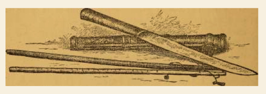
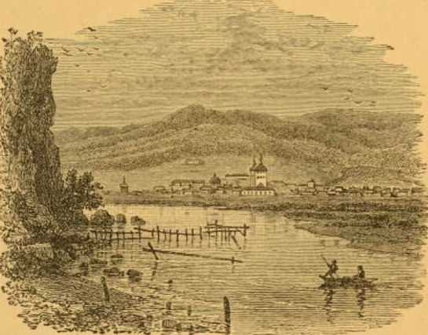

| 「モンゴル人の友となりて」完全版 | |
| Unknown | |
| (2016) | |
この本との出会い
モンゴル通信 「崑崙の高嶺の此方より」

画 S.SUMBER
第24回 ギルモア著「モンゴル人の友となりて」（1）
（2002/3/3 記）
司馬遼太郎「草原の記」に次のような一節がある。
『いわゆる満州にいた日本の関東軍の兵士は、ソ連にによって実質上戦争奴隷としてシベリアに送られ、建設現場で労働させられたのである。
その一部がモンゴル高原に拉致され、この街の建設に使役させられた。
多くのひとびとが死に、この首都郊外のアムラルトの墓地に八百八十九が眠っている。
そのことをおもうときに、この街の灯が、ときに死霊が点々とともすほむらのようにもみえる。
そのとき抑留された医師春日行雄氏に『ウランバートルの灯みつめて五十年』という大著があり、その本がつねに私の座右にあって、小さな灯のように私を刺激しつづけている。』
その春日行雄氏はまた遡ってギルモアを次のように書いている。
『ギルモアの『蒙古人の友となりて』(後藤冨男訳、生活社)をゲルで味読して、医学を渇望していたところ、はからずも松崎陽・内蒙軍軍医顧問に拾い出され、ハルビンの満軍軍医学校へ。卒業して帰蒙途上、熱河で終戦。』
私はギルモアの著 書『蒙古人の友となりて』(後藤冨男訳、生活社)をJICAの図書室で見つけた。
表表紙も裏表紙もはずれていて、いつばらばらになるやもしれぬ状態だった。
他では入手できそうもない本なので、散逸する前に電子化しようと思っていたところ、バトフさんもモンゴルにとっても貴重な本なのでモンゴル語に翻訳したいと申し出てくれた。
いつ完了するという目処は立たないが、成り行きまかせでできた所から不定期に公開しようと思う。
以下はその第１回目の原稿である。
次回は第19章「草原の正月」を予定している。
英文の原書
2013年11月18日(月)記
1883年5月ロンドンで公刊されたギルモア著「モンゴル（蒙古）人の友となりて」の英文の原書が無料のeBookで手に入った。
Among the Mongols.
iBooksで閲覧可能。
https://archive.org/details/amongmongols00gilm
もう一つの著作
JAMES GILMOUR OF MONGOLIA HIS DIARIES LETTERS AND REPORTS
訳本の表紙
「モンゴル人の友となりて」Kindle版
ジェームズ・ギルモア 著 (1883.05)
後藤冨男 訳 (1939.09.06)
佐藤武久 編集・電子化（2016.2.8)
（原書の表紙 ）

（ギルモアの肖像
）

編集者のまえがき
この電子書籍は「蒙古人の友となりて」（ジェームズ・ギルモア 著 (1883.05) 後藤冨男訳 (1939.09.06)）を電子書籍化したものです。電子化にあたり「蒙古」を「モンゴル」に、「喇嘛」を「ラマ」に、「包（パオ）」を「ゲル」に置き換えるなど旧仮名使いや古い言い回しの一部を改訳しております。
なお、1883年5月ロンドンで公刊された英文の原書「Among the Mongols」の無料のeBookが次のサイトで入手でき、iBooksで閲覧できます。
https://archive.org/details/amongmongols00gilm
さらに、もう一つの著作も下記サイトで入手できます。
「JAMES GILMOUR OF MONGOLIA HIS DIARIES LETTERS AND REPORTS」
目次
訳者より
はしがき
第1版原序
第１章 草原「上陸」
第２章 古語点描
第３章 冬のバイカル
第４章 ブリヤート伝道会の遺跡
第５章 乗馬の練習
第６章 ゲルの一夜
第７章 経験を購う
第８章 砂漠旅行の要領
第９章 モンゴル人の食事
第１０章 モンゴル役人の裁判
第１１章 ドロン・ノール
第１２章 庫倫、フレー、またはウルガ
第１３章 五台山
第１４章 カルガン（張家口）
第１５章 モンゴル人の診療
第１６章 モンゴルに福音を使いす
第１７章 キリスト教とモンゴル人
第１８章 モンゴルの仏教
第１９章 草原の正月
第２０章 モンゴル人の結婚
第２１章 親しみ易いモンゴル人
第２２章 モンゴルの盗人
第２３章 モンゴルの法廷
第２４章 モンゴルの監獄
第２５章 モンゴルの酒
第２６章 真夏の廟会
第２７章 モンゴル人の服装
第２８章 モンゴルのイソップ物語
第２９章 モンゴルの説話
第３０章 モンゴルの狼
第３１章 モンゴルと北京
(EOF)
訳者より
昭和13年の夏、内モンゴルの奥地巡遊の旅に出た私は、奉天図書館長衛藤利夫氏の新著「韃靼」一巻を携え、あちらのラマ廟、こちらの蒙古パオの野営毎にロウソクの光ですこしづつ繙いた。
粗雑な読み方であったが、韃靼の荒野にあって現地の風物に親しみながら読んだせいか、全編に非常な感銘を受けたのである。
同著の巻頭の両編は、ジェームズ・ギルモアの「蒙古人の友となりて」(James Gilmour: Among the Mongols)の紹介とその内容の一節の考証であったが、これには特に興味を抱いた。
私は最近満州・蒙古・支那内地における新旧キリスト教の布教事業に関心を持ち、蒙疆各地においてもできるだけ注意を怠らず、それらの史伝を少しばかり齧っていた。
しかし、ギルモアの著書も張家口に持っていながら、実はそんなに面白い本であるとは知らずに、古臭い装丁に多少うんざりして覗いたこともなかった。
衛藤氏の同文はいずれも昭和7年に発表されているのであるから、注意深くそれに気を付けていたら、今そんな事情を明らかにする必要もなかったわけである。
さて、1ヶ月ばかり経って張家口に帰った私は、早速「蒙古人の友となりて」を読み始めた。
そして衛藤氏の紹介の決して溢美でないばかりか、むしろなお尽くさぬ感あるを知ったのである。
私は体験さえ豊富になれば、モンゴル人の生活とか習慣を（旅行記風にではなく）まとめてみたいという野心を持っている。
しかるに、60年も前にもっと深く、もっと興味深い筆致でこれをなしとげた人があろうとは知らなかった。
そこでむしろこの書を翻訳して、最近ようやくこの方面に関心を持ち始めた祖国の読者に紹介しようと思い立った。
（著者ギルモアの雑誌と書籍のリストがあるが省略）
これらの雑誌や書籍のうちには容易に入手し得ないものもあるだろうし、訳者の手元にあるのはリチャード・ロウヴェットの「蒙古におけるギルモア」のみで、他はいずれも未見である。
今これによって略歴を記せば・・・・
ジェームズ・ギルモアは 1843 年６月２１日、グラスゴーに近いケイスキンに生まれた。父は同名のジェームズ・ギルモア、母はエリザベス・ペティグルー、6人兄妹の３番目がこの「蒙古の」ギルモアである。
ケイスキンはグラスゴーよりわずか５マイルを離れるのみなので、少年時代の彼は概ねグラスゴーで教育を受けた。
グラスゴー・ハイスクールおよびグラスゴー大学が彼の母校である。
友人の手記によれば
『ギルモアは在学中、終始極めて刻苦精励の学生であった。その忍耐・不屈・勤勉の努力は驚嘆すべきものがあった。しかも彼は概して明朗快活であって、一瞬の内に学業の注意を転じて、熱心にその日の話題に夢中になることができた。彼は事物のユーモラスな一面を見るにさとく、その陽気な哄笑には皆が釣り込まれた』
ギルモア自身も
『1863年と4年、私はグラスゴーに住んで熱心に研学し、ギリシャ語中級とラテン語上級に１等賞を得、次の学年にはギリシャ語上級を選択した』
と述べている。
この他、倫理学・道徳哲学・英文学等を選択した。友人の間には語学得意の男として印象されていたらしい。
『1867年の学年末に、私はロンドン伝道協会と契約を交わし、その結果同年9月チーシャント・カレッジに転ずることとなった。ここには（1867−68）新しい体験ー学寮生活が私を待っていた。
私はチーシャント・カレッジにおける（1868−69）の学年を極めて繁忙に過ごし、学業のほか多くの読書をしたが、これが私の遊牧的もしくは伝道的生活に対する観念に新生面を開いた。
1869年9月、私はハイゲイトの伝道員養成所に入り、またロンドンにおいてサマース教授につき支那語の学習を始めた。クリスマスに帰郷して、ふたたびロンドンに出ると、希望次第渡支し得ることになっていた。私は必要の準備完了せば直ちに渡支する旨を申し出て、1870年2月22日をもって出帆の期日と定めた。』
ギルモアをしてロンドン伝道協会と交渉を持たしめるに至った動機としては、その著にも功績を偲んでいる「蒙古伝道の先駆者」スワン夫人とエジンバラにおいて会見したことを挙げねばならぬ。これは1869年のことであった。
★
したがって、ロウヴェットも言っているように「ジェイムズ・ギルモアがその一身を捧げたのはモンゴル諸種族の間における伝道事業の再開と発展であった。」
26歳の青年は、燃ゆるがごとき熱情を抱いて1870年5月18日、物寂びた中国の古都に到着し、伝道協会の支部をもってその後生涯にわたる活躍の根拠としたのであった。熱心な支那語の学習とモンゴル伝道会再開の手段の考究とが、青年ギルモアのすべての心を奪ったと伝えられる。
『天津の虐殺後、北京には重々しい恐怖が立ちこめた。陰謀の枝葉がどこまで延びているか何人も五里霧中で、これを精査することは不可能であった。民衆は公然と削滅を叫び、これについては政府を擁護すると主張した。』
これは前年天津において民衆がフランス人を惨殺し、教堂を焼いた暴動の余波で、清朝末排外運動の無気味な流れが渦巻いていたのである。
しかし、熱情の青年を阻止すべきいかなる障害もない。ギルモアはその年8月5日北京を発足し、4日後張家口に到着、同月20日キャフタに至る大モンゴル草原行を開始した。
庫倫を経てキャフタに至り、セレンギンスクや先駆者の遺蹟であるオナゲン・ドームを歴遊し、バイカル湖を横断してシベリアを放浪した体験は、その著にも記されている。「見学」は約10ヶ月をもって終了し、翌1871年6月11日張家口に帰還した。
★
ギルモアがいよいよモンゴル伝道の計画なって、再度「草地」に乗り出したのは1873年である。この年彼は張家口を本拠として、3回の草原旅行を試みた。その第2回の旅行で、彼はアルタン・メールにおいて「地獄の宴楽」を眼の当りし、漢人の残虐性に戦慄した。
当時、医療伝道は極めて幼稚の域にあり、効果についても疑われていたが、ギルモアは自己の体験に基づいてこれを敢行すべきことを報告中に力説している。
『私は疾病についてほとんど知るところがない。しかし、わずかながら私の知るところは、極めて有用である。・・・・・祖国で医学を学んでいたら如何許り大なる援助となったかと思うが、私自身はすでにその科学的知識を得る由もないので、ダッジオン博士より当地医院において十分な手ほどきを受け、今日ではこの格好の手段を最大限に利用し得るに至った。』
ことは平凡であるが、彼のモンゴル伝道の体験がもたらした貴重な収穫であり、未開な異教徒強化の重要な手段として、在支那伝道会活動の指針を与えたものと言い得るであろう。
されどーーー「帰依者という形では、私は未だなんらの成果を得ていない。私の知る限り、キリスト教徒たらんと欲する者さえ出会わない。しかし、彼らの疾患を治療してやることにより、私はイエスという偉大なる医者について多くを語る機会を得た。』
★
1874年12月8日、ギルモアはバンカード嬢と結婚した。新婦は万里の波涛を遠しとせず、スコットランドより支那を訪れ、天津において「初めて」会見した。これを迎えたギルモアは『シベリア放浪の旅に着古した外套』をまとい、『船の機関士と間違われた』
★
ギルモアは1880年以来健康を害し、本国静養を勧められていたが、同82年に家族と共に英国に帰った、というよりも訪問した。
この時、彼は12年のモンゴル生活における見聞や体験を記述した分厚い原稿を携えて帰った。
これがすなわち、1883年4月、宗教文献協会より『モンゴル人の友となりて』（Among the Mongols)と題して公刊されたーーー本書である。
英国滞在18ヶ月にして、1883年11月、ギルモアは北京に帰っている。
★
翌年2月、再び草原に、今度は徒歩をもって未曾有の大伝道旅行を試みたが、『茨と砂丘の平原に福音を伝える』という大目的については、己の意にみちた効果をあげ得なかった。この当時の彼の日記はかなりその悶々たる心情を吐露している。この気鋭の神の使徒も、無関心に馬を走らせる『韃靼人』の姿や、傲然と金甍に輝いて草原を見下ろすラマ廟の堂宇に、幾度か悲嘆の声を放たずにはいられなかった。
のみならず、1885年の夏以来、ギルモアの胸にはまた一つの憂悶が加わった。愛妻の健康がとかくすぐれないのである。
彼女もまたギルモアの天職を理解し、伝道の援助にかいがいしく働いた。新婚のはじめより『彼女は全精神を伝道事業に打ち込んだ。彼女は良人と同様の方法でモンゴル語を学び、幾度かモンゴル・ゲルの不自由な生活をしのび、モンゴル人と自由に会話し得るに至っていた。』
しかし、ギルモアの手厚い看護もかいなく、その年9月18日、夫人は異郷の空において『河を渡った』ーーーなお残暑の厳しい初秋の北京において昇天したのであった。
最愛の妻と最も忠実なる助手とを同時に失ったギルモアが、いかに力を落としたかは察するに余りがある。
★
その後における彼の活動区域は主として東部内モンゴルーーー今日満州国に属する農業定住地に移された。北支那にも伝道の伝道の跡がある。阿片については特に貴重な報告を残している。しかし、片時といえども彼の脳裏を去らなかったものはモンゴルであり、モンゴルの土地での伝道も、漢人移民を通じて、徐々に実を結びつつあったことを知らねばならない。
1891年5月21日、彼は天津においてわずか48年の活動の生涯を閉じた。肖像に見るギルモアの外貌がいかに年老いているかを注意せよ。モンゴルおよび北支に在住22年、あながちに長いとは言い得ないにしても、またその伝道の成果はその全身を打ち込んだ努力に報いること余りに少なかったにしても、伝道史上におけるギルモアの功績は燦として消えない。
★
『ビブリオテーカ・シニカ』によれば、ギルモアはその活動の跡を次のような著作に残している。
（リスト省略）
★
『モンゴル人の友となりて』の各節に、われわれは飄逸な行文の間に滲み出る伝道の苦悩を感ずることができる。『怠慢な手に負えないモンゴル人』の描写の裏に、にじみ出る遊牧民への愛情を見出すことができる。仮にそのラマ教観に若干のキリスト教的偏見を免れ得ないにしても、同時に仏教徒たるわれわれすら見逃しがちの犀利な観察が見受けられ、教えられるところは少なくない。私は何よりもギルモアが、モンゴル人とともに呼吸し、共に茶を啜り、共に穹廬に眠ったことを尊敬したい。内モンゴルの善隣事業に従うわれわれは、ともすればモンゴル人を甘やかし、」その欠点も見過ごしがちである。また反対にその欠点の追求に急にして『度すべからざる』モンゴル人に匙を投げる旅行者も多い。その何れもが誤っている。内モンゴルーーーのみならず全モンゴルの復興事業は、モンゴル人の凡ゆる欠点と短所を究明し、しかもなお燃ゆるがごとき友愛をもって育成せなばならぬのではあるまいか。
私自身はキリスト教徒ではない。されど彼らの献身的な熱意と努力とは最も敬服するところだ。若き日本の内陸アジア工作の第一線に立つ人々に教科書として、文学よりも行間に躍動するギルモアの熱情を汲んでもらいたいと希望して止まないのである。
これは衛藤氏が言うように、デフォーの「ロビンソン・クルーソーに比すべき貴重なる『草原の漂流記』であり、モンゴルの生活記録でもあるとともに、優れた伝道文学として推奨すべきものであろう。そしてわれわれの日本に、このギルモアの著に比べることのできる文学と体験を未だ持たぬことを私かに恥ずかしいとも思うのである。
昭和14年7月 訳者識
はしがき
第１版原序
第１章 草原『上陸』
平原の第一夜ー草原の曉色ー茶を沸かすーロシア兵とモンゴル犬ー夜に入って同業者着くー夜明けの出発ー正午休止ー別離の宴ーロシア風の別れの挨拶ー遥かに沙漠を行くーキャラバンの隊員ー行進の規律ー交際の困難ーポケット会話書ー鴨撃ちー兵站部ー新手の駱駝ーウルガーウルガ北方の山岳と森林ー山越えー椿事ーキャフタを望むーロシア教会に祈るーモンゴルラマ来る
日が暮れてから何時間か経ち、すでに夜は更けていたがなお行進を続けていると、突然右手の方に数人の大きな叫び声が聞こえる。やがて荷車の道を外れて草地に入ったのが感ぜられて、数分後われわれは立ち止まった。荷車の戸口に這い寄って帷をかかげれば、闇黒の中に一人のロシア兵が跪いて濛濛たる火を吹いているのがぼんやり見える。火は時折弱い炎をユラユラ立て、その瞬間だけ、ちょうど兵士の顔とその背後に半ば張られた天幕の真っ白な内部を浮き上がらせる。声高にモンゴル語を話す多くの人々が荷車の傍に集まった。まもなく目が一層周囲に慣れてくると、その辺に雑然と横たわる駱駝や荷の暗い輪郭を識別することができた。支那人の御者は、予定のごとく私を支那宿に案内せずに、この広々とした平原につれて行き、二頭のロバを外し、同行して沙漠を横断するはずのモンゴル人隊商の宿営に私を残して立ち去った。
我々は正午少し過ぎに張家口を出発して、休止することなく行進したのであった。行路の一部は高峻な峠越しで、鋭い大気が鋭い食欲を刺激した。暗くなって様子が判らなくなってからは脳裏に皿のずらりと並んだ魅力のある光景を、ここ一ヶ月は望み得べくもない昨夜の旅店の厚遇を憶ったも当然であろう。覗いてみて、見出したのが旅店の庭ではなく、荒野に宿営する隊商であったのには驚いた。幻影のご馳走は消え失せた。もう旅店には交渉がない、私はすでに沙漠の旅にかかっているのだ。
私は食料や炊事道具を十分に準備し、どれもキャラバンの荷物の中にあるのだが、闇中品物を探し出すのは容易でなかった。おまけに、夜はすでに深夜に近く、火はなかなか燃え上がらない。隊商の外の者は食事をしていないので、手間取るよりはと、提供された火の使用を断り、食事を共にしようという申し出を受けた。この事が決まって、我々は焚き火の周囲に集まり、食事の進行を見守った。持ち出した大きな浅い鉄鍋は新品で、まず清掃に取りかかったが、洗い方が極めて不満足なので、私自身は冷鶏肉にしようと思った。これは、親しくモンゴル旅行の困苦を経験したことのある一婦人宣教師が親切にも周到に贈られたもので、火明かりの傍で一部分を喫し、今し火床より外した鍋から木椀によそいつつあるモンゴル人とロシア兵とを残して、夜を過ごすべく荷車に退いた。荷車は一人の男がのびのびと横たわるに十分な長さがあり、昼間の疲労と奇異な環境とを忘れて早くも眠りに落ちた。
翌朝、荷車から顔を出して見ると、太陽はすでに空高く上がっていた。モンゴル人たちは焚き火を取り囲んで、昨夜私が引き取るときにつついていた鍋をじっと見ている。今度は米ではなく茶を満たし、恐ろしい勢いで沸騰すると、汲み出してこれを高いところからあけ返して鎮める。駱駝はほど遠からぬ場所に散在して、平原を覆う植物や草花の真っ只中に食んでいる。やや離れて少しばかりモンゴル・ゲルがあり、その背後は昨夜越してきた緑色の丘陵の波、前方は明日出発して行くべき広々とした平原である。
この日は日曜日で、何れも旅行者たちが到着して我がキャラバンの勢ぞろいを待つばかり、愉快な休息に終日を過ごした。一度だけ、突然椿事が勃発して休息が破られた。大きな喚声が起こったのでモンゴル・ゲルの方を見やると、一行のロシア兵が、そこの犬に追いかけられて全速力で走っている。犬が早くもこれに追いつこうとしているのが見えた。一時事態はどうなるか判らなかったが、距離が遠くなかったので、当ての外れた獣共が跳びかかる前に、兵は低い戸口から逃げ込むことができた。
モンゴル犬に追いかけられるロシア兵
彼は危険を慮ることなく」、不注意にゲルの方を逍遥したのである。すると小離れた平原上にいた犬が、突然彼を見つけて追いかけてきた。これを認めて彼は誰か親切に注意してやらなかったら、犬共は彼の気付かぬうちに跳びかかったであろう。追掛けられたものが逃げおおせるやいなや、傍観者・土民、それから被追跡者の感情は一時に緩んで爆笑した。しかし、この冒険は、ことは些細であるが、見知らぬものがモンゴル人の住居に接近する場合の注意を、極めて現実的に教えたものとして役に立った。
夕方になったが、待望の旅行者たちは姿を現さぬ。彼らが到着して、一同の安眠を破ったのは、実に夜に入ってしばらく経った後であった。
翌朝、早く朝食を終わり、私と沙漠行を共にするロシア人家族の警衛にきた数名の友人が朝の狩猟に出かけると、その間にモンゴル人は熱心に荷物を整理して駱駝に積み、第一半日の行進の準備をした。正午の休止を行うと間もなく、狩猟家は戻ってきて、宴会が行われ、歓談に花が咲いた。いよいよ最後のさようならが交わされたが、ロシア人の男同士互いに接吻して別離の情はさらに切なるものがあり、日没約一時間前、ついに袂を分かって友人らは支那に向かって南下し、我々はロシアに向かって北上した。ちょうど船に乗って航海に出ようとしている時、航海者が友人に最後の挨拶の手紙を残すのと同じような感慨だ。
われわれは今や、支那北境の城邑張家口からロシア南境のキャフタに至る、行程約八百四十英マイルの月余の旅のスタートを切ったのである。
キャラバンは、数年張家口にあり、今妻に子供四人、兵士一人」ーーー彼の主人のことを「司令官」と呼ぶーーーをつれて故郷のシベリアに戻るロシア人郵便局長と、私自身と駱駝車を馭する四、五人のモンゴル人とより成っていた。
郵便局長は彼自身と家族の用に駱駝車二両と、別に食料や家財道具を運ぶのに数頭の駱駝を有していた。私は駱駝車一両と荷物を積んだ駱駝一頭を持っていた。ロシア兵は駱駝の積荷の上に跨り、この他穀物を輸送する一列の駱駝がいたが、これはモンゴル人の個人の商売用で、我々もこれらモンゴル人から駱駝を賃借したのである。
行進の規律は沙漠そのものの景観のように、規則正しくかつ単調であった。日の出と共に全員起床して、朝食を調理してこれを認める。それより行進を開始して通常は正午まで続く。この時間になると、どこか天幕を張るのに適当な処で休止を宜し、駱駝は解いて付近に放牧し、一日中でのご馳走を作って腹ごしらえをし、日没一時間ほど前からまた新たな行進を開始する。この夜間行進は最も長時間行われ、普通真夜中すぎるまで、時としては翌早暁まで続く。砂漠の道路は大部分凹凸なく、駱駝車の震動も睡眠を妨げなかったが、ただ汽船の乗客はスクリューが止まると目を醒ますように、駱駝車が止まると起きるのが気になった。
すでに長い間旅行を続け、休止も幾度か重ねたが、我々はーーーロシア人は両親と子供、私は召使がいないので料理番と二人ーーーはほとんど交歓の機会がなかった。時間と機会に恵まれた時でも、なかなか会話を交えるというわけにはいかぬ。ロシア婦人は母国語の他の言葉を解しないし、私はまたロシア語を少しも知らないので、挨拶の交歓はだんまりで行わなければならなかった。彼女の良人、「司令官」は多少支那語ができ、私も少しばかり知っているが、支那語に行き詰まると、モンゴル語で私に意思を通じさせようと兵士を呼ぶ。しかし私はモンゴル語については支那語より一層あやふやなので、それも無駄な努力であった。
一日中で郵便局長と私が会話を試み得るのは日没から暗くなるまでの間だけで、この時は子供も静かであるし、彼と私はキャラバンの付近を涼を入れつつ散歩し、できる限りの会話をする。何とも手段がつかなくなると、彼は最後の方法に頼る。ズボンのポケット深く手を入れて、露支会話帳を取り出し、ページを括って、私に判りはしないかと支那文を指し示す。判る時もあり、判らぬ時もあった。
郵便局帳は、張家口に来ているロシア人のご多聞に洩れず、スポーツマンであり、またきわめて優秀の狩猟家で、しばしばカモやガチョウを撃って食膳を賑わした。ある時、彼は小河の沿に降りたガチョウの中から四羽を打ち取った。この時は射撃によらず、乏しい弾薬を節約するために道の小石を拾い集めてこれを用いたこととて、なおさら信用を博した。食料品については、我々はそれぞれ自己用のものを持っていたが、事実上唯一の難点は獣肉にあった。張家口出発にあたり、私は羊の干し肉を準備し、郵便局長は編み篭にいっぱいの鶏肉を持って来た。鶏肉と干羊肉とは時を同じうして食べ尽くしたので、必要な際には羊を買い、局長が大家族のために大部分を取り、小さい部分は私に割り当て、またモンゴル人たちも内臓の分配に与ったが、これを彼らは最上の珍味と思っているらしかった。
三百マイルも行った頃、モンゴル人たちは直通路より外れて己の家郷の方に回り道をし、われわれには新しく駱駝と人員を世話した。これらが張家口より六百マイルを距てる庫倫（ウルガ）にわれわれを案内し、同地において契約が満了するのである。この地においては郵便局長の厚意により、残りの三分の一の行程をキャフタに案内するモンゴル人と駱駝の見つかるまで、二日間領事館邸で歓待を受けた。
庫倫（ウルガ）北方においては地域の景観は面目一新する。樹木のない大平原の代わりに、森林に被われ、肥沃な河谷を貫く渓流に劃された山地が現れる。庫倫（ウルガ）出発に当たって、われわれは荷車を曳く牡牛を雇うために、團茶（だんちゃ）を用意した。登破すべき山径は、駱駝にとってはあまりに嶮岨高峻なのであった。もっとも荷積の駱駝はさしたる困難なく峠を越えたが、坂道がきわめて嶮岨なため、牛は山越えの旅人、用に充てるために飼育賃貸せるものであるにかかわらず、荷車の牽引に多大の難色を示したがだいたい予定の期間内にまた大した災難なく全行程を渉破し得た。ただし、小さな事故はなかったわけではない。一夜私は虚空に舞い上がったように感じられて目が覚めた。荷車が転覆して、私は内部の荷物の一番底に下敷きになった。這い出すのに幾らかの時間を要したが、出てみるとロシア兵がモンゴル人に不注意で事故を起こしたのだと猛烈にくってかかっている。「司令官」が部下の応援に出たのを見て、私は急いで仲裁に出たが間に合わず、モンゴル人はロシア人の敵ではなく、すでに猛烈に殴られていた。
予定の月末のある朝、一行が突然松林地帯を出ると、前方あまり遠からざるところ、広く浅い谷の向こう側にキャフタを望見した。ひときわ高く目に立つものは教会で、聳え立つ円蓋の眩しいような白さは遠方からも認められ、支那より沙漠を横断してきた旅人にとって再び文明に近づいたことを示す最初のしるべである。
キャフタと白い教会とは近ずくようではあるが、実際の距離は目で見たところより遠く、ことに渓谷の底を流れる小川は河床があまりに柔いために駱駝車を通せず、迂回して渡渉するを要し、なおさらに遅延を生じた。やがてキャフタに到着すると、キャラバンの全員は教会に赴き、ロシア人はことごとく祈りを捧げにこれを訪れた。それから我々は二マイル離れたロシア領人口三、四千のトロイツコサフスクの町に行った。ここで道伴れは、ロシア官吏のために設けられた旅舎に入った。彼らは数日後どこかシベリア奥地に旅立った。
モンゴル人に賃銀を支払い、適当な心付けをやって解雇してから、そのうちの一人のラマが戻ってきて、私にロシア銅貨一枚を差し出した。銅貨自体の価値は小さいが、私は一人の男の与えられたものに対する感謝の気持ちと考えて、この贈り物を嬉しく思った。しかるに友人はこの行為の解釈を異にし、与えられたものに対する感謝でなく、モンゴル人が友情を暖めんとしたもので、お返しとして銀貨をくれることを私に予期しているのだと見做した。ラマの行為にはこの仮定を肯かしめるものがあり、すでに彼は価値以上のものを与えられていることとて、私は鄭重な素振りでその銅貨を返し、この伴を打ち切った。
彼は贈り物を断られても少しも当惑した風を見せず、これを手にして立ち去った。
（EOF)
第２章 モンゴル語点描
モンゴル語会話書ー張家口のモンゴル語教師ー思い違いの文句ーブリヤートテントと手帳と鉛筆ー進歩意に任せずー易きに就くー読経するラマーモンゴル人の住居ーテントの安易さー学習方法ー進歩ー授業の失敗ーゲルで語られた言葉の純粋性ー一般モンゴル人会話の卑猥−テント生活の様式ー「寒さの湯気」ー茶ー「わがギルモア」にスープのご馳走ー食事ー臓物ー寝所ー木炭ー薪ーテントの失火ー氷雪を溶かして水とすー主人のラマ帰郷すー新しいモンゴル人の宿所ー父子喧嘩ー闇夜の驚愕ー逃亡ー南モンゴルの生活
北京出発前、私は『北京・キャフタ間道路図』を贈られた。この地図は北京・張家口は役に立ったが、それより先は無用であった。その理由は、張家口よりキャフタまでは幾多の道路があるにかかわらず、地図に記されているのは一本であり、われわれのキャラバンが別の道を行ったというだけのことである。
しかし、地図の欄外にすこしばかりモンゴル語の単語と熟語が記してあり、研究心の深い旅行者が沙漠の土民と話をする場合の助けになる寸法であった。これらが私の最初のモンゴル会話書として役立った。沙漠旅行のためのモンゴル人と駱駝とが見つかるまで、約2週間張家口で延引していた間に、私は、ちょうど、厄介になっていたアメリカ宣教師の教師をしているモンゴル人から教えを受けた。地図とモンゴル人教師、この二つの助けの他に、私はシュミット（Schmidt)のモンゴル文法書も多少熟読した。張家口出発までには、支那語の仲介を借りて、モンゴル人教師に『私はモンゴル語を話せません。今それを習っています』というモンゴル文を教えてもらう、これによって出会うモンゴル人との緒をこしらえ、そして多分日常生活の共通の事物や行為を示す言葉を話させることができるであろうと考えた。このためには常に鉛筆と小さな手帳を携帯し、これによってこうした言葉を書き留めるように準備した。言語的にも物質的にも、かかる貧弱な用意をもって私は沙漠に入り、見つかるだけの言葉を片っ端から書き抜こうとした。
私は間もなく、モンゴル人教師を想い出す破目になった。だんだん言葉が判るようになるにつれて、教師が教えてくれて、しかも私が挨拶するモンゴル人の大部分に得々と繰り返していた文句は、言葉をならいたいという願望を表現しないで、ただ知っているだけの雑多なモンゴル語を並べていたに過ぎぬ事に気がついた。
地図の欄外にある言葉の中には、役立ったものもありモンゴル人が私の発音から解しかねたものもあった。これも彼らの言葉を英語の綴り字で表現することの困難を考えれば、驚くにはあたらなかった。中には記してある章句が遠方の種族の慣用句であって、われわれの旅行しつつあるモンゴルの土地では普通につかわれぬものであった。
シベリア到着後最初の1ヶ月は、ブリヤート語の用いられる区域に過ごした私はとある人の家に寄寓し、教師の助けを借りたり、手帳と鉛筆を持って民衆の間に入っていったりして、言葉の書き抜きに努めた。この後の場合には必ずしも常に同じ成果は得られない。多数の有用な語句を書き抜いた日もあり、そうした成功を見ない日もあった。私はシベリアに住むモンゴル族ーーーブリヤート人の帳幕を訪れるの常であったが、多くは鄭重に迎えてくれたものの、疑惑の眼をもって見られた場合もあった。
雪の日、ある天幕を訪れ、調子よく主人の淡白なブリヤート青年から沢山の言葉を聞き出していると、三、四人の人相の悪い男が入ってきて主人に何事か言い、私に詰問しようとした。
これがどんな印象をブリヤート青年に与えたものか、やがて彼らの闖入に妨げられた仕事を続けようとすると『知らない』というより返事をしなくなった。何か行き違いのあったことは明らかで、またこれ以上のその帳幕内で手の施しようようもないので、私は立ち去った。すると某日主人が帰って来て、数人のブリヤート人が得体の知れぬ妙な人物と知り合いになって、これを捕まえて地方長官に差し出そうとしたという耳よりの話を物語った。彼らはこの意向を実行に移さなかったが、男の様子と自分らの疑惑を述べて、地方官憲に通知した。彼は私がこの地にいることに気付いたので、彼らの興奮を鎮めることができた。その後は言葉の募集に疑惑を招いた経験もなく、半ページに上る語句をしとめて、大猟を自慢する狩猟家よりも誇りかに帰宅した日もあった。
このようにして1ヶ月を過ごして私はキャフタに戻り、寄宿先に頑張って、主としてスタリブラスおよびスワン両氏がブリヤート語に翻訳した聖書の読解に力を注ぎつつ、モンゴル語の研究に従った。しかし、適当な教師を捜すことは困難であり、ようやく見出した教師は無能力で、しかも一日のうち都合の悪い時間に、彼自身もすっかり疲労し半ば居眠りしているような時しかやって来ない。研鑽これ努めたにかかわらず、明らかに私は満足すべき進歩を示さなかった。
しかるについに我慢しきれなくなった。というのは、ある晩友人が偶々私が招いた二名のラマと話をしているのを聞いて、もし彼が私ほど長くモンゴル語を研究していたら、もっとうまく話せるだろうと語ったのである。この少し以前から私は劇しい勉強と遅々たる進歩に飽き足らなかったので、右の言葉が笑談半分で別に私をどうしようとする底意のあるものではなかったけれども、負いきれぬ駱駝の背に最後の藁一本を積んだ結果となった。
翌朝、犬よけに重い散歩杖を手にして、私は国境を越えてモンゴル領のキャフタに行き、歩行二時間にして、かねて知り合いのラマのゲルを訪れた。帳幕に近ずくとラマの声が聞こえてき、私が入っても一言『坐れ』と言って、手まねで場所を示した外、相変わらず読経を続けていた。坐ると、10分か15分間は私の存在を無視していたが、まもなく念経が終わると、たった今私が入ってきたかのように挨拶するのであった。
お茶を沸かし、しばらく雑談してから、私は訪問の目的、つまり彼のゲルに同居して、彼を先生としてモンゴル語を習いたいと述べた。彼は全く乗り気であったが、ただゲルが余りに貧弱なので私が凍えはしないか、またモンゴル風の飲食物しかご馳走できぬから私の口に合うまいと懸念した。いつから始めるかという彼の問いに答えて『今すぐに』というと、彼は承諾してくれたが、私は早速もうモンゴル・ゲルの同居人になったように感じた。
翌朝、寝具などを取りに、彼はキャフタの私の住居まで同行してきたが、道みちわれわれは条件について相談をまとめた。彼は一日一人一シリングと少しばかりの代金で、食わして住まわしてかつ教えてくれることを承諾した。それ以来、私は一週間をロシア人とモンゴル人の下宿に割り振って、三日、四日あるいは五日を帳幕に暮らし、残余を文明の裡に過ごすことにした。
帳幕については、一から十まで、驚くほど私の要求に適った。所有者のラマは二百マイルばかり家郷を離れてきていたので、われわれは彼のよけいな家族に煩わされることもない。また、彼はここに仮住居をしているにすぎないので、犬もおらず、私は自由に出入りできた。彼は富裕なので、いつも威勢の良い火を絶やさなかったが、それは到底貧乏人の帳幕では許されぬ贅沢であった。
彼は職業柄常に両三名の下僕を身辺に置くことを必要とし、またかかる地位にある人間として上等の茶ーーー沙漠の大きな魅力ーーーを手元から離し得ない。したがってゲルの中には二、三人のモンゴル人が閑談していない時はほとんどなかった。
この後者ーーーモンゴル人によって傍若無人に語られる会話ーーーは正に私の欲する所で、私は鉛筆と手帳を手にして座り、捉まえた得た語句を書き留める例であった。帳幕を出入りする場合に交わされる感動詞や挨拶の文句、隣人や訪問客に対して、またこれについて行われる批評、畜群の監視や炊事や火のつぎ方について召使いに下す指図、いずれもありのままの新鮮さと純粋さをもってこれを捕捉して手帳に書き写した。昼や夕方の人気のない合間に、書き留めた所を繰り返し繰り返し熟読するのである。
こうした語学の学習方法によって、まもなく私は自分の理解しまたは教師の説明してくれる以上に多く話得るようになった。熟語の分解もできず、単語の組み立てを分析することもできず、自分の話すことの意味に至っては一層理解する所少なかったが、どんな場合、どんな風にこれを用いるかが判り、必然に最も普通に用いられる言葉を学んだのである。こうして、書物には学力の一部を割くに止めて、私はやがて相当の進歩を来したと認めるに至った。
私は、教師が私のやり方に必ずしも満足していないのを心配した。私は彼の教育から多大の利益を受けて居り、そのゲルに同居するに至った誘因というのも、彼が読み書き解釈のよく出来る優れたモンゴル人学者であることを知っていたからである。彼も教師として私に対する責任を忠実に守ろうという観念があって、同居させてから数日後、私を呼んで最初の形式的課業を受けさせた。
この時も、その後一両回の学課も成功とは言われなかった。私に教え始めるや否や、彼は私に訳の分からぬわざとらしい言い回しをして、私が理解しないので彼も当惑する。そんな言い回しを固執するので私も当惑する。お互いに苛々して放擲せねばならなかった。その後も依然として良好な結果が得られないので、数回こうした授業があってからは私はこれを避けた。彼が私に教授する気配が見えると、何時も私は散歩杖を手にして二時間の散歩に出かけた。帰ってくる頃には、彼は忙しいかあるいは目論見を忘れてしまっているかしていて、その日一日免れるのである。会話に通じたものにはこれより良い文章語の先生はあり得ないが、当時訳の判らぬ文章を私に教えようとしたのは、時期尚早の無用の労力であった。
誰かがたまたま喋ったことをことごとく反復して言語を学ぶという方法には、選択した語句に必ずしも妥当でないものがあるという小さな欠点がある。言葉が少し判り始めると文句に適切でない箇所があれば直ちに明白になって、避けることができる。また例のゲル内で普通に交わされる会話の純粋性については、こうして無差別に学んだ幾多の章句のうち、熟知するに及んで見出した使用に適せぬものは二つに過ぎなかった。このうち大なる方の欠点は結局きわめて無害であり、他は欠点と言うよりもむしろ馬鹿馬鹿しいことで、何にせよ卑猥の懸念は全くない。
しかしモンゴル人の一般会話が高尚なものであると想像するのは、大きな誤りであろう。至らざること夥しい。文明人の耳朶を衝動する無数の言い回しや表現など、淫猥な心情よりはむしろ教養のない風俗習慣に基づくものの外、弁解の余地のない単なる邪心の現れである不純な言葉が日常ひろく使われている。数年後、しばしば唾棄すべき言葉を耳にする毎に、あのラマのゲルにいた当時どうしてこれを聞くことが少なかったかと不思議に思ったものである。一つの理由は、かかる下劣な会話は比喩に隠されていることが多く、大部分間接的で、学習者が書き留め得るほどはっきり捉まえ得ないからであるに違いない。もう一つの理由は、『自分たちの間にノートを取っている若輩』の居るのを見て、幾分彼らが警戒したものであろう。しかし、これら双方の理由をもってしても彼らの談話の高尚であった事実を説明するには十分でない。それで、我が宿主であったラマが良識かつ端正の人であって彼の態度と存在とが下劣を斥け、よくその家を治めて人たちの妄言の罪に陥ることを許さなかったと信ぜざるを得ない。
われわれの超幕内における生活様式を簡単に述べれば、もって北部モンゴル人の風俗習慣を示し得るであろう。夜明けとともに服侍のラマが起床して、火を焚きつける。火焔が燃え上がるや否や、帳幕の周囲を覆うフェルトの隙間や縫い目から、火の方に緩やかに漂ってくる白い靄の流れが見え始める。モンゴル人はこれを『寒さの湯気』と呼ぶが、この現象は厳冬酷寒の際にのみ見得るのであるから、その通りだ。問題は、何がこれを生ぜしめるか、である。もし反対に、温かい空気が蒸発して冷たい空気中に入って凝結するならば、少しも不思議ではない。キャフタでは、直接寒冷な外気と通ずる温暖な部屋の扉が急に開かれる時には、熱せられた空気はちょうど湯気の雲のように流れ出るが、これは予想される通りだ。しかし冷たい空気が帳幕内に入って、眼に見えるほど湿気を凝結するのは何故であろうか。またこの現象が朝以外には認められず、しかも数分間、火焔が立ってから10分か15分間続くだけである点も注目される。
火が燃え立って幾分ゲル内が暖まると、他の同居人も起きて衣服を着る。召使いはこの間に鍋を火にかけ、氷の塊か雪を一掴みその中に投ずる。これが融けると、浮渣や沈殿物を取り除き、こうして潔めた水に一摘みの團茶を投じて沸騰させる。柄杓でときどきかき回しながら10分か15分間煮詰めてから、茶を手桶に移し、馬の尻尾の毛の束で鍋を清掃し、少量の脂肪をこの中で溶かし、入念に薄皮を除き、粥になる位の炒り米を加える。しばらくしてさらに炒り米を増加し、これが乾燥して茶褐色になるまでよくあぶり、それから沈殿物を除いた茶を注いで煮立てる。ここに『茶粥』ができたと報ぜられる。脂肪や炒り米を加える手の込んだ操作は牛乳の欠乏を補うためである。
ラマは牝牛を連れていなかった。冬中彼のゲルの中で牛乳を見たのは唯の一度であったと思う。それも誰かが、贈り物に凍結した牛乳の塊を持参したのであって、はなはだ乾酪（チーズ）の小片に類似していた。
朝とそれから正午の茶粥は、日没までにモンゴル人の啜る唯一の食事で、私一人は例外としてこれが粥状を呈した時に特に自分のために茶碗一杯の小麦粉を加えた。これを彼らは『スコットランド』と称し、『我らのギルモア』の使うように傍にとっておいた。
日没には下僕が、時計を見るように屋根の天窓をのぞきながら『晩御飯にしましょうか』と言う。ラマは大喜びで『作れ』と言うのであった。召使いは督促を受けるまでもない。私はまた客として興味深くこれを眺めた。天幕の外には犬よけの籠があって、冬中使用する牛肉や羊肉や臓物などが貯蔵してある。塩漬けにする必要はない。凍結して完全に新鮮なまま保存され、また極めて硬いので食事ごとに使用する部分は手斧で打ち割らねばならない。ラマと私の必要とするだけを切り取って茹で、火箸で挟み上げて盆か食台の上に置く。主人と私とは肉片を分配するのだが、純モンゴル風に小刀だけを用いてこれを食した。
こうして初めの料理をつついている間に、肉を茹でた鍋の中に若干の稷（きび）を入れ、とこうする内に二皿目の料理が出来上がる。肉は硬くて扱いにくいことが多かったが、スープで煮立てて、やや薄めに調理した二皿目の稷はいつも心嬉しく、前にも後にも文明国の料理を味わってこんなに美味のものは滅多になかった。このスープが優れているのは、そのものよりもむしろ環境にあるのだと思う。文明国のありふれた調理に伍して低級なものであることはもちろんだろうが、一日一食の沙漠の空腹とことごとく汚穢で、まずい食事のうちで、この調理の優れた稷は実に美味であった。
我々の食事が済むと、召使が食べ始める。羊の胃袋に包まれて固く凍った臓物の山を戸外の肉籠から持ってきて、力を込めて手斧で打ち切り、寸断したものを鍋に入れて茹でる。私はある晩、どんなものか試みてみようと、召使い達と食事を共にすることを主張したが、結局満足すべき冒険ではなかったと言わねばならない。しがない下僕どもはこれを非常に好んでいるらしく、腹いっぱい平げるのが常であった。
いかに気候が寒かろうと晩餐の際は主人召使いとも常に汗ばんでいた。灯火を取るために火はどんどん燃やし、食べ物は熱すぎるが、こんな状態なので容易にさめない。事実、モンゴル人は物を食べても汗をかかないようであったら、食事をした甲斐がないと思っているらしい。
大部分のモンゴル人は晩餐を済ますと直ちに床に入るが、私の主人はこの点大いなる例外で、10時か11時頃、ときには12時ごろまで炉辺に座する習慣であった。最後に床に就くときには、彼がきちんと羊皮の掛け布団にくるまっているかどうか見るのが下僕の務めで、主人がモンゴルふうにかけようの悪いところを示す様は、聞いていて奇妙に響いた。
主人がすっかりくるまってしまうと、今度は私が羊皮の長靴を穿き、外套を顎までボタンをかけ、毛皮帽の耳隠しをおろして結び、スコッチのブイレズ（スコットランド高地で冬季男女ともに使用する矩形の外衣）に包まれば、その日の仕事は終わるのである。
帳幕の天窓を閉じ、扉を固く締め、木炭を満たした大甕を持ち出す。木炭は下僕が昼の内に丹念に作るので、彼らは炉辺に座っている暇なときに、火床に燃える薪木の真っ赤な燃え屑を取り出して、火を消しておく。消した木片はこの甕の中に入れ、夜仕事が終わってから後にこれを一山にして火中に投ずる。数分のうちに赤々と燃えさかって、この時ばかりは本当にゲルの中が熱くなる。各自は横たわって、満足気にこれを眺め、いつとはなく眠りに落ちる。部屋の中でこういうことをすれば危険であろうが、我々のゲルの中ではその憂はなかった。隙間風を止め、孔という孔をことごとく塞いでも、窒息するどころかありり余るほどの通風があった。
アルガル 動物の乾した糞がモンゴルにおける普通の燃料である。ただ我々は森林に近く、教師は人や馬を自由に使って、アルガルを集めるよりも容易に樹枝を運ばせることができたから、我々のゲルではもっぱら薪木を使用した。薪木はある点では燃料として長所を有するが、ただ一つの欠点がある。幾分パチパチはねて、周囲に座っているものの衣服に火花を飛ばし、時にはゲルの天井にすら火のつくことがある。
一夜、旅のラマが賓客として来たり、私とキリスト教について談じ合っている時、ふと、見上げるとあわやゲル全体が大騒動になるところであった。私の手の示す方を彼らが見上げると、火花はすでに屋根に燃え移り、煤除けのフェルトに広がって、人間の手ほどの大きさに燃え上がっている。火は見る見る間に拡がるので、各自は直ちに消火の方法を講じ、同時に他に向かって必要な道具を渡すよう大声をあげて懸命に怒鳴った。しかるに馳せ参じたモンゴル人はいずれも背が低く、ゲルは高くはなかったのであるが、燃えているところまで届かない。そのうちに焔を立てて燃えさかった。手を変え品を変え消火に努めるが、いずれも不成功に終わって、焼け跡は急速に拡大し、騒ぎは刻一刻と大きくなった。この時、客のラマが混雑の中から柄杓を取り出し、煤けた天井に水をかけ始めた。その目論見は大部分外れ、墨のような水が雨となって落ちて他の連中を飛び退かせた。いずれも天幕の下に逃げ込んで、がやがや文句を言っては喚きつつ、衣服を庇おうとするが、なんの役にも立たない。ようやく最後に燃える煤を杖で叩き落とし、ラマたちは紅衣の表の汚れた黒いシミを口惜しそうに見ながら、再び火の周囲に座るのであった。
冬季中、ゲルで用いる水は氷雪を融かしてこれを得る。天幕からほど遠からぬところの雪を集めるので、あらゆる種類の不純物を含むことはありがちである。時には融かした鍋の底に、モンゴル人ならぬ者には我慢のできぬものを見出すこともある。
氷の水はこれよりはるかに良い。通常は水のきれいな湖沼から運び、かつ透明なので不純物を含んでいても見つけて取り除くことができる。
キャフタにおける支那互市場のにわに、商館の冬中の用水にあてるために、清浄透明な、ガラスのような氷塊が大きな方形に切って壁際に積み上げてあるのは、美しい光景の一つである。
ロシア人は戸外にあるとき、またモンゴル人は四六時中皮衣をまとって我が身を護っている。私はこうした注意にきかず、モンゴル・ゲルの中でも暖かい下着と上着があれば十分だと思った。しかるに後になって向こう見ずの祟りは覿面で、ロシア人やモンゴル人の理由ある忠告と範例に倣って羊皮をまとってさえいたら、不愉快の多くは防げたであろうと思われた。白昼出歩いてもポケットの中の湿ったハンカチが凍り、ゲルに帰る頃には息の湯気が凝結して髭に氷柱が下がるのである。ましてや夜は一層寒冷であるが、モンゴル人は羊皮の上着と粗毛の山羊皮の外套を着て平気でこれをしのぐ。茶を積んだ駱駝の長陣が幅広の足で凍った雪を踏みしめながら、我々の帳幕の前を通り過ぎるときなど、深更彼らが陽気に歌を唄っているのが聞こえる。
春も近づいた頃、私のラマ教師は仕事を終え、家を畳んで故郷に帰った。彼は庫倫に連れて行こうと勧めたが、事情があって従うことができなかった。私は同行できないのがはなはだ残念であったが、行かなかったことは良かった。後で聞いたところによると、彼らは実に難行をきわめ、毛皮の外套を着ていたにかかわらず、はなはだ寒気に苦しんだということであった。私が毛皮なしで同行すれば、さらに一層苦しんだであろうことは言うまでもない。我々は尽きぬ名残を惜しみつつ別れた。我々は互いに親しみ合っていたから、彼のモンゴル人たちが折に触れてあの冬を楽しく回想し、常に『我々のギルモア』と呼んだ外国人の仕草や言葉を愉快に物語っているだろうと信じて疑わない。
モンゴル・ゲルに住んでモンゴル人と共に生活することの安易さを味わってからは、また他のゲルに住まうまで落ち着くことができなかった。二番目のゲルの雰囲気なり環境は、最初のそれに比し、はなはだ私の目的に添わなかったが、結局さして不平を言う筋でなかった。というのは、突然不測の事故のためそこにいられなくなり、キャフタに戻らねばならなかったのである。
私の先生は、衛門（支那語で官庁の意）のなにか軽い役向きにある若い俗人で、彼を採用した父親の付近にゲルを構えていた。二人は仲がよくなかった。父親の妻が水を差すので、これに煽られて老人は息子のゲルに来たり、30分も小言をいう。ある意味で不愉快であるが、私にとって言葉を覚える利益がなくはなかった。こうした場面にぶつかると私は多数の語気の荒い語句や文章をもって、手帳を豊富にしていった。
ある晩、喧嘩はいつもよりさらに重大化し、父親は激昂はなはだしく頑迷をきわめた。父親が老馬でいくらか利益を得るところを、息子が衛門で便宜を図ることを拒絶したというのである。彼は息子のゲルを去らず、そこに住んでいる息子の厄介になると宣言し、鍋で調理中の食物を指差して、まずそれから食おうと言い出した。
食事の用意がちょうどできた頃、彼は席を蹴って立ち去り、またやって来てモンゴル刀で喧嘩の決をきめると脅した。
 （モンゴルの小刀）
私はこれを空威張りに過ぎぬと考えていたが、息子は仰天して、貴君は父親を知らないのだと言い、老人は一徹で言った通りに実行すると断言した。こうした有様で食事は味気なく行われたが、もし父親が居残って、食ってしまうと威かした通り実行したならば寧ろ損害は少なかったであろう。 食後、青年はおちおち出来ず、フェルトの小片の上を歩き回りながら、深刻かつ迷思的に死とその結果とについて語るのであった。やがて彼も冷静となり万事落ち着いたようなので、我々は休むことにした。
床に入って間もなく、夜の静寂は父親のゲルの中における大騒動で破られた。彼は小刀を掴んで喧嘩のケリをつけに来ようとするのだが、家族の女達が彼にしがみついて、あらん限りの金切り声で泣き喚いて留めている。息子はガバツと跳び起きて逃げ出した。そして私も、怒り狂ったモンゴル人が小刀を手にして小さなゲルの中に来るのだし、ことに灯火もないので私を息子と間違えるかも知れぬと考え、間もなくその後を追った。長靴を穿く間もなくーーーこれだけは私も穿いていなかったーーー飛び出すと、伴は身を切るような北風の中に羊皮だけを身にまとって立っている。騒動はなお止まないので、私は程遠くない最寄りのゲルに向かって走り出した。あまり遠く行かないうちに、私は誰か背後につけて来るのを気付いたが、それが私に倣ってついて来た息子か、それとも私を息子と間違えた父親か、知ることができぬ。ゲルに達するや、私は内部に入らず、ぐるりと後ろに廻って、追跡者のやって来るのを待った。彼は家人を呼んだ。その声が息子のであることが判ったから、我々は一緒に入った。毛皮の提供を受け、長靴も持ってきてもらって、私はやがて寝入った。まどろんだかと思うと、私はゲルの中に父親の声を聞いて眼を醒ました。彼はゲルや家財を移すために、牡牛一頭と荷車を借りるところであった。朝になって私は息子が逃亡したことを知り、午後私の荷物を運ぶ車に行きあったので、父親が帳幕と持ち物全部を移し近所から姿を消したと気がついた。モンゴルにおけるゲル生活の第2期は、こんな風に突然幕を閉じた。
福音伝道の旅行を始めてから、私は比較的清潔で快適な自分の旅行天幕をエンジョイしながら、いろいろな機会に一層言葉を覚えることができたが、しかしこれらも到底他人のゲルの中で沈黙の聴き手として得た経験とは比べものにならなかった。
(EOF)
第３章 冬のバイカル
ロシア人の神聖視するバイカル湖ー結氷の時期ー寒気の感じを左右する原因ー船の汽缶ーバイカル付近の積雪ー氷の山脈と丘陵ー氷の匁ー透明な氷ー氷の厚さー樹木を標に湖上を渡る荷ぞりー湖心のレストランー岸辺の小舟ー税関ー荷物を捜索さるーイルクーツクー珍奇な蜜樽ーイルクーツクの漢人ー雪解けのイルクーツクーバイカルの風雪ー氷上の競走ー換え馬ーそり転覆すー氷の膨張と収縮ーバイカルの解氷ー気候の変わり目にバイカル渡行は困難
キャフタに住んでいると、何人も、シベリアのロシア人が大いにバイカル湖を尊崇し、聖母と称してこれに何か神聖を認めているのを知るであろう。冬の間、バイカルは、ことに外国人にとっては理解できぬ因縁を付して、尊敬の対象とされる。通常キャフタ付近の河川は、十一月一日には流れが閉ざされ、牛や車が通っても十分なほど厚く凍結するが、150マイルを距てるバイカルは一月の二十七日ごろまで、いかに寒気が厳しかろうと、なんとしても氷で閉ざされぬと言われる。この結果、広い水面より立ち上がる水分が空気に蒸気をあたえ、著しく寒冷であるかの如く感じさせる。バイカルが一面に結氷するや否や、空気は乾燥し、寒さはおそらく以前同様甚だしいのにかかわらず、遥かに凌ぎやすくなったように感ぜられる。
キャフタよりバイカルに赴く途中、我々の眼にとまって最初に水上行きを思わしめた光景は某日早暁、行く手に薄明かりをとおしてぼんやり見えた大きな家の格好をしたものであった。初め何であるか想像もつかなかったが、近ずくに従って汽船のボイラーであることを知った。これは明らかにバイカルの汽船に使用されるもので、イギリスより黒竜江を経由して、この僻遠の内海に輸送の途次であるという話しであった。ボイラーを乗せた大荷車の四輪車のうち一つは外れており、車の取り外しのできる部分品は運送人が持ち去って、我々の見た場所に一時放棄してあったのである。 バイカルに近づくに従って積雪は甚だ深く、我々は四輪馬車を棄ててそりによらねばならなかった。湖水の南岸は氷塊重畳して山脈か丘陵の如く乱立していたが、無論これは水面に結氷したのち北方より吹き荒んだ暴風の細工である。その少し彼方に、我々は一層判然として風の作用を見出した。湖面の薄氷で被われた部分は吹き破られて、大部分はあたかもガラスの破片を並べた塀の頂の如く鋭い牙をみせている。これを通ずる道路は遮断されて、馬やそりは通り得ないであろう。しばらくして我々は、平坦ではあるが雪におおわれた氷にさしかかった。これを越えると清い透明な氷で、足下はただこれ漫々たる水の如く、立てはするが今にも危険なように感ぜられる。氷の厚さはこれを下まで通って走っているひびによっても察せられ、十尺ないし十二尺と見受けられた。
湖上の道路は、高さ五尺ばかりのスコットランドもみの木を植えたように一列に差し込んで、示してある。夜間ばかりでなく、昼間も、吹雪で道路の跡形もなくなることがあるので、そりでゆくひとの欠くべかざる道しるべである。私は湖水の真ん中に旅人の憩うレストランがあると聞き及んでおり、居心地よく設えた旅人の気をひく小奇麗な接待所を脳裏に描いていた。我々はやがてここに到着したが、現実はおよそ想像とかけ離れたものであった。それは板囲いの小屋で、ロマンチックな遊子の小難しい好みにあったものでなく、貨物輸送に使われるそり人足の需要を満たすための設備であった。入ってみると、人相の悪そうな二人の男の経営する堀立小屋に過ぎず、茶を飲んだり、黒麺類をかじるに忙しい人足が一杯がやがやしている。一隅にややましな所があり、我々がここに陣取ると、水漏れのする茶沸しをあてがわれ、急いで茶をのんで旅程を続けた。
北岸に近づくと氷上には雪が一掃され、迅速に行進することができた。道路は直線でなく、西寄りに曲がっているけれども、岸から岸までの道のりは、中途の小屋で馬を休めたのを除いて、約三時間で容易に踏破しうる。北岸には渚に高く小舟があって、イギリス水夫ならば快を叫ぶ所であるが、言うまでもなく中央アジア大公路における艀輸送の必要に応ずるものである。湖を横断すると、郵便路が二駅の間岸に沿って走っている。氷を離れると、我々は極めて小型の不快な四輪馬車に移った。やがてバイカルが水をアンガラ河に注ぐ点を画して、夜目にもしるく漫々たる水が見えてきた。このとき我々は行く手にこばむ関門の閉鎖してあるのに気がついた。たまたま税関について、我々の荷物はコサックに引っ張り回され、がらくたをいちいち点検して、旅行鞄の鍵を要求した。私が、もし、夜中荷物を検査するならば、道路上でしないで、駅站の屋内でしてくれと申し出ると、直ちに列をなして私の荷物を持っていった。屋内にはいると、一群の人々が私の鞄の内容を見んものと集まったが、その検査の綿密なこと、私は検査官に手紙の束を次手に見た方がよかろうと言ったくらいであった。この一言によって事は落着し、急いで蓋をしながら、士官はよろしいと言った。私の車の所まで送られて帰ったが、やはり検査のために持ち込んだ手提げ鞄の方は開く手間をかけるに至らなかった。
これがロシアに於いて税関を通過した最初の経過であったので、私は手続が不必要に粗暴かつ高厭的であると思ったが、ロシア士官がこれと全く同じ扱いを受けているのを見て、決して私を軽悔したのでないことは納得した。禁制品は何も見つからず、信号が行われて、今まで道を塞いでいた理髪店の竿のように縞に塗った柵が持ち上げられた。かくて我々は行旅を続けたが、数日間はもうバイカル湖の風光に接しなかった。
シベリアの首都、イルクーツクについては余り多くを語る要はない。市内には数多くの堂々たる公共建築があって、遠方から見栄えがする。近くによっても、その取引、店舗、街路、駐車場で客を待つ馬車、公共市場など、なかなか素晴らしく、販売されている商品のうちで、ー少なくとも見慣れていない目にー最も珍しく思われるのは、アムールから来たという、樹幹をくりぬいて蜂蜜をつめた樽であった。博物館ではブリヤート族から購入した一対の真ちゅう製仏像が私の注意をひいたが、彼らは信仰深く時々ラマを参拝させることを条件に約したそうである。私は街上で、しがない糖菓の呼売を商売にしている三名の漢人に出会った。私の訪問は三月末に近かったのでイルクーツクの市街は氷雪が溶けて泥沼となり、無惨な状態を呈していた。貧窮なシベリア住民の多くは衣食住や靴などいずれも見窄らしい。したがって一面にじめじめして、冬中氷に閉ざされていた汚物が解ける春先は、疫病の蔓延する時であると知っても驚くには足りない。
ロシア人の旅の習慣に幾分染まった我々は、日没にイルクーツクを発って、しばらくして馬車の鈴をほどいた。これはイルクーツク付近では同地駐在の総督に敬意を表して、鳴らぬようにしてあるのだ。夜道については危険を警告されていたが、途中つつがなく早暁湖畔の駅xに到着した。湖水北岸は往路には夜間通ったので、帰りは昼旅をしたいと思った。私の希望は満たされてあまりがあった。というのは、白昼の湖水の風光を眼の当たりしたばかりでなく、しかも猛烈な吹雪を冒して見るに至ったのであるから。この地方に用いられるそりは、単なる深い箱で、旅客はその中で寝床と荷物にまぎれている。人間は頭部以外に露出していないので、中は適当に暖かく、暴風雨の際でも被覆されている。
湖畔における最初の駅站で、我々の直前そりで出発したロシア人夫婦を見かけた。途中では一切道草を食わず、出来るだけ早く第二の駅に着こうと思って、我々は彼らの後からあまり距離を置かずにそりを出発させた。吹雪の中をかなり走って彼らに追いつき、少しく先頭を切った頃、我々は二台のそりに出会い、我々、競争者共にそりの馬を換えた。かくて我々は今までに得た幾分の利益を失い、競走は新たに開始された。我々は共に湖水横断点にある駅站に先着しようとあせった。遅れてついた者は駅站外の馬を雇わねばならぬかもしれず、長距離の間には極めて多額の余分の費用を要することを恐れたのである。従って旅人は何れも競走に一生懸命であり、御者も勝者が敗者より多額の祝儀にありつくことを知っているから、旅客同様死物狂いであった。我々は吹雪を物ともせず、新手の馬をもって平坦な湖面を疾走した。途中長い列をなして徐々に行く貨物積みのそりにあったが、これまた明らかに我々同様雪には無関心なのであった。時々御者の一人が手綱をふるっては、ロシア人御者特有の低い狼のようなうなり声をあげて、馬を全速力で走らせて敵手を抜く。すると、もう一人の御者も手綱をふり、うなり声をあげて、先頭に駆け抜ける。我々は幸いに最高の馬を得て、とうとう先頭を切った。しかし他のそりも徐々に追いついてくる。駅の小屋はあまり遠くない。双方の組は全速力で飛び、旅客は一生懸命だし、御者も興奮した。馬も仕事に熱中し、人間同様競走に心血を注いで、躍進はすでにものすごいくらいであった。いよいよ最後の努力をしようとしたとき、我々の一人が叫び声を発したので、振り返ると後ろのそりは転覆して、ロシア人夫婦とその荷物は、凍結して雪に被われた湖面に投げ出されたのであった。幸いだれも怪我はなかったが、競走は終わり、我々が郵便所についてしばらくしてから、ロシア人は不幸と敗北に微笑しながら入ってきて、サモワールを注文した。最後に彼を見たときには、彼は妻と茶卓に向かって大コップの熱いお茶をかきまわしていた。そのくすんだ濃い色は、コップの中で撹はんされるたびに白く光る砂糖の塊と、際だった対照を示していた。
湖水横断の際には烈しい追い風を受け、走っている間は非常に温かったが、時より御者が大きなひび割れに出会ってそりを止め、氷列の間を馬の通れる固い足場を捜すために竿で探らねばならぬ時には、骨を刺すような冷たさを感じた。こうした辺縁の裂開や粉砕は、気温の変化に伴う氷の膨張収縮による物だと言われる。数は多くないが、場合によっては通過困難なものがある。
私は三月二十三日バイカルを横断して北上し、同二十八日帰路を南下したが、その間数日の中に溶解して、著しい変化が認められた。氷塊は清浄な黒い外観を失い、鋭い尖角は溶け去り表面は風雨にさらされて朽ち崩れていた。
バイカル湖は、凍結した際にはそりをもって急行しうるし、氷の全くないときは汽船によって容易に横断出来る。何れの場合にも運輸や旅客に障害を生ずることは少ない。困難な時期は、氷結してまだ通過が安全にならぬ前と、融解して氷は崩れたがまだ全然溶け去らぬ時とである。何れの場合にも輸送は南岸を迂回せねばならぬが、行程は著しく延長される。
(EOF)
編集者のメモ
駅站（えきたん） ：
道に設けられた駅を使ったシステムで、物資や郵便を運び、人や継馬の貸し出し、また宿泊施設にもなる 拠点。一時期北海道に設けられた駅逓（えきてい）と同じような働き？
サモワール ：
ロシアやその他のスラブ諸国、イラン、トルコなどで湯を沸かすために伝統的に使用されてきた金属製の容器である。簡単に言うと給茶器。
（2002年7月 バイカル湖旅行で佐藤撮影）
第４章 ブリアート伝道会の遺蹟
セレンギンスクの墳墓ーオナゲン・ドームの墓碑ー丸太小屋の伝道会ー今日のシベリアー宣教師の献身的活動ー宣教師・ロシア人に不潔視さるーロシア人は宗教的熱情を解せずー伝道の方法ー聖書の翻訳ー精力家のブリヤート人ー伝道会・勅命により閉鎖さるーギリシャ教会に帰依を強要すー伝道会の結末
『ロシア権力のもとに生活するモンゴルの一種族、ブリヤート人の間における伝道は、E.スタリプラス及びダブリューW・スワン両師によって初めて行われた。彼らは1817年から18年にイングランドを出発した。伝道会は最初セレンギンスクの町に設立せられ、のちオナー河畔にも設けられたが、1841年皇帝ニコラスは伝道会を壊し、宣教師はこの地を退去した』
これは、ロンドン伝道協会が、時あってかモンゴル人の改宗に努力した先駆者を回顧するにあたって、公表した簡略な公記録である。この最も興味ある伝道の歴史は未だ記録されていないーーーおそらく記録されることはないであろう。今ここに文史を弄ばんとするのではないが、この旧ミッションについてはしばしば質問を受けるので、いろいろな方法で著者の知るに至った二三の事実は、読者に幾分の興味があるであろう。
このミッションの遺跡のうちに、故人の墳墓を挙げることができる。セレンガ河畔、セレンギンスクの市街より、ほど遠からぬ所に、ユール夫人、その二人の子供およびスタリブラス師ーーー四基の墓碑を囲む堅牢な石でできた囲いがある。この囲いの壁の内部にはなおラテン文を刻した相当の高さの石製尖塔があるが、摩滅が甚だしいので、はたしてユール氏の安息所を示すものかどうか、あるいは単に彼の建碑であるのか、識別できない。1871年には、壁・尖塔・墳墓、いずれもよく保存された状態であった。
セレンギンスクから約三日行程、オナゲン・ドームと称するところに別に二つの墓碑がある。元来は何か垣で囲まれていたが、後にはすっかりそのあとを失って、墓石は家畜の入るに任せて広い野原に寂然と立っている。畜群はここにやってきて、いつも体を擦りつける。高さ二三フィートのこの簡単なレンガ建てで、全面を被う鉄板には、一つはラテン文、他はロシア文を刻してある。ラテン文は次の如くである。
『訳文』
この奥津城に信仰深き親愛なる聖スタリブラス夫人眠る。異教徒に福音を広めんため、エドワード・スタリブラスと共にロンドン教会によりて派遣せられしなり。キリスト紀元1833年2月10日行年49歳。死よ、汝の刑苦、何処にありや。墓よ、汝の勝利、何処にありや。
ロシア文を刻した墓石は、1839年、行年32歳で没した後添えのスタリブラス夫人のものである。
セレンギンスクおよびオナゲン・ドームの双方とも墳墓の傍らにミッションの建物が立っており 、墓は事実上構内にある。二、三年前までは、セレンギンスクの伝道会屋は修理も行き届いて残存し、ロシア人官吏が住んでいた。オナゲン・ドームの家屋は誰かに売却され、他の地域に移された。
オナゲン・ドームより数マイルの地点に、もう一つの伝道会の家屋が立っていたが、宣教師らの退去後、おそらくブリヤートの一首長の手に渡ったらしい。この家はのちにロシア政府の有に帰し、オナゲン・ドームに移されて、教区学校の校舎にあてられた。やや以前の教師は、モンゴル語およびロシア語の双方に堪能なブリヤートの青年であった。
宣教師が建てて住んだこれらの家屋は、シベリア在住のロシア人が用いる普通の住宅である。丸太小屋で、合わせ目には苔が詰めてある。こうした家屋は堅牢で、この地方を襲うと言われる地震の威力にも耐えるようにできている。地震は時としてレンガ建ての教会を粉砕することがあるが、丸太小屋はカゴのように安全で、かなり横に傾いても崩壊する例はほとんどない。基底部がずって驚くほど傾斜している家を見るのは珍しくないが、ただおかしいと言うだけで、住み手はあたかも新築のキチンとした家屋であるかのごとくに出入りしている。この家屋の丸太組は建物を移す場合にことに便利である。ただ丸太を一つ一つ取り外し、新しい場所に運べば、少数のブリヤート人大工が間もなく前のように組み立てる。伝道会の家屋は、オナゲン・ドームに移された後も、前の場所に立っていたときと全く同様であった。
 （セレンギンスク）
セレンギンスクにおいても、オナゲン・ドームにおいても、ともに宣教師らは地域の選定に優れた豊かな趣味を示している。セレンギンスクにおける彼らの住居は川沿いに張り出ていて、流れ去るとうとうたる水を一望のもとに収める。家に近い左手には大きな断崖があり、右手ははるかに川の上流を望む。河の彼岸は茫漠たる広野と森林があって、つま先上がりに山嶺となり、それが展望の背景となり、眼界を限っている。
オナゲン・ドームにおいても、伝道会から見られる景色は、うねうねとした平地を曲がりくねる河の流れであった。そこは一望広がる平野で、その眼界を限るに、きれいに、よく樹の茂った高地をもってしている。だれでも、シベリアに住んでこれ以上に良い眺望を選ぶことは難しいであろう。
されど宣教師らは、いよいよ住居の位置を決定する場合にはおそらく審美眼に左右されただろうが、地域を定める際は明らかに事業の得失によった。セレンゲギンスクは便利な中心地であるが、宣教師としては、オナゲン・ドームの広潤にして人口の多い（シベリアにしては）平原に居を構えるにしくわなかった。
かくて彼らは、この英雄的な男子とさらに英雄的な婦人たちは、50年前にこの地にあり、福音のために、ロシアが犯罪人を追放する土地に家庭を築いたのである。ここに彼らは生活し、ここに彼らは働き、ここに婦人が三名まで骨を埋めた。シベリアに追放！ シベリアに流刑！ シベリアに昇天！
シベリアは、こんにち、また場所によっては、必ずしも生活に適する所ではない。ロシア人の農夫やブリヤート人はむしろ良い国のように思っている。気候は厳烈であり、冬は厳しく長いが、そこには数多の仕事により賃金と豊富にして廉価な食料とがある。道のりは遠く、荒野には寒風吹きすさみ、森林は鬱蒼として、人煙まれであるが、土民はこれに慣れて気にかけようともしない。
今日では教育あり洗練されたロシア人すら、この地に耐えることができる。各大都邑には電信が通じ、完全にして低廉な郵便制度もあり、旅行は他の鉄道の便なき国よりおそらくいっそう容易に行われるであろう。現今におけるこれらの事物は、全くロシア人のシベリア居住を可能ならしめた。
しかし宣教師はロシア人ではなかった。しかも今日の開発されたシベリアではなく、半世紀前の古き陰惨なシベリヤに生活したのである。当時シベリアに住むことは世界の外にあると等しく、特にイギリス人やスコットランド人にとってこの地に居住することは、耐え難き孤独の刑罰を意味した。電信はなく、郵便施設は言うに足りなかった。彼らは、政府と僧侶と民衆とより疑いの目を持って見られる、未知の国の異邦人であった。そして、何よりもキリスト教との共感の世界から全く隔絶したのである。この地に彼らは、来る年も来る年も、言語を学び、聖書を翻訳し、無知な大人や子供を教え導いた。
彼らがシベリアに赴いたのは、人々をギリシャ教会の信仰より奪わんとするにあらず、仏教徒たるブリヤート族の帰依を求めたのであった。したがって、その目的を顧み、彼らは出来る限りロシア住民より遠ざかり、周囲にブリヤート人を持ち、ブリヤート人の間に友情を求めた。それがため、彼らは文明世界に繋ぐ連鎖の最後の一環をすら断ち切らんとし、ほとんど全く孤独に入った。こうした彼らの生活のうちには多少のロマンスもあったが、一、二年も経てばロマンスの感激も失われてしまう。彼らは崇高な目的と強い熱情を持ち、よく耐え得たには違いない。しかしそれにしても、故郷や旧友を懐かしく思いやるとき、救われそうもないブリヤート族と交わって尽くした努力の覚束ない効果を想う時、荒涼として暗たんたるシベリアの果てにわが身の孤独を見出したとき、どんなにか彼らの元気も石臼の重きに耐えかねたことであろう。
宣教師の能力、充実、さては不撓不屈の精神は、たとえそのブリヤート改宗の努力に同情を持たないものであっても、充分に裏書するところである。宣教師の一人は数年間シベリアに在りて後、故国を訪れた。彼は職場に戻るに際しては単独ではなく、英国の最も洗練された一都市に、すべての都雅と豪奢に恵まれて人となった年若い花嫁を伴った。親しかった多くの事物と友達を後にシベリヤに向かい、彼女はつつがなくその地に到着した。そして住民の間に混じり、言語の習得に身を委ねて、ついには彼らに伍して自由にその言葉を操り得るに至ったのみではなく、読むこと、書くこともできるようになり、宣教師らがニコラス皇帝の命でこの国を立ち去った後も、25年の余りにわたって土地の言葉を持って文通を続け得た。
各都邑に住むロシア人にとっては、シベリアにおけるこれら宣教師こそ奇異な観物であった。
ロシア人は彼らを理解し得ず、寄ると触ると噂の種にし、怪訝がったり嘲笑したりした。われわれはいかに宣教師が誤解されたかを示す珍しい一例を耳にした。ロシア人は、彼らが清潔でないーーー彼らは不潔を好むと語った。さて、この言葉の意味を全幅的に理解するには、こんにちはシベリアにあるロシア人の大部分、おそらく当時の多くの人々が、決して清潔の典型とは考えられることを想起せねばならぬ。特有の木造家屋であり、漆喰がないので丸太の間や、木壁の孔隙を詰めるには苔をもってするなど、したがって清潔なイギリスの家庭ならば殲滅するか移転するか、いずれかの原因となる家庭団欒の害敵に対しても、多くの場合主婦は抗争を放棄するような不利の立場に置かれる。かくてロシア人は、おそらく部分的には余儀なく、この立場を甘受し、この事はまた偶々シベリアに入るイギリス人を驚かすに足る実情を招来し、義理にも土民が清潔であるとは言えなくなる。これはわずかに一例に過ぎぬが、しかしおそらく充分であろう。しかもかくのごとく清潔でないロシア人が宣教師は不潔だと考えていた。奇怪のようであるが、この理由は求むるに難くない。
彼らはブリヤート族のためにシベリアに来たことを顧みて、できる限りロシア人召使いを使用せず、ブリヤート人を手元に使い、その社会を耕した。誰かーーーロシア人は反問するであろうーーーロシア人よりもむしろブリヤート人と起居を共にせんことを求める者であろう。不潔を好む人間以外に誰か、ロシア人の立派な家に来て、茶を飲み、ウォッカを酌み、骨牌を戦わすことをしないで、汚いブリヤート人のもとにしばしば出入りするものがあろうか。というわけで、おぼろげながら清潔の何物なるかを理解する人々は、宣教師がそれほど清潔でないと断定してしまったのである。
宣教師は言い為したについてはもう一つある。蓋し、宗教的熱情を理解することはロシア人にとっては不可能であったからである。彼らにあっては、宗教は方便と考えられている。大部分のものは、聖徒の日を守ること、祈祷会に出席すること、聖書の前に十字を切ること等が宗教だと思っている。彼らは頑固で、ギリシャ教会の儀式典礼を墨守することにおいては人後に落ちのかもしれないが、周囲に偶像崇拝をこととする幾千のブリヤート人がいても一向それに頓着しない。自分たちに自分たちの宗教があるように、彼らには彼らの宗教で結構ではないか。仏教徒はブリヤート人で、キリスト教徒はロシヤ人だ。
ブリヤート人がロシア人になろうとするなら、受洗してクリスチャン・ネームを付ければよい。そうしなければ、今のままにしておけばよいーーー何も構うことはない。改宗したブリヤートをさして、往々『生まれはブリヤート人で、ロシア人になったもの』などと言ったりした。
キリストに対する忠誠、イエスに対する愛、人がキリストの救いを信じなけば居ても立ってもいられぬような不安焦燥、人をキリストに近づけようとする熱烈な願望、こうした心意はおそらく大部分のロシア人が解せざるところであり、したがって他人がかかる純粋な心持ちを有することもなかなか信ぜられない。そこには幸な例外もあろうが、シベリアにおけるギリシャ教会の信者の大多数はこうしたものと思わざるを得ない。
そうした結果、彼らは宣教師に対してどんな態度を取るに至ったか。宣教師の動機を理解し得ぬとすれば、その目的なり行為なりを誤解するより外はあるまい。自然それが続々と官憲の耳にも入ったが、その頭脳の程度も民衆の思想を啓発し、シベリアにおけるイギリス宣教師の如き闖入者に友情を持たしめるに至らなかった。
しかしながら、宣教師はセント・ペテルブルグ自体から許可を得て来ており、彼らも宣教師を悪し様に言ったり考えたりしていたが、何人もこれを妨げることはできなかった。かくして幾星霜が経過した。
この地における彼らの伝道方法については、あまり取り立てて言うべきことはない。ブリヤート人が広潤な地域に、ここに少数、あそこに少数、散在して生活するのを見て、彼らが多く旅行したことは想像の通りだ。医薬の法を用いたが、おそらくかろうじてその心得があったに過ぎぬ。当時のブリヤート人は、今日のモンゴル人と同じく、彼らが医療法を心得ていたので信用したに相違ない。医者でない外国人がたまたま少しの治療法を心得ていると、本職の大きな助けとなる場合がしばしばある。いずれにせよ、彼らの医者としての声名は確立され、その手当の恩恵に浴せしめる目的をもって長途の旅行をなした場合も多かった。
日常の勤行は各会合において行われ、合唱・聖書朗読・その説教・祈祷よりなった。これらの会合にはしばしば三、四十人が出席した。また教育あるキリスト教世代を養成するために学校も設立された。
しかし、他の伝道上の義務の許す限り、常に彼らの従事した大きな事業というのは、聖書のブリヤート語翻訳であった。二人の人間にとってこれをやり遂げるのは決して軽い仕事ではない。
されど彼らはこれを完成し、1840年セント・ペテルスブルグの勑許を得て、シべリアにおいて旧約聖書を印刷上梓した。
新約聖書の方は1846年まで公刊せられず、かつこれはロンドンにおいて行われた。旧約聖書を印刷する活字は純モンゴル字であったが、新約聖書の印刷には満州文字が用いられた。満州文字は現実のモンゴル文字とは極めて外形を異にするが、真のモンゴル字同様読みやすく、立派に間にあった。さてまた、旧約聖書はシベリアにおいて印刷公刊され、宣教師はなおも新訳の翻訳準備にかかりつつあった。彼らは元気旺盛で、以前にも増して希望に富んでいた。
ブリヤート人で一人、甚だしく彼らとのその教義に反感を抱くものがあった。彼は学識があり、また非常な活動家であった。彼は宣教師らと自他の宗教に関して長い間論争行った。宣教師に手厳しく挑戦して激論を戦わし、必ずしも徹頭徹尾とは言わぬが、多くの場合彼自身、勝利者でないまでも、負けたとは考えず、もちろん承服するようなことはなかった。この人物が隠然たる勢力を占めていた。仮にブリヤート人中にキリスト教徒になろうと半ば決心するものがあっても信仰を明言する場合の最大の障害はこの男の思想であった。宣教師が彼を沈黙させ得ないとすれば、彼はーーー力弱い新帰依者はいったい何ができるのだ。かくて一人の男は、多数の宣誓志願者を引き戻しうる立場にあった。この男は明らかにこれを実行した。
やがて、この有力な人物は屈服の様子を見せた。彼は中途半端な人間ではないので、もしキリスト教徒になれば、かって反対したと同様熱心に助力するであろう。宣教師が喜び勇んで希望を抱いたこともさこそである。周囲にはすでに少数の改宗者を得ていたので、この男をキリスト教徒に獲得しさえすれば、彼の徹底的な性質は彼らを力づけ、また苦労しながらほとんど進歩を見せなかった伝道も一大勇躍を期待しうるであろう。
この頃、一日地方官庁から呼び出しの使いが来て、宣教師に出頭を命じたので、出てみるとセント・ペテルスブルグの勅令を読んできかされた。ついにやってきたーーー彼らは国外退去を命じられたのである。
命令には鄭重な修辞を用いず、また宣教師に何の敬意も表したものでもない。国外退去を命じるにも婉曲を尽くすという如き事はもちろんなく、ただ布教を廃せざる限りその地にとどまるを得ずというのみであった。なお、非宗教教育と民衆の社会的向上のみに事業を限定するならば、滞留してもよろしいという文句があったーーー確実ではないがーーーと思う。しかしスタリブラスとスワンとは、救いの福音を説きに来たのであって、これが許されなければとどまることはできない。悲しくも彼らは仕事を整理し、荷物をまとめて、あたかも沙漠に牧人なき羊群を残すが如く、後ろ髪を引かれつつ、少数の信者に涙とともに決別してそりに乗った。そしてまた訪れるべくもない丘を越え、荒野を越え、寒村を過ぎて、ヨーロッパの方を目指したーーーシベリアを追放されたのである。
Gilmour p56−
スタリブラスとスワンの他に、もう一人のユール氏が伝道会に関係していた。スコットランド宣教師によって奴隷の境遇より救われ、その印刷所で訓育を受けたカバルダ人（北カフカスのカバルダ山付近に住む民族）のジョン・エイバクロムビイが、1843年印刷者としてミッションに変わった。彼もまた、1841年スタリンブラスとスワンと共に退去している。1863年にセレンギンスクを通過した一旅行者は、エイバクロムビイ氏が付近に住んでいることを耳した。彼はイギリス人として知られていたが、それは多分彼が英語を話したからであろう。印刷の任に当たったユール氏は、同僚が帰英して後もシベリアにとどまった。新信徒のジャグドルというものが、スワン夫妻の出発一年後に書簡を認めて、ユール氏とウディンスクで面会したこと、彼が早急に出発する意思のないこと、を述べている。彼は布教を行わず、民衆の教育と向上に努力することを宣誓した。しかし間もなく彼もまた退去を余儀なくされ、シベリアにおける宣教師の苦労はここに終わりを告げた。
少数のブリヤート信徒は否応なしにギリシャ教会に編入された。長い間頑張っていたが、最後に至って譲歩した根気強いブリヤート人は、相変わらず所信に勇敢で、キリストに帰依することを宣言したーーー私に誤りなくんば、彼は宣教師退去の命が出たのち、特別の扱いを受けねばならなかった。彼の激しい性格と名とは畏怖されること甚だしく、地方政府から近隣を立ち退き、遠隔の地に移住するように命ぜられた。この追放が彼の信徒となった結果であると言うことは明らかにされなかったが、彼自身はもちろん、何人のその意味を知悉していた。他の決意と感化は極めて恐れられ、害の加えようのない地方に送ることが安全なことと考えられた。そしてそこに彼は今日まで、少なくとも最近まで生存していたのである。
ミッションの存続に対して、いかなる議論が進められたかは今日これを明らかにかにしえぬが、ただこれに多少の関係を有する一事のみは記述しうる。宣教師がシベリアを退去して25年を経たのちにおいてすら、信徒はことごとくイギリスに属するもの、むしろイギリス人とみなされた。信徒自身はよく心得ていたが、ロシア人やブリヤート人の民衆は、キリスト教に改宗することをもって、ロシアを離れ、イギリスに行くことと考えていた。この議論が伝道会を知らざる人の口の端にいかに強硬に主張されたか、またロシア官憲が、シベリアにおけるイギリス徒党の萌芽を刈り取れと迫る忠告に、いかに容易に耳を傾けたかは、察するに難くない。
ミッションがロシア政府のために壊滅させられた原因を、宗教的のそれに求めることは当を得ない。少なくとも臣民の宗教的要求に応じ、ギリシャ教会、ルーテル教会、ローマン・カトリック教会および仏教寺院を管理し、統制し、指定する政府が、わずか数人のプロテスタントについて宗教上重大な躊躇示すはずがない。だがおそらく伝道会嫌悪の一要素が、将来多数宗派に加えるになお別派を生じ、これに対し政府がシベリアに信仰施設を許さねばならぬようになるだろう、との恐怖であったことはありうる。
専制政府は必ずしも常に、その行為に対し理由を敷衍するの責に任じない。従ってロシア政府は即決的に意思を発表し、1841年ミッションは廃止されたのである。
しからば古き宣教師は、その熱意と労苦と才能のことごとくをあげて、何を完成したのかという質問があるであろう。二十人あまりの信徒、聖書の翻訳と、そして計り知れぬ道徳的影響ーーーをもって答えとせねばならぬ。
信徒については、若干は今日なおギリシャ教会の一員となり、明らかに善良・温和・有識なるキリスト教徒となっている。最初の数は二十人もなかったかもしれないし、あるいはもっとあったかもしれぬ。しかし仮に多く見積もって、実際はさらにそれより幾分多数であったにしても、二人ないし三人の二十年の苦闘の収穫としては少ない。
聖書のモンゴル語翻訳は、従来シベリヤのブリヤート族およびモンゴルのモンゴル族に封印されていた聖典を開いたものである。この結果は決して少ないものではない。聖書の各国語移植における最初の不完全さを考慮に入れても、この翻訳は決して完全とは言われ得ぬ。されどその労作はシベリアにおいては勿論、大部分は支那帝国内のモンゴル各地においてよく理解された。
皮相な判断を下すものは、ブリヤート人やモンゴル人がこれを見ても、少しばかり読んで、本を閉じて、理解できないと言って戻すことが多い、と非難する。しかしさらに少し経験を積めば、難解なのは言葉ではなく、内容の主題であると信じるようになる。聖書は注釈なくして、果たしてどの程度まで従来異教徒であった人々に理解されるか、という問題はここには論じない。何の助けも説明も借りず、聖書のみが、人々を信ぜしめ改宗する、あるいは敬虔なキリスト教徒の一グループを生む驚異すべき事業を、立派にやってのける場合のあることは言い得るであろう。こうした場合はありうるが稀だ。もし旧シベリア宣教師らが（ロシア政府が許せば）民衆の日常語で綴られたキリスト教教義要綱の小冊子を準備し出版したら、おそらく成績はいっそう上がったに違いない。ロシア政府に対する彼らの特殊な立場が、おそらくまず神の全語を移植する決心を固めしめたものであろう。
新約聖書はあまねくモンゴルに普及した。英国の一旅行家が一再ならず、モンゴルの奥地で、某某は外国の書籍を持っていると知らされて、取り寄せているとスタリブラスとスワンの手によるモンゴル文新約聖書であった。尋ねると、駱駝の荷について行った友達が、ロシアの国境のキャフタから持ち帰ったもの等と答える場合が往々ある。英文のタイトル・ページはしばしばーーーおそらくキャフタから来た本の場合には全部ーーー破りとられてあった。
少数帰依者の獲得と聖書全訳の大事業との他に、在シベリアの宣教師らは少なからざる道徳的影響を及ぼした。遠く広大なシベリアの地において、僅かばかりの散在する住民を訪ねつつ福音の真理を彼らに授けんとしたこれらの人々の姿は、他の困難少なき地方でともすればたるみがちになる宣教師の熱意を鼓舞するに役立った。この実例は少なくない。こうした姿は世の中から消え去らぬのが普通であるから。
されど、この影響の最も実際的な結末は、ギリシャ教会がブリヤート伝道の事業を開始した事実であろう。その事業の範囲や性質については未だ詳細に接しない、しかし存在するだけで何らかの価値を持っている。その原因が、半世紀余りの以前にシベリアに事業を始めたイギリス宣教師の例に倣っていることは、ほとんど疑う余地がない。キリスト教を受け入れるブリアート人が、ギリシャ教会の真理冒涜による幾多の誤謬と、迷信をも、同時に包容すべく強要されているのは痛ましい。されど他方ギリシャ教会にも幾多賞賛すべき点がある。その一つは協会が帰依者に聖書を普及したことである。
ギリシャ教会は帰依したブリヤート人に、それ自身の言語による神の全語を与え得た。これは感謝せねばならぬ。
翻訳者らほかの伝道活動は既に遥か以前に宣告を受けて停止された。彼らは教えを説くことを許されず、国を立ち去らねばならなかったが、その不滅の記念碑はなお残っている。時来たれば、すべての最初の訳書がそうであるように、訂正し改善されるであろうが、しかもなおそれは本質的に彼らの労作たるを失わない。さらに時至れば、幾多のモンゴル語を話すキリスト教徒が初期の宣教師の苦闘を祝福し、彼らの訳した聖書を読むに至るであろう。
（EOF)
第５章 乗馬の練習
第６章 モンゴル・ゲルの一夜
黄塵万丈ーテントー厚遇ー夜の位置ー読経するラマー火明りに福音を誦すー『左様、よく休みました』
われわれは時間もわからず、道の方向も明らかでないまま、旅路を続けた。太陽さえ見れば、時間も方角も知りえたのであるが、微細な砂塵が中空高く垂れ込め、太陽を覆っていて、地上は為に薄暗い。やがて闇黒がその度を増し始めて夜の訪れを知った。そしてまもなく大道に行き当たったが、案内者はテントの遠くないことを断言するのであった。駱駝もわれわれもほとんど疲労し尽くし、休息の希望に喜びはしたものの、行けども行けどもゲルは見えなかった。
案内者は足の速い若い駱駝にまたがり、遥か先頭に立っていたから、私はただ浅黒の塊影を認めうるのみであった。よほど長く道を辿ってから、私は駱駝をいそがして案内者に追いつき、どこにゲルがあるのだと問うと、彼は無造作に前を指差して、多分その辺にあるでしょうという。いくらか慰めにはなったものの、結局それだけのことで、彼の速い駱駝はまもなくまた先頭に立ち、私の駱駝をはるか後に引き離した。
いまだテントは現われぬ。闇を透かして遥かに黒い影を見るばかりだ。しかし私よりは案内者の方が少しはゲルの所在をよく知っているのだと信じた。突然黒い影が幅広くなって見える。道を横切る駱駝の側面なのだろうか。それから少し右に移った。案内者はゲルを探し出したのでのだろうか。私はラクダを少し急がせて足の速いそれと鼻先を並べた。
確かにわれわれは道を外れた。しかしゲルはどこにあるのだろう。かなり隔たったところに、ほんの少しではあるが、闇の中に一際黒い線がある。モンゴル人の炯眼はこれを認めたのだ。近寄ると犬が吠え始め、ゲルの扉が開かれて、火の光がチラチラ輝いた。われわれはついに人間を見つけたのだ。やがてラマのテントの明るい火のそばに腰を下ろした。
ラマは年の頃27歳くらい、50を越えた老婆に15歳ほどの小ラマといっしょに住んでいる。彼らはちょうど食事にかかっていたが、稷（きび）をゆでて極めて酸味の強い酸乳で味をつけたものらしかった。老女は2人の旅人に茶を沸かそうと、二人のラマらに早く食事を終わるようにせき立てる。かぎたばこの瓶を交換し、例によって主人の健康と機嫌、家畜の安否や育ち具合について問答がすむと、今度は彼が我々の名前、どこへ行くのか、家畜は旅行に耐えたか、等をたずねた。案内者のラマはゲルの中に泊まる余地があるかと聞いた。
主人のラマはこの申し出を必ずしも喜ばないらしく、『なさそうですね』と答える。彼の気がかりは全く当然であった。ゲルは小さく、北側には箱がごたごたにおいてあり、仏壇の上には燈明が灯してある。西側は子羊を入れる囲いでほとんどいっぱいだし、東側にはところ狭いまでに鍋や水差しや乳入れなどの普通の品物が並んでいる以外に太った子牛が繋いであって、することのないままに、面白そうにあたるを構わず、何でもかんでも蹴っている。三人の人が寝るにも手狭らしいところにもってきて、他に二人もどうして余地を見出せようか。
私のラマは臆面もなく、私は地位も高くないし世話もかけない、ほんの少し余裕があれば結構だと答えたので、結局私は今いる場所に寝る、案内者は近所のゲルに休むことに定められた。このことが決まって我々が茶を飲んでいると、隣の人が我々に会いに来た。主人はまもなく打ち解け、彼と私が談話を交わしている間に、案内者は食事の調理を監督していた。
主人はラマの水準よりはるかに学識があり、モンゴル文を読むことができたが、これは僧侶にあっては極めて稀有に属する。私が雑嚢から福音書・問答書・その他の宗教書などを出して見せると、彼は食事の直前に読んでいた書籍を手渡した。それは印刷されたもので、著しく擦り切れていた。何か古い歴史的な伝説で、ラマは読んでいた箇所を指し示し、わからぬ語を私に質ねた。
次いで彼は全文を読むように求めるので、私は言われた通りにした。
それはこのようなものであったーーー『英雄（私はその名を忘れた）は、白い頭巾を孔の口に詰め、大きな石を取って、その上の地面をトントンと打った。キツネは驚いて跳び出し、白頭巾を頭にかぶったまま走り去った。』
ここまで読んだときに隣人が入ってきて、火神に供えるモンゴル語の経典を見せてくれた。私はこの一節を読ませられたが、そのうちに食事が出来上がった。
我々が食事をしてる間に、主人は私の与えた福音書をひもといていたが、彼はこれを非常によく理解した。彼はキリストと我々の宗教とにつき様々な質問をした。これを機会に彼をはじめゲルの一同に、キリストによる救いを十二分に説明し得た。
この問題について興味ある会話を重ねるうちに、就寝の時間となった。案内者はもう一つのテントに行き、主人は羊と火の間に私の休む場所を定めた。羊皮にくるまると割り当てられた場所は十分の広さであったが、余裕はなかった。ラマの寝るところが見当たらないので、どうするのかと尋ねると、彼は徹宵して牝牛が子を産むらしいから見張らねばならぬと言う。四月ではあるが、寒気が極めて厳しいので生まれ落ちた子牛を一晩中外にほっておくと凍死してしまう。ラマは囲炉裏の東南側に陣取り、片手に福音書を持ち、片手は字の読める程度に明るくしておくため、時々の火中にアルガリを投じた。私ははなだしく疲労していたにもかかわらず、一時に数分間ぐらいずつまどろみ得るにすぎず、目が覚めてみると常に必ずラマは遅々として福音書を読み、灯を絶やさのように少しずつアルガリを加えているのであった。幸いこの本は北京に置いて漢人の手により木版刷りにされたものだ。したがって活字に比してきれいではないが、大きく円みを帯びていて、モンゴル人の悪い眼やゲルの暗い灯火には適当である。この男は一晩中、時々合間に牝牛を見に行っては、ずっと読みふけり、やがて暁が訪れ人々がほかのゲルで動き始めると、眠りに出かけた。われわれも起き上がって出発の用意をした。
老女が我々に茶を沸かしてるあいだ、私はモンゴル語の一章を読み、読み終えて茶を飲んでいると、ラマが起きてきて、なぜゴスペルーーー『喜ばしき報せ』と呼ぶのかと問う。私は理由として、人はすべて罪ある者だからと述べた。彼は直ちにこれに頷いた。それから私は彼に、モンゴル人はいかにして罪をあがなうか、いかにして苦行・巡礼・断食・犠牲・その他の難行によって地獄を脱れるかと言うことを指摘した。今この書は、人間が罪を離れんと思えば、キリストを仰ぎさえすれば罪は潔められる、地獄を脱れんとすれば、キリストのもとに来たりさえすれば、キリストが彼を天国に導くことによって救い給うと述べている。この書物を『喜びの報せ』とは、いみじくも名付けたものではないか。彼は直ちにうなずき、熱い友情を披瀝し、犬のいない向こうまで見送って、帰途には是非立ち寄るように私に約束させた。彼の友情にあふれた住居を立ち去るにあたり、最初の冷ややかな応対、片方の子羊と他方の囲炉裏、睡眠の不足にもかかわらず、快適なモンゴル人の朝の挨拶に答えて、『左様、結構な夜を過ごしました』と言ったのは真情であった。
（EOF）
第７章 経験を購う
準備ーモンゴル人を待つー最初の駱駝ー積み荷を終わり召使いを求め出立すー転覆ー火薬を造るモンゴル人ー下僕を雇うー死者に誦経ー駱駝の逸走ー駱駝立ち往生ー荷を減ずー羊肉を子犬に盗まるー不適当な駱駝ー売り払うー勧善懲悪ー牛車ー駱駝と牛の比較ーテントー無思慮で不注意なモンゴル人
言葉も多少覚えたし、遠乗りの練習も済んだので、私はモンゴルに最も多い患者の処置に必要な薬箱を備えた。病気の手当法は北京医療伝道団の厚意によって教示を受け、なお別に内外聖書教会および聖書文献協会からの寄託を受けた、手元の聖書その他の宗教書を詰めた箱を用意した。私はモンゴルの南境にある漢人の都市張家口の一アメリカ人宣教師のもとに呼吸寄寓していたのである。
私の計画というのは、テントを手に入れ、駱駝を買い、モンゴル人の下僕を雇って、国内を遍歴してかなた此方住民のいる場所に宿営し、訪ねてくる土人たちに薬剤を施し福音を説こうというのである。
最初に駱駝を見つけねばならなかったが、雇い入れも買い入れもできず、ついにこれは断念し、数日中に到着するはずのモンゴル人友人を静かに待つことに努めた。私は今、静かに待つことに努めたといったが、それは努めてもあまり期待が持てなかったからである。またモンゴルおよびモンゴル人に関連してなすべきあらゆることの内で待つということは最も難事であった。困難な旅行しているときでも、なかなか言葉の覚えられぬ時でも、貧弱なところに泊まり粗末など土民の食べ物を口にするときでも、あるいさらに公然と反抗的にな態度に出られる場合であっても、辛抱すれば旅行を終え、言葉を征服できる、我慢一つで食料や宿所の不足も補える、虚心坦懐に力を尽くせば憎悪や敵意を克服しうることを知って、そこに慰安と励みとがある。心神健全なものは何人でも容易にこうした困難を切り抜け得るのである。だが座して単に期日や人の来るのを待つ、到来を急がせる手立てもないというのは、私にとって常に難事中の難事で、しかもモンゴルにおいてはしばしば経験したところだ。
とうとう、その日もその男もやって来た。彼は私の欲するものを知って、すぐまた姿を現したが、今度は入り口を塞ぐほどの高い痩せた駱駝を引いてきた。これが私の所有すべき家畜の最初のものであった。一両日間に彼はもう一頭捜しだしてくれたが、これをやり終わると、政府の任務に服するために彼は北京に赴かねばならなかった。しかし出発に先立って、下僕として雇えるかもしれぬ男の名前を私に知らせてくれた。この男は遠くモンゴルにあり、百マイルも行かねばそこに着くことはできない。しかし何事もなさざるには勝る。そこでぶざまな駱駝の荷鞍にするフェルトと木枠を購い、新しく買い求めた二頭中の一頭に積み、漢人の街を離れようとした。漢人観衆の喝采裡に失敗してにわかにへどもどしながらも、ついにうまく荷物の上によじ上がり、恃みの召使を求めに北上の旅路をたどり始めた。
旅は四日を要した。その間、初日に転倒したのと、三日目の終わりに冒険を試みた以外は、何の事故もなかった。モンゴルの地に入ってしばらくして、私の駱駝は強情を張って、手綱の通りに従わず、上の方から流れる雪解けの水に湿った堤の傾斜を歩いた。すると予想通り、その大きな扁平足が滑って、叫び声を発しながら、横倒しにかしいで、わずかに荷物に支えられ、全く起き上がれなくなった。私は押して起こしてやったが、幸いこれと言う損傷もなく、旅行を続けた。
三日目は、モンゴル人の案内が間違って、ーーーもっともその人の誠実で親切なことは疑う余地がないーーー勝手のわからない地域に紛れ込み、見も知らぬ人として、あるテントに泊まらねばならなかったが、しかし家人はいずれも粗暴のようであった。周囲に抱く不満の感は、若い男がたき火のそばに鉄鍋を置いて忙しく火薬を製造してるの見て、一層甚だしくなった。彼は石でこれを歯の浮くような音を立てかき回していたが、湿気のある限りは危険がない。やがて乾燥して仕上がりに近づくと、彼の向こう見ずは実に驚くべきものがあり、ついに家内の女たちがその無謀に耐えかねて口を出し、無理に火を離れた安全な場所にうつさせた。彼らの様子や周囲の空気は不気味だったが、この家族は正直そのもので、手厚くもてなしてくれた。翌日は正確にはっきりと道を聞いて出発したので、苦もなく目的地に達することができた。
尋ねる男は家にあり、私の申し出を慎重に聞き、思案を決めるために一日の猶予を請い、やがて来たってこれを承諾することを報じ大いに酒を食らった。宿の女主人、 六十歳ばかりの老女もいっしょに泥酔した。
もう一頭駱駝を買って、私は支那に向かって帰路に就こうといったが、私の召使いは聞き入れようとしない。彼はラマで、たまたま泥酔して落馬し、首を折って死んだ富裕な隣人の冥福を祈るために、他の僧侶と読経中であった。私の召使いは、一両日は念経を休むこともできるが、勤行の終わるまで待ちたい、そうすれば物故した隣人の霊を苦悩解脱の国に送った礼として、ほかのラマといっしょに黄白か品物か、あるいは二つとも贈与されるというのである。
しばらくしてラマは経料にありつき、われわれは帰路についた。二日目、正午の休息をとっていると、駱駝の一頭が荷物のゆるんだのに驚き、跳ねたり蹴ったりしていたが、やがて何もかも振り払って勢い良く故郷のほうに走り始めた。またたく間に駱駝は遥か彼方に駆け去った。モンゴル人が金銭をやって馬で連れ戻させなかったら、二度と見ることはなかったろう。
（駱駝の逸走）
支那に着いて、数日間にテントを始めその他の必需品いっさいを買い揃え、いよいよ駱駝三頭、ラマ一名および宣教師一名よりなる我々のキャラバンは、モンゴルに旅立ちした。ほんの少しばかり行ったかと思うと、積み荷が悪く箱が駱駝の皮膚に食い込んでいるの発見して、これを召使いに指示したが、彼は駱駝を扱った経験のないことを告白し、どうを積んで良いか知らなかった。駱駝には慣れているものと信じて、私は彼に荷積みを任したのであるが、今何も知らぬことを見出して、私は自らこれに当たり、まもなく幾分満足に積み上げた。
万事好調であったが、やがて大きな峠にかかり、平原に達するにはどうしても徒歩で、越えねばならなかった。山は高俊で、粗な道はついているが、道路人夫の道具ではなく荷車の轍によってできあがったもので、極めて険阻な部分もある。この峠の見える所まで来るや、一頭の駱駝は立ち上がって、歩むことを肯じない。梃子でも動こうとしないので、ついにわれわれはその夜漢人の宿屋に泊まることとした。翌日また試みたがさらに成功を見ず、もう一晩同じ宿屋に滞在せねばならなかった。この駱駝は元来貧弱であったが、最初モンゴル人召使いを求めに出かけた旅行で消耗し尽くし、この上旅をつづけられぬ状態にあることが明らかとなった。同時に私はもう一つの発見をした。駱駝にあまり荷を積み過ぎたのである。私は普通駱駝の駄裁量として教えられた程度の荷物を積んだのであるが、今ようやく、旅行やり遂げるにはこうした動物に現在の量の半分以上の荷物を運ばしてはならぬことを悟った。ともかくやり通すために、全体の編成を根本的に改める必要があり、三頭の駱駝に荷物を満載する代わりに、二頭で旅を続けるように荷物を半減せねばならぬ。無能の一頭と従って私個人の荷物の大部分を後に残し、徒歩をもって少なくなった駱駝を追い、無事峠を突破し、ようやく嬉しくも平原に自分のテントを張って、モンゴル人の病気を治療し、彼らにイエスの救いを語る希望を持つに至った。
モンゴルに入ってまもなくある夜、一匹の犬がテントに潜り込んで、持ち合わせの全部に近い羊肉の片腿を銜え去った。この椿事から、私は晩になると必ずやってきてあさり歩くこれら盗坊の届かないように、夜分は常に羊肉を吊り下げておくこととした。
二夏を過ごすうちに、私はかなり駱駝の体質に精通し、駱駝は私の旅行の用に最も適するものではないとの結論に達した。主な障害は旅行が主として夏季に行われることにあり、この季節には駱駝は普通使用されず、草原に放牧せられ、その後の用に立つに必要な脂肪と力と蓄積するのである。したがって、誰かが『極めて不格好な』と述べたこの動物を多数所有するに至ってからは、またこれによって何回となく旅行の経験を積んでからは、その能力・長所・短所・正しい取り扱い法などをすっかり会得した。しかし旅行には他にもっと良い手段のあることを知り、私は全財産を売り払って、二度と駱駝を自分のものにしなかった。モンゴル駱駝をすっかり売却したについては、これにまつわる勧善懲悪の一例がある。
とある旅行の途次、私は一人の富裕なモンゴル人から短期間駱駝二頭を賃借する必要を生じた。この交渉は当時私の召使いであったらモンゴル人によって取り決められた。しかるに彼の方に下心があったかあるいは手落ちか、約束の条項の若干が曖昧のまま残され、後私が動物を返却に出かけた際に、持ち主はすかさずにこの不明瞭の条項を自分の利益になるように解釈を加えたばかりでなく、私に強制して要求に従わせようと、正義にも道理にも外れた待遇をした。私は従うより他に拠り所もない。異教徒の行為に立腹せずの原則にしたがって、全く和気藹々裡に別れを告げたのであった。この男が、私の駱駝を売りたがっているのを耳にし、明らかに前の取引に味をしめて、買い手としてやってきた。間も無く価格も決定し、今後は私自身が交渉にあたって完全に条件を定めた。私は代金を取り、彼は動物を連れて出発した。ところが知らせによるとその半数は斃死していまい、彼は目論見通りこれで多額の金銭を儲けるどころか、かろうじて支払った元金を浮かせたに過ぎなかった。もし彼が貧乏人であったら、期待に外れたことは多少の同情に値するであろうが、彼は金持ちであって、最初の取引に悪辣に私を欺したにもかかわらず、無意識とはいえ、今度は駱駝の全額を支払ったと考えれば、いささか心も慰むのであった。
駱駝をお払い箱にして、次に私は牛車をもって旅行をした。二輪車は極めて粗雑な構造で、二つの小鉄片を除いてはことごとく木製であるが、車台と車輪は新品で質の如何により二ないし三テール、英貨で十一、二ないし十六、十八シリングである。各車は牛一頭をもって牽引し、約五百斤、すなわち六、七百ポンドの貨物を運ぶ。車輪はこれと共に回転する木軸に取り付けられ、二つの鉄片は車軸に当たる部分の木部構造に嵌め込まれた鋳物で、軸は常に鉄と接触し、木と木の摩擦するより遥かに容易に滑らかに回転するのである。
車台およびことに車輪の構造は巧妙に簡単である。トルゴイ（頭）と称する部厚の基部に「矢」と呼ばれるやや小さい木棹を貫入交差せしめ、これら三本の木棹の六端は輪縁に固着する。いずれも固く締めて木楔でとめれば、車輪は出来上がる。両輪が完成すると、車軸に固く取り付け、水に湿らして構造を締める。木部が乾燥すると楔が緩くなって、車輪の各部はバラバラ分解する危険がある。湿っている限りは具合良く組み立っているので、行進を始めるに際して車輪が濡れているかどうか調べることが肝要である。私が車のコツを飲み込んだのはしばらく経ってから、それも何回か失敗を繰り返した後であった。
全体として私の牡牛を用いての経験は上々で、その力・忍耐力・温順、いずれも讃むべきことを知った。駱駝がモンゴルにおける唯一の駄獣であることは疑いない。駱駝なくしてほとんど旅行の不可能な地域もある。また季節によっては駱駝しか使用できない時もあって、ことに貨物を急送する場合には時と場合を選ばず駱駝を欠くことはできない。されどほとんどモンゴル全域を通じて、牡牛および牛車はあまねく利用され、大商業中心間の輸送は大部分牛車によって行われる。商人は取引上輸送を要する貨物の一小部分を除いては、高率な駝送賃金の負担に耐えぬのである。
(旅行用テント）
このほか、テントについては若干わきまえねばならぬ点がある。モンゴルの一般旅行用テントは、ちょうど切妻のない家屋のごとき形をし、内部は白、外部は藍の部厚な綿布をもって造られる。テントには扉はなく、いわゆるアム（口）は日夜開いたままである。また構造上、地面には達せず、周囲にはことごとく数インチの隙間を残し、風はここから自由に吹き抜ける。これによって知られる最初に改善すべき点は、テントの裾にぐるりと布片で縁をとり隙間風を防ぐこと、次は夜間ボタンをもって取り付けうる布製の扉を造ることであった。後にテントの支柱二本を三本に増加したが、著しくテントの大きさと内部容積を増し、中央部の邪魔を防ぐことができた。最後の最もお得意の考案は、棟を二本、屋根を二枚にすることで、これによって夏季浮雲もない炎天における、テント内の酷熱を著しく緩和できた。熾烈な太陽の光線は二重の綿布を透し、テント内の不透明な物体が床上にはっきり影を落とすほど射し込んだが、相当な空間を明けて二枚の屋根を張ることにより、光線も熱も激減してテントの内部は涼しく快適となった。
こうした改善に関連して、二三モンゴル人の注意を受けた唯一の不利益がある。旅行テントを快適にしようと骨を折る人間は、身体を大切にすると考えているらしい。多くのモンゴル人は二重屋根をもって、彼らの考え及ばなかった工夫として賞賛したが、少数の者は太陽と風を恐れる人に一種の憐れみを抱いたようだ。モンゴル人から柔弱だと思われるよりは、むしろ、太陽に茹り風に震えた方が良い。しかしながら、この点についてモンゴル人の意見がどうであろうとも、彼らはテントの完全な遮蔽を喜んだことは明らかで、なかには暑い日のテントの涼しさと寒風の際の暖さを好むが故にのみ、長時間訪れて来てなかなか帰らぬものもあった。
モンゴル人以外の人ならば、だれでもこれらの諸点について困苦を避ける忠言を与えてくれたであろうが、自分の事にも無思慮であり、自分の利害にも不注意な彼らであるから、召使いにもっと私の身辺に注意して頭を使いように望んでも、それは過大な要求であった。したがって前に述べた事柄に限らず、前人の範例もなく、土民からいささかの援助を求めることもなく、ただ実行出来るようなものを自ら行ってこれを贖うよりは、他に経験を積む方法もなかった。
（EOF)
第８章 沙漠旅行の要領
モンゴル人はどんなふうに旅行するかーテントを携えて駱駝行ー騎馬ー牛車と馬車ー徒歩途中の事故ー漢人の旅行法ー外国人は普通駝車によるー必要品ー平原の風光ー騎行の快味ー旅人の守るべき習慣ーモンゴル人の歓迎と互恵主義
モンゴル人は通常テントを携帯し駱駝にまたがって旅行する。隊伍を組むほど人員も多く、遠隔の地に赴く場合には普通こうした様式による。北部および中部のモンゴル人は、五台山や北京の有名な廟宇に参拝するときは、多くこうして旅行する。寝床に用いる予備の羊皮大衣・糧食を入れた犢皮の袋（元来犢のままの格好をしている）・煤煙で黒くなって補布の相当にあたった藍布の小テント・鍋および爐格各一、水桶各二・フェルトの小片若干など、彼らの必要とする品物の全部である。交易する商品も持たず、かく軽装して赴く時は行進もきわめて迅速であるが、日々の正確な行程は駱駝の状態・季節・旅行者自身の耐久力の如何によって異なる。百二十支里、すなわち四十マイルも行けば一日の行程として相当なもので、時にはもっと多い場合もあるが、少ないことも多い。モンゴル人は駱駝の肥満し強壮な際にもこれに細心の注意を払い、その動物を苦しめるよりはむしろ旅行を延ばそうとする。
しかしモンゴル人は駱駝を降りて馬に乗るときには常に喜ぶ。馬の運動の方が快適で、またはるかに迅速であるからだという。騎馬で旅行することも多い。ただこの種の旅行の欠点は、旅程が長くとも少量の荷物しか携行しえないこと、馬には多大の注意を必要とすることにある。宿屋に入り、飼料もたくさん買え、半夜はこれを食ませておけばよい支那とは事情が異なる。モンゴルではテントに行き合えば容易に泊まり場所を得るが、馬は自分であさり歩かねばならぬ。夏は日の暑いうちに馬を放してはいけない、草を食ませると背部に腫れ物を生ずると言われている。したがって夕方と朝早くに草を食む余裕を与えねばならぬ。さらにまた、テントの付近の牧草は土地の家畜に食い荒らされて、通常貧弱である。騎馬の旅行者にとって普通の快適な旅行法は、駱駝のキャラバンに参加するにある。隊商は自分でテントを有し、人里離れた牧草の甘美なところに宿営するから、馬も難なく牧地を見つけることができる。
モンゴルで広く用いられる荷車は、構造が単純粗雑で、 不細工であるが軽快である。旅客用の香車は木組みを持ち、フェルトあるいは綿布で被った屋根がある。内部は人一人座ったり横になったり、眠ったりする余裕がある。馬に曳かせればかなり速力を出せるが、長旅には滅多に車に用いられない。長途の旅行は牛を用いるのが常である。牛はモンゴルにおける輸送手段中最も速力遅く、時としては一日十マイルに達しない。
モンゴルはなによりも騎乗を好むが、その多くは馬を見つけることできずに、徒歩で旅するものもたくさんある。徒歩で旅行するもの大部分は宗教的な巡礼に赴く貧乏人である。徒歩旅行者は、多くはその通過する地方の住民の厚意にすがって宿を求めるが、ときにはテントを携行することもある。かって私は南モンゴルにおいて、重量わずかに数ポンドのテントを張っている二人の男を見かけた。彼らは小鍋一・小さい水桶一・柄杓一・フェルトおよび羊皮一を持っていた。住人の一人は前日に私から薬を与えられていたので、患者の様子を見に戸口に訪れると、一人は急いで外に飛び出し、私を中に招じ入れた。三人分の余地はなく、したがって私が立ち去るまで彼は戸外にいた。立ち上がる余裕もないし、中で長々と寝そべることも出来ぬが、これら両名のラマはその中に生活し、設備に大変満足しているらしい。彼らは庫倫の者で、五台山に行く途中であった。少なくとも彼らはそう言っていた。
すでに旅行に出かけてから数ヶ月経過し、家郷を離れる五、六百マイルの地にあった。テントや諸道具は極めて独特のもので、爾来私は骨董としてまとめて買わなかったことを残念に思っている。
また別の場所で、私は南西方のどこかアンドという土地に赴く四人の男に落ち合った。彼らは、テント一つと荷物をたくさん持って旅行していた。行程すでに一ヶ月であるが、なお前途三、四ヶ月渉破せねばならなかった。彼らはいずれも年若く二十四歳ぐらい、有名な講筵に列つて研鑽するために西方に往き、学位と学者としての名声を得て帰り、故郷のラマの間に地位を得んとするものである。いずれも数年間外に出ようというのであるから、荷物中にはそれぞれ銀の貯えを有するに違いないが、必要なものは大部分喜捨に仰ぐので、旅費はほとんどかからない。彼らは明らかに人びとの同情を得ていて、たやすく恵みを受けた。その飲食もまた質素であった。私は彼らが鍋の縁まで満々と水をたたえ、なお要るだけの稷粉を加えようとしているのを見た。調理に任っているのはもちろん一行の中で腹のすいた男で、つれの二人のつつましいラマのいない間にくつくつ笑いながら、稷粉が『ふやけない』という口実で、吹き出す同僚にいつもより少しばかり多くすることを承知させた。彼らは稷粉と水で食事の準備を調えているのだが、貧弱なチーズの小片が手に入ったので、味をつけるために二三片を薄く切って鍋に投じた。
ラマも俗人も徒歩で数百マイルの外に赴いて有名な廟打風に参拝するが時々途中で挫折することもある。こうした際は普通最寄りの持病に助けを求めるがこれを売ることは必ずしも稀ではない。ある時スニットの力数名の人々が徒歩で五台山に向けて出発し足お炒め疲れの疲労困憊してたどり着いた。寺に申し出ると同郷のものが数人寺役についており、数年前多大の寄進も行われていたので、困憊した旅人は歓待を受け馬で家郷に送られた。かかる援助を受けた旅人は、無論なんらかのお返しをすることを期待されるが、こうした深切が多数の帰依者と多額の寄進を寺に賽すことは疑いない。
漢人は駝車で旅行する。これは普通富裕な商人の用いる方法である。駝車は四方に覆いを回し、長さは長々と横になって寝るだけの余裕があり、車輪の間隔は好みに応じて加減しうる。極めて快適である。駱駝隊はその行進の大部分を夜間行うのが常であるが、これは旅人には関係ないことで、床について朝まで眠るのである。
概して旅行者には駝車が最も快適な輸送手段である。まず車と駱駝を手にいれたら、次は食料とその他の必要品を買い込む。
車には、小さな油壺とこれを車輪に食わせるブラシ、中に支那製のろうそくを点ずる鉄の灯立て、被いを取り替えるための余分の敷き紙若干、なお紐につないだ木片二個を用意することが必要で、その後者は駱駝を「長柄」から外した時に車輪にかうのに用いる。車は前方の支えで動かぬわけで、これを備えておかねばならない。
モンゴル旅行にはあまた愉快なこともあるが、普通の旅は遅々としているので、退屈のためにことごとく没し去られてしまう。馬上の旅行は最大限に退屈を忘れさせ、次から次へと新しい風光や環境を最も多く展開する。日夜急行すれば、日の出と日没とはあたかも海上に望まれるが如き壮観を呈し、星と月とは美しき平原に魅力を添える。時折テントに行き当たるーーー夜は犬の吠え声で分かり、昼は蜃気楼を通じてもうろうとはるか遠方より光り輝いている。丘陵の裾についてまわると驚く鹿の群れと遭遇し、追跡すると得意の逃げ足を見せる。あるいは紅色の壁や、鍍金に飾られた屋根の中空に曲線を描く寺廟が現れ、やがて行き過ぎる。丘陵のかなた此方には羊群が点在し、眼下の平原には騎馬のモンゴル人が馬の大群の間を右往左往して、釣竿に似た輪索のある竿を手に、目指す馬を捕まえようとしている。蜿蜿と美しく続く道路上では、時として二三百の牛車の宿営に出会い、牛は草を食み、牛方は木製の車輪を修繕してるかと思うと、また茶を積んで黙々と行く長蛇の如き駱駝の列をみかけることもある。
食事の時刻が近づいて、ふとテントが見ると、道を外れてこれに向かう。馬はどんなに疲労していても、これに新しい元気を奮い起こすであろう。彼らは何に近づきつつあるかをちゃんと心得、休息せんものと歩調を早めるのである。
こうした騎行における最大の愉楽は終わる時だ。十日もしくは二週間の不快・疲労・睡眠不足・嫌な飲食物の後に、入浴し、衣服を着替え、純白のテーブルクロスの上に拡げられた欧風料理のテーブルに座り、気持ちの良いベッドに休むなどということは、騎行を終えた人々にのみ満喫される贅沢である。
旅行に関連して、テントを訪れる際の正しい作法について述べておいたほうがよかろう。旅人のうちには単なる無知から大失敗するものもある。モンゴル人は作法を知らぬ人々を直ちに寛恕するけれども、尊ぶべき重要な習慣だけは知っていたほうがよい。
いずれの方向からテントに近づくにせよ、乗り付ける時は必ず正面からせねばならぬ。もし背後から近づいた場合には、相当の距離のところで正面から乗り付けるようにぐるりと回る。徒歩の際には、なおさらこの規則を守ることが必要である。テントより小離れた距離ーーーこの距離が大切だーーーに達したときには、ノホイ（犬）と叫ぶ。その以前に犬が現れて立ち向かって来なければ、この時必ずしかも大挙してやってくるだろう。しかしノホイというのは決して犬に対して闘争を挑むのではなく、ゲルの人々に出てきてこれを抑えろという警告である。モンゴル犬は極めて獰猛で、ゲルの人々の保護がなければ跳びかかってきて、前に進むと危険だ。ノホイまたはノホイ・フレエという叫び声があると、テント内の人々は出てきて旅人を保護するよう法に定められている。彼らがこの保護をするまで、騎馬の人は鞍上に残り、徒歩の旅人は二本の杖で出来るだけ犬を寄せ付けないようにしておく。二本の杖という思いつきは、けだしその一本で群れの中の兇猛な犬に備えるとともに、他方の杖を自由にしておいて、これを振り回すようにと言うのであろう。すると多分二、三人の女子供が出てきて、ややおとなしい犬は叱って追い、獰猛なやつは押さえつけるから、この間に旅人は急いで中に入る。しかし彼は注意して杖や鞭を戸の外に置かねばならぬ。これは私の観察した限り、モンゴル全般に通ずる習慣で、ほとんどもしくは決してモンゴル人が犯すことはない。それがいかに実行されているかということは、たまたま私の訪れていたゲルに長い蘆（あし）の軸を手にした子供が入ってきて、これで地面を打って遊んでいたが、眼の出るほど叱責され、かろうじて折檻を免れたくらいであった。
杖や鞭を戸外に置いて来るわけは、モンゴル人自身の説明によれば、杖や鞭を手にしてゲル内に入る人間に犬のように彼らを打つつもりだというので、家人に侮辱を加えるからである。
『ゲルの中に杖や鞭を持って入って何にするんです。外では犬を追っ払う。ゲルの内で我々を打とうというのですか。』
杖を外に置いて、それから旅人は、低い戸をくぐり、中の人々にムンドウと言いながら、囲炉裏の左側、ゲルの戸口と背後との中間に腰をおろす。もし何とも言われなければ、そこに座っても良い。しかし、もし上座へ招じられたら、この礼遇を受け入れ得るか辞退すべきか、自分で考えて適当にする。入ってきて脱帽するのは普通行われないが、街道筋のモンゴル人の脱帽の外国の礼儀に慣れているから、驚くようなことはない。もし帽子をとったら、それは訪問者自身よりも上手ーーーすなわち、テントの背部に寄った方ーーー置かねばならぬ。こうするか、あるいはまた整理箪笥の上に置いても良いが、いずれにせよ戸口のほうに置いてはいけない。旅行者は足を組んで座るべきだが、万一これができなければ、注意して戸口のほうに足を延ばすが良い。テントの内奥に向けて足を延ばしことは、たとえ外国人であっても、極めて無礼とみなされる。
次には嗅ぎタバコ瓶の交換である。モンゴル人の訪問客は彼の瓶をまずテントの主人や家人に勧め、それから返しを受ける。しかし外国人はこれを普通携帯していないので、モンゴル人の主人が彼の瓶を外国人の客に勧める。
瓶は右手の掌で受け、仰々しく鼻に近づけ、栓を少し持ち上げて一嗅ぎし、再び栓をしたらまた仰々しく静かに持ち主に返さなくてはいけない。言葉を話す者は、瓶を受けて返す間に、主人や己れの安否について問いかつ答える。モンゴル語の話せない人々は少しうなずいて一二度微笑すれば、通常の挨拶の文句と同様に受け取られる。
この間婦人は茶を沸かしつつあり、まもなく御盆を訪問者の前に置くが、そうした彼は茶碗を手渡す。これを受け取る時は両手を持ってすべきである。しばらくして御盆の上においても良いし、またあまり熱くない場合はただちに飲んでも良い。茶はモンゴルにおいては、支那でしばしば見受けるような単なる儀礼ではない。訪問者これを飲み干して、また前のように両手で椀を手渡し、数回つぐことが予期される。十分になったら、その旨を言うかあるいは手真似で示せば、もうつぐことはない。茶を飲んでる間に、通常白い食品（乳製品）盛った皿が御盆の上に置かれるが、あるいは手渡されるから、これも両手で受ける。原則として食するためのものではないが、しかし味わってみねばならぬ。ほんのひとかけらも取れば十分である。それから皿を両手で仰々しく御盆上に戻す。
テントを辞去する際には、特に気を付けるべき礼儀はない。モンゴル人は通例我々の握手又は『さようなら』に相当する習慣を有していない。乗馬に先立って、戸外で一礼して微笑すればそれでよい。
草原上のテントを訪れるには、決して遠慮はいらない。いかなる旅人でも、その接待を受けんと欲する部落に足を止める完全な自由を持っている。これを接待せず、もしくは単に冷遇した場合においてすら、そのモンゴル人は直ちに『人でなしの犬だ』と汚名を被せられるのである。金銭または代償を受けずして、茶を供することを講じなかった主人も、同様の評判を立てられる。思うにその理由は、モンゴルには旅館なく、旅人は全て宿泊・食事共に私人の住宅に頼るからであろう。
最初は、全く見知らぬ人の戸口に馬を乗り付け、思うがままに茶を沸かし供せしめることを期待するのは、あまり強制的だと思われるが、休息しているテントの主人も、おそらく同様に数百マイル離れた他人のゲルに座って休むのであるから、お互いなのである。旅中モンゴル人に示す厚遇を償って余りある。
一時的に立ち寄り禁物になっているテントも少なくない。病気・出産・子供の種痘その他少数の場合には、旅人の立ち入りを許すことができない。ただひとつのテントが立っているばかりの時は、旅人は入っても良い。しかし一、二のゲルより多からざる部落においては、いずれのゲルも禁断で、泊まり場所は他に見つけるを要する。
モンゴル人は時々漢人について愚痴を零すが、彼らはモンゴルにやってきてテントに入り厚遇を受けるにもかかわらず、モンゴルの友人が支那に赴く場合には住居に入ることを許さないのだ。私がモンゴル人のゲルで皆と一緒にいると、ときどき彼らは疑い深く私の家に入れるかと訊ねたが、もちろん私は入れると答えて、訪問してきた場合には約束を守った。モンゴルで外国人を接待したことのある北京在住のモンゴル人は、北京の外国公館の門から追い払われるようなやり方に時々不平を述べた。
（EOF)
第９章 モンゴル人の食事
招待ー主人自ら調理に当たるー会話はずまずー気のあった仲間来るー料理の出来上がりー上席ー正式の作法ー二番目コースー早寝ー臀肉はなぜご馳走かーモンゴル人にしっぺ返しー生きた食べ物
ある午後そろそろ夕方に近づいて、教師のゲルに座っていると、一人の馬飼いが戸口に現れて、大官が私と食事を共にしたいと口上を述べた。行くかと問うので、「ただ今」と答えて、私は立ち上がって使者と同道した。私は主人の前に招ぜられたが、食事は半公式的なもので、二番ゲルで行われることを知った。大官は小さな酒盃で支那ウイスキーを傾けつつ、自ら食事の用意をしていた。酒は円錐形の酒器にいれて火間に立て或いは沸騰した鍋の中において暖める。どれほど長く彼が仕事にかかっていたか、或いはこうしてどれほど多くウイスキーを飲み干したかは疑問であるが、飲む方に夢中らしく、あまり口数をきこうともしなかった。
何か話しかけるときは、もう前に回答をすました公式的な質問をするばかりで、私が話しかけようとすると、ほとんど無意味に私の方を眺めるに過ぎない。返答をしても、何か一言言うだけであった。話をすると、言い終わるまでじっと私の方を見、その間、口の中に含んでいたウイスキーをごくりと飲み下して、承諾のつもりか呂律のまわらぬ文句を言っては、またウイスキーを澗したり満たしたりするのに忙しくした。
かようになかなか意思が通じないのであるから、この上会話を続けても何にもならぬ。それで私も主人をまねて沈黙を守ったが、そのとき里帰りしていた結婚した娘ー快活な肥った顔の平たい主婦が手助けに来て、私の懐中時計を見せたり、外国の結婚習俗を私にたずねたりして父親の興味を惹こうとした。しかしそれも何にもならぬ。主人はあたかも支那ウイスキー以外に興味を抱く余裕がないかの如くであった。
私を招待しておいて、少しも話をしようとしないのに幾分驚いた。そして我々は、隣の片目の貧乏な男が入ってきて、ゲルの一番末席の炉と戸口の間に座ったので、少し白けかえった。
大官は召使いに命じて、新来の客に酒をかんして盃を渡すように命じた。すると貧しい老人は急におしゃべりになり、大官もそれに引き込まれ、酒好きという点だけで一致を見た二人の男は、長々と愉快気に話し合った。彼らの間に話を取り持つ必要もなく、いつまでも口早に馬のこと、牛のこと、さては付近の種種のことをしゃべっている。家の子どもも隣のゲルの子どもも外に出て賭博を始め、勝負を競いだしたので、私は食事のほとんど出来上がるまで見ていた。時間になると、夕方来あわせたラマが招ぜられて現れた。彼は私に上席をあけて共に座った。この黄衣の人は、丁度貧乏な飲み助が主人の相手をつとめるように、私の相手をした。彼は博学で談話を好み、共に語って我はすっかりくつろいだ。やがて、大官の検分をうけるために料理を持ってきたが、ラマはなかば語りかけた言葉を打ち切り、きっとした顔で吸い込まれるように見つめ、大官の手にしたものに全身の注意を払うのであった。私は彼の意識の外に放りだされた形で、自然会話も立ち消えとなった。
しかし沈黙も長くは続かない、まもなく羊肉のできあがりが報ぜられ、大官の鍵を預かって召使長のように振る舞っているラマが、大きな真ちゅうの皿を二つ持参した。そのひとつには主人のための肉をもり、他は羊肉の大塊、肋骨の後部、大きなひろい脂肪の尻尾、肋骨などの細々した部分が盛ってある。我々は仕事にとりかかったが、ラマは臀部と尻尾を出すのは主人が客にもてなす最大のご馳走であると説明した。
小刀だけを手にして、我々がさんざんにゆで肉をあらしまわっていると、主人は明らかに私が正しい作法を知らないことに気をつけた。ラマはゲルの中にいる者にはすべて分配せねばならぬと語ったが、このために集まった近所の人々や子ども達でゲルのなかはほとんど一杯になっていた。私のねがいに応じて、彼は親切に切り取って分けてくれた。彼の小刀は骨の関節や形を知ること神の如く、間もなくゲルのみんなが食べ始めた。我々が第一段にかかっている間に、羊肉をゆでた鍋の汁に稗粉を投じ、尻尾をたいらげ骨をつまむまでには稗が料理されて、椀を差し出した者に振る舞われた。稗を食しおわるや、布団の話が出て、私は鄭重に今いる場所に寝るように招ぜられた。ラマは数分間前に立ち去っており、私もほのめかされたのをしおに、六時半に寝ようと言う家族を後に辞し去った。
臀肉に尾部をつけて客に出すのは歓待の意味である。けだし羊は唯一の尾を有するにすぎないから、これを料理して供するには羊一頭堵らねばならぬし、また肥ったのでなければ尾部は見られたものでないから、当然よいのを堵らねばならない。外国人にとっては、小刀のほか何の手助けもなく、直径二尺に近い真ちゅう皿の上に横たわる肥大な羊肉塊を攻撃せねばならぬので、愉快に宴を楽しむという気分にはなりがたい。しかし私はモンゴル人の主人を北京において私のテーブルに招待し、外国のナイフやフォークを使わせて、しっぺ返しをすましたと思っている。
文明的な多種多様な食器がモンゴル人を途方に暮れさせるように、テントの宴楽にそれが全くないのも外国人に当惑の種である。おそらく何れの場合にも客の感じは同様なるべく、宴会は食欲をそそるよりも威厳をつくろうのに汲々させる。
婦人の場合には、テントの宴会は成功しない。ある時、北京で我々のテーブルの賓客となったモンゴル人が、妻と私をその家庭に招待せんとした。しかしどうすれば我々の喜ぶような料理を供し得るか判らないので、極めて賢明にこの問題を解いた。彼は生きたままの羊を一頭我々に贈り、料理法を知らぬ事を弁解しながら、どうにも好きなように料理してくれ、と申し出たものである。
(EOF)
第10章 モンゴル役人の裁き
第11章 ラマ廟
第12章 庫倫（クーロン）、フレー、またはウルガ
第13章 五台山

 （廟）
（廟）第14章 張家口、またはカルガン
地名の意義ー水蝕された卓上大地ー骨ばかりー絵のような岩石ー『天魚』ー丘腹にしがみついた家ー道の悪い人口ー城門で下馬する習慣ー張家口上保ー下保ー建設の余地に乏しいー落石ー闇黒の雷雨ー張家口はモンゴル人の大買い物市場ー漢人商人ー茶貿易ー平原の茶部落ーシベリアへ茶輸送ー移入品ー守備兵の屯営ー政府衛門ーアメリカ宣教師
張家口（カルガン）以外の漢人街を見ないで死ぬモンゴル人は多い。漢人はこれを張家口ーーーすなわち長一族の関門と称しているが、このを町は関門によって北方に通じ、をモンゴル人はこれによって万里の長城を越えて支那に入るので、通常ただ『関門』すなわち『ハルガ』と呼んでいる。カルガンという名称はロシア人によって広く外国に紹介されたのであって、彼らはこれに対応する支那語の名称よりも、短く発音しやすいので採用したのである。
草原より来る旅人はこの漢人市場に達するに先立って、一山脈を越えねばならぬが、その最も高い部分は海抜五千四百フィートも隆起しているという。この辺の道よりする眺望は壮大を極め一望はるかに重畳する山嶺と涸渇した河床の大パノラマを抱擁し、内にまた水流の絶えざる河川が一条光り輝きつつ遠く四方に伸びているが、極めて幅狭く見える。実際の流水はいかなる場合でもを広い不毛の石礫帯の極く小部分を占めているに過ぎず、河流れはこの範囲内で彼方此方に転々するのである。
張家口上の峠に立てば、近景は水の浸食作用を受けつつある高いテーブル状台地の縁辺が長く連れるのみである。この光景は一見雄大にして心打たれるが、仔細に吟味すると、全景を通じてほとんど単一であること、はるか彼方の広い河床や足下に迫る大渓谷は、眼前の小流と先ごろの雨で道端に掘られた小溝が大規模になったにすぎぬ事に気がつく。この侵食の過程は進行しつつあるうちに、突然高原縁辺をなす大岩石の要塞に遮られたのである。
峠の頂に立って望めば、想像力の乏しいものでも、眼前足下に広がる大平地が以前はテーブル状の高台であったこと、年々夏の増水の撓まぬエネルギーがこれを構成する砂礫や黄土を洗い去り、山には水の作用に抗しうる固い土質だけ残った事を知るであろう。
大渓谷は平原より延々と伸び、現存するテーブル状台地の縁辺に達し、その河道は流れを阻む岩石を避けてうねっている。これらの大渓谷から幾多の河谷が分かれて出て、さらにこれよりおびただしい枝葉が分かれ、無数の網となって分岐している。その全体の組織はあたかも樹木の幹・大枝・中枝・小枝を彷仏とさせる。急速無碍の大分壊期は遥か昔に過ぎて、今なお進化過程を行われつつあるも、
おそらく過去に現出したものと比べれば小規模であるに違いない。今日においては水流は岩石屑の土壌や砂礫を大部分洗い去り、ーーーいわば骸骨だけを残したのだ。されど、家郷より張家口に赴くモンゴル人は、風景を眺めたり、さては地表の変化に関する地質理論に我を忘れたりして時間をつぶすことはない。鞍上より降りて引き馬しつつ、気を配りながら急な坂を下り、谷底に達すると鞍を締め直し、いっぷく吸い付け、煙管を長靴に差し込むとやおら再び馬上、張家口に達する石の多い河床を下って行く。
（煙管と煙草入れ）
谷はあるいは広くあるいは狭く、河辺の大部分は懸崖が迫っており、なかには高さ数百フィートに及ぶものもある。渓谷のやや開けたところ、丘腹に二、三の村落がしがみついているが、家屋は単に絶壁に洞窟を掘り、ただ正面に戸口や窓をつけたのが多い。土壌が洗い流されたため、ところどころ勢いに任せて岩石突き出して奇観を呈している。そのうち、ちょうど酒杯のつまみに似た形のものについて、モンゴル人はとある伝説上の英雄が馬をつないだ岩だと称し、これから張家口に至るこの街道を『つまみ峠（HandlePass）』と呼んでいる。
雨季増水のころを除いて、この渓谷にはほとんど水がない。河道の半ば干上がっていて、四季を通じて水のある川流は極めて少なるため、時として石礫の下に隠れ、遥か下流に至って地表に現れる。氾濫ーーーおそらく年に一両度で極めて稀であるがーーーの生じたときは、岸より岸に至る広い河床に、漫々たる水をたたえ、当たるを幸い洗い去って、逆落としの河道に数千トンの砂礫を押し流す。巌を打つその力の激しいこと、高さ数フィートのところに新しい傷跡を残すほどである。
珍しいことには、この渓谷が増水すると、必ずその後に小魚が現れるが、河水が澄んで普通の水準に復すると見受けられる。支那人は鉢を手にして来たり、観賞用に自分の店に捕獲して帰る。これを『天魚』と呼んでいる。非常に微細な生物で、一体どこから出てくるかが問題である。氾濫の最中に河の中に現れるとは考えられない。激しい流れや砂礫がぶつかって粉々に砕いてしまうであろうから、どうしてもそのあとに現れるに違いない。しかしどこからだろう？ またなぜ氾濫後でなければ現れないのだろうか？ その巣がどこか地底の洞窟の中にあって、増水によって水が溢れ出る時だけそこから外に出られるのであろうか？
北方から『つまみ峠』を出て下る羊腸たる河床を行く旅人は、十マイルか十二マイル張家口を見ずして進むが、やがて角を曲がると、渓谷の奥まった狭いところに、あまたの住家が群れ集まっているの認めるが、なかには丘腹の天然の壇を利用し、もしくは人工的にこれを築いて、その上に鳥がとまっているようなのもある。ここは張家口の西北郊と称すべく、ロシア人が茶貿易を行っているのもこの地である。旅人はここから張家口の城内まで、堅固な石堤で河を防ぎ、背後の険しい丘陵の下に押さえつけられたような、目白押しに立ち並ぶ二列の商店の間を過ぎる。ちょうど狭い道を行列が通る場合に、これに道を開けて、見物人が壁際まで押し詰められたという格好である。河床より張家口に入る大道は、非常に高く急な堤防を乗り越えるので、荷物を積んだ車などは昇り降りにすこぶる困難である。時々昇りを楽にするために砂礫を盛ることもあるが、この所道普請をすることは誰の義務でもないらしい。絶え間のない車馬や河の増水のために、仮の踏み台も崩れたり流されたりして、堤防に荷物を引き上げる牛馬の苦闘は正視するに忍びない。旅人がこの地点にかかると、大抵の場合には、立ち往生組に出会う。急坂を這い上がろうと何遍か努力しては失敗しているが、こうした車馬止めは河の中に無数の車群を混雑させるばかりでなく、城門に至る狭い道を塞いでしまって、騎馬の人すら通行困難ならしめる。城門のところではまた、城内収税に車馬の往来を監視する役人や下廻りりに対し、おそらく敬意を表し、ご機嫌を伺うためか騎乗のものは降り立つのが習慣のようである。
張家口は上下の両堡に分かれているが、上堡は繁忙な混雑したところで、街路は車馬の往来にさして広からず、大きな石材をもって舗装されている。これらの石も最初敷かれた当時はもちろん平滑で、良好な道路をなしたに違いないが、長年の間に磨損して壊れてしまった。深い溝に掘れた部分もあるし、ほとんど無くなったところもある。一年を通じて日夜この恐るべき街路には、賃貸にしたり、旅客を運び、商品を輸送する車の跡をたたないが、しかし車輪はあまり傷んでいないらしいのを見ると、漢人の車輪製造者の腕の冴えを示すこれより大きい証拠は無い。
天気でも悪かろうものなら、敷き石道の大部分は黒泥膝を没するがごとく、車馬の苦闘する毎に小高い側道を行く徒歩の通行人にしこたま泥濘をはね上げる。この難路は、モンゴルから長列をなして入り来る曹達輸送車の木軸にとって、特に致命的で、深い孔に陥った衝動で破損した荷車をじっと見入っている男など、張家口では日常見かける光景である。

張家口の背後には覆い被さるように山勢が迫っているが、その低めのものに登れば、河岸に座って堤防を築く人の群れを見ながら、『張家口は場所が悪い。ちょうど水の真ん中にある』と言うモンゴル人の言葉の、必ずしも見当はずれでないことを、旅人はす知るであろう。
主流に沿って、一、二マイル下れば下堡にいたり、上下両堡の中間には政府衛門や満州守備兵の矩形の兵営が位する。上下二堡の真ん中あたり、危ないくらい兵営と接近してさらに大きな河床があり、その氾濫の恐ろしさは、この猛威を阻止し河道を導くための無数の堤防の築かれていることから、十分に察することができる。
周囲の河水が危険なため、張家口では建築に適当な土地を求めることが困難であるが、特に上堡には警戒すべきもう一つの危険、すなわち山嶺の危険がある。一方に河を画しているので、家屋の町の他端を画する峻嶺のふもとに隙間なく建てられている。したがって覆い被さる懸崖上から、霜や雨で緩んだ岩塊が丘腹より転落して、下方の家屋を 圧し潰しはしまいかと少なからざる危険を感じる。ある夏の夜、床についた人々は丘陵の方面に雪崩の落ちるような物音を聞いたが、翌朝明るくなって見ると、絶壁の遥か上から岩石がなだれ落ちていたということもある。石はほとんど大きいものばかりであった。なかんずく、台のような格好したものは一際巨大で、厚さ九フィート、直径十二フィートのマセキ磨石がちょうど彫り取れるくらい、これが最も遠くまで跳ね飛んでいて、たまたま流水に掘られた溝に落ちて、根の生えたように食い込んでいた。この落石がここで阻まれなかったら、おそらく一支那商店の納屋の屋根をぶちぬい抜いて落下したことであろう。しばらく以前、ある宣教師が問題の場所を買うか借りようとして、不調に終わった、という話があった。しかしこの石を見、またいざというとき逃れることも困難なので、その支那人は考え直して、数日後右の外国人にお望みなら譲ろうと言いやったそうだ。
場所によって家屋があまりに山麓に密接しているため、これに登る際、足で石を蹴り落として人命や家屋に危険を及ぼさないよう注意を要するほどである。
この辺にある家屋はほとんど極貧階級のものであるが、富裕な商人の店舗も、大通りに面していても、氾濫の危険なしとは考えていない。観察の細かい旅行者は、到着早々商業区域に正面入口の片側に、溝の彫れた石材や木材を見つけて奇妙に思うであろう。内部にはまた常に一揃いの厚板の準備されたところがあって、危険な氾濫の勃発するや直ちに厚板を持ち出して溝にはめ込み、洪水に対する防壁を作り、あふれてくる水を河道に押し戻すのである。私の最も気味悪かった張家口の思い出の一つだが、ある夏の夕方、長い街路の端から端まで一軒の宿屋を訪ねに赴いた。訪問に出かけると雷雨に出会って、増水した黄色の河流を徒歩で渡ったり、渡してもらったりした。陽光は、すごい勢いで山頂に集まる真っ黒な密雲に閉ざされて、もう暗くなっている。着き遅れた通行人は、流れの側に立つていて数文で客を渡す裸足の男の背にしがみついて、一刻も早く家路につこうと急いでおり、道には至る所、夜分の増水を恐れて水よけの板を打ち込む店員の騒ぎでごった返していた。一、二年前にも氾濫があって、暴風と闇黒の恐怖裡に、戦慄する数十名の人々のみ呑み去った記憶があることとて、気味悪さはいっそうであった。モンゴル人の多数にとって、張家口が重要なのは、彼らの文化程度から生ずるあらゆる需要を満たしうる大市場だからである。あらゆる種類の穀粉食糧・内外の綿織り物・支那絹やロシア毛織物・その他の一切の馬具・陶器や銅鉄器、あるいはまた針・ボタン・馬頭琴の弦・硫黄マッチ等々の無数の日用品、こうしたものはモンゴル人がいずれも張家口で買い入れるものであり、またこの地が品質も良く低廉であるとされている。なかには品物を積んで帰る荷車をひいて来る者もあるが、多くのものは買い物を革袋に入れ、これを鞍に振り分けにひっかけ、家路をたどる。乗り手は馬の運ぶべき荷物のほんの一部をなすだけだ。
されど漢人は単に顧客の店舗を訪れるのを待ってこれに供給するのみでなく、行商を送ってあまねくモンゴルを跋渉せしめ、この他張家口で牛車いっぱいの商品を仕入れ、営々として峠を越えて引き廻り、テントからテントへ転々品物を捌いては主に物々交換で、品物で支払いを受けて生活する多数小商人がある。その範囲内に住むモンゴル人の家庭需要を、こんな風に充すのも商売として決して小規模のものでないが、それは結局張家口で行われる取引の一部にすぎないのである。
張家口の貿易は茶の貿易である。茶はモンゴルにおいては贅沢品ではなく、生活必需品と目せられ、消費量も夥しい。かつ広大なモンゴル地域に用いられるこの商品はすべて張家口を経て入り来るのであって、南方より海路天津へ、天津より漢人の川船で通州へ、通州より驢馬・騾馬あるいは駱駝の背によって張家口に運ばれる。張家口からモンゴル全域に配給される。例えば駱駝の隊商や長蛇の如き牛車で庫倫等の商業中心地に輸送される。モンゴル人はモンゴル各地より、駄獣をもって輸送業務に蝟集する。
モンゴルで使用されるものの他、キャフタを経てシベリアおよびロシアに入る茶も、ことごとく張家口を経由する。この貿易の一部はロシア人自ら手中に収め、常に張家口に代理業者を置き、南方から来る茶を受け取り、これを北方に送っている。これら代理業者は張家口城外に住んでいるが、それの居住するところは山峡中にあって余地がないため、茶の大部分は峠を越えて搬出し、平原中に貯蔵しておく。下に木を並べて、泥土に汚れたり、湿気を帯びることのないようにし、函はは山と積み重ね、注意してアンペラをもって覆うが、二、三枚も重ねれば防水として充分役に立つ。
時にはこうして輸送を待って貯蔵されるものがきわめて多量に上り、遠方から望めば、ちょうど大通りや路地のある村落のように見える。茶の量が普通より大変に多いとか、急速に輸送せねばならぬとか言う場合は、輸送の料金も騰貴する。最近あるシーズンのことだが、輸送を待つ箱の数が極めて多かったため、数ヶ月というもの牛や車がほとんど通常の二倍の価格をもって取引されたことがある。
このように牛車で送られる茶は大部分北モンゴルやシベリアでしょうし消費される粗末なち団茶であって、ロシアで用いる細葉茶の陸路輸送されるものは、通常沙漠をよぎり駱駝の背によって送られる。
張家口においてモンゴルより来る移入品の主なるものは塩である。またソーダは張家口に極めて規模の大きい精製工場工場があり、互いに小綺麗な大きなブロックの壁の前に積んだ石炭の山を競うものの如く、正門を通る誰にも見えるように広庭の一部に示している。皮革や毛皮については、張家口は河流であるので加工は特に便利であるし、また主として砂漠を越えて庫倫より来る材木は、茶を持って北方に赴く荷車の大部分の帰り荷をなす。
張家口七万五千の人口には一部満州守備兵を含み、彼らは妻子と共に家屋の立ち並ぶ数カ所の兵営に住んでいる。各兵営は土壁に囲まれ、建物が極めて規則正しく、またいずれも同様なので、地方民の居住地と区別できる。また町の威容は政府衛門の存在によって一段と重々しい。ここでは南モンゴルの大部分に亙る政務を執り行う。街上に見受ける少なからざる上流階級のモンゴル人は、公務上の事柄や、あるいは隣人との間に係る公事を上級裁判所に提訴するためにこの地に来ているのだ。
張家口には1865年以来、アメリカ外国伝道会の基地の一つとなっており、伝道会員はその注意を城内に限ることなく、周囲の地方にも福音を弘めんと努め、モンゴル平原の手近な地方もその活動範囲に含めている。
(EOF)
第15章 モンゴルの診療
 （医者を迎えに）
（医者を迎えに）第16章 モンゴルに福音を使いす
テントに宿るー聖書ー書物ー福音書と小冊子ー異教徒が聖書を読む困難ー聖書と冊子は一緒に売らねばならぬー部薄な聖書に対するモンゴル人の軽蔑感ー仏教はその不備な天文・地文を攻撃されても難攻不落ーモンゴルにおけるキリスト教の将来性
モンゴルを遍歴する宣教師が、tの部落に着くと、まず進行を止め、テントを張り、荷物を下ろし急いでアルガリの火を起こし、一行は上下こぞって、茶を飲み始める。そうしているうちに、付近の土民たちが集まってくる。親切にテントを張るのを手伝ってくれることもあり、数珠のつまぐりながら傍観している時もあるが、茶を飲み始めると、大概の場合、喜んで仲間に入ってくる。もっとも我々の薬をただでもらえると前もって聞き知っていて、それにつられてやってくる先生方もあったり、ただ物珍しさから寄ってくるのもあるかと思えば、何かモンゴル語の本が手に入るかも知れないと望みをかけて、出かけてくる奇特なものも稀にはある。概して、彼らは初めはやや遠巻きにしている。お茶を振る舞おうとしてもなかなか打ち解けない。やがて我々が色とりどりの書を一箱持ち出すと、初めて囁きだし、全身を目と耳にして、だんだん傍へ寄ってくる。絵画はキリスト教の主要教義を説くのに大いに役立つ。そして、絵であるから目が耳を助けて、ほとんど文盲に近いものでも教えをよく理解し、またそれをよく覚える。
絵が種切れになると、今度は本の番だ。本とは三、四の宗教冊子のことで、その中には、絵解きもあれば、宗教問答もあり、あるいはマタイ伝の一節など載っている。宗教冊子は、易しい文体で書かれてあり、固有名詞もないので、少しものの分かるものには、何も難しいものではないが、問答書となると、さまでは簡単にはいかない。しかしそこまではまだ良い。問題が福音書となってくると、ごく少数の博学者を除いては、ほとんど匙を投げてしまう。そして大大抵、『これはとても歯が立たない』と言って本を投げ出す。実際、テントに来て福音書を読もうと努力するいろいろなモンゴルの物識りたちについて長らく経験したことだが、マタイ伝の中でも、モンゴル人が一人でも読みこなせる部分は、案外少ないであろう。しかし、公平に言って、決してこれは翻訳者に罪があるわけではない。読み手が福音書の教理や真理になじんでいないこと、モンゴル語にありがちな意味の曖昧さなどからも困難は起こるらしいが、それよりも、マタイ伝に出てくる固有名詞や旧約聖書の引照、あるいはユダヤ人の慣習などが、もっと重大な障害であるらしい。
（ギルモアの福音堂）
こうした原因が錯綜して、かなり学問のあるモンゴル人でも、また彼が相当に努力するとしても、マタイ伝を理解することは、まず難しいということになる。従ってわれわれは、異教徒の間にキリスト教を布教するにあたっては、少なくとも最初の間は聖書の手引きとして、宗教冊子やキリスト教入門書を必要とするという意見に、いやでもおうでも、一致せざるを得ない。キリスト教の何たるかを少しでも飲み込んできたものには、最も重要な書物として、聖書を与えるべきは言を待たぬが、異教徒の蒙を啓くにあたって、いきなり聖書を手渡したとしても、その効果は、多くの場合、はなはだ疑わしいものだと思う。これは、まず、モンゴルを対照として言っているのであるが、モンゴルで、宗教冊子や小論文が、聖書よりも平易に理解されるとしたならば、同じことが、支那についても言えるのではなかろうか？ よし、支那語にはモンゴル語に伴いやすい、意味の曖昧がないとしても、支那人もまた、新約聖書を読むにあたって、固有名詞や旧約聖書中の預言者に関する例証または、ユダヤ人の風俗習慣の叙述につまずかないと言いうるだろうか？ 支那で聖書を売っていると、大抵、読者とおぼしき人が現れて買って行く。それで、伝道師なり聖書販売人なりは、その販売の結果からして、大いに気を良くする。けれども、モンゴルにおけるごとく彼らが、その購買者と三十分か一時間でも一緒に座って、それを読むのを助けてやる機会を得るならば、やがてこの熱心な布教者達は、これそれを読むのも助けてやる機会を得るならば、やがてこの熱心な布教者たちは、福音書や聖書などを買った人よりも、例えば「黎明の訪れ」を一冊買って行った人の方に、魂の啓発の点では、一層の望みをかけるようになるであろう。聖書協会は大規模に、あまねく支那全土に聖書を販売している。成績はなかなか良い。だからといって、もし協会が聖書販売人に宗教冊子も共に売らせれば、さらに大きな成果を得るであろうと言う確信に変わりはない。もし聖書協会の組織と性質がこれを許さないならば、せめて聖書販売人と宗教冊子販売人とが一緒に売り得るように、手配はできないものだろうか？ なるほど、キリスト教徒に会ったこともなければ、聖書以外にはなんのキリスト教書も読んだことのない異教徒が、キリスト教に改宗したという例も多少はあるにはあるが、それらは全く珍しい場合である。したがって、聖書が、論説や解説的宗教冊子と一緒に普及されたならば、神の言葉を理解する者の数は著しく増加するであろう。
モンゴル人が、キリスト教をいくらか理解し始めてくると、彼は、大概の場合、すっかり満足の意を表して、キリスト教が良いことを肯定する。それは彼の宗教に似ている。いや、彼自身の仏教と同じだ、とも言う。彼が読みかつ聞きしたキリスト教の主要教義のあるものは、彼自身の宗教、すなわち仏教の根義と正反対であるにもかかわらず、彼はこう言うのだ。さて、問題がここまでくると、今度は彼と共に考えて、キリスト教と仏教との相違を指摘してやることが必要だ。やがて、良きキリスト者でも、また同時に、良き仏教者でもあることが許されないことに思い至ると、彼はこう考えるのだ。すなわち、彼自身かくまで良いと信ずる仏教が既にあるのに、また別の新しい宗教を持ってくることは全然不必要ではないか、と。
モンゴル人はキリスト教が仏教を押しのけようとしているのに気付くと、彼はまず、キリスト教聖書が仏教聖典に比べてあまりに小部なので、それを軽視する傾向を示す。彼らの仏教聖典となるとまさに汗牛充棟もただならぬほどである。それなのに、これらが、小児が片手でも持ち運べるような部薄なキリスト教聖書にぶち打ち敗かされようとは信じられないのだ。また、両聖典の教義を比較する段になると、分別ある仏教徒なら、いずれにも分配を上げ得ないし、奇蹟という点になれば、仏教の行う奇蹟は、決してキリスト教に比べて劣るものではないと考える。無論両聖典の間には、教理にも、精神にも、目的にも、また奇蹟に伴う諸事情にも、非常な相違がある。また実際、多少とも常識のあるキリスト者ならば、聖書と経典の目的や動向にxxの相違のあることを容易に見落としはしない。これはいずれも事実である。したがって、キリスト教の教育を受け、同時に仏教についても知るところあるものにとっては
知るところある者にとっては、これらの明白な相違は、とりもなおさず、キリスト教をほとんど絶対に擁護する所以となる。されど、盲目的に、熱狂的に、仏教に凝り固まったモンゴル人が、こうした角度から物を見るであろうことは望むべくもないのである。
間違いだらけの天文・地文がごっちゃになって仏教聖典の主要部分を成していることからして、仏教が容易に論破され得るようにも思えるが、実際はそうでもない。キリスト者が、旧約聖書創世記第一章について、地質学者の説くところを聞き、聖書の確実さに驚嘆するのを常とするならば、仏教徒はまた、仏教のいい加減な天文・地文を攻撃されたとしても、そんなことには一向頓着なく、相変わらず彼の聖典を信じて疑わないないのだから致し方ない。
モンゴルにおけるキリスト教伝道には、これらの知的障害障碍があるほか、もう一つの邪魔者がある。これは、影響を前者ほどでもないが、性質からすればより重大なものである。すなわち、仏教があまねく全モンゴルの信徒の上に持つほとんど絶対の支配力、またモンゴル人がその宗教を狂信する熱情がこれである。モンゴルに親しみ、モンゴル人とその生活様式に慣れてくると、誰かモンゴル人で仏教からキリスト教に転向したとすれば、仮にどうやらモンゴル平原に生活し得たとしても、彼の生活は極めて不安なものになるであろう、と思わざるを得ない。もちろん、モンゴル人がキリスト教の真理に傾倒するとしても、他の殉教者に見るが如き献身的態度の期待すべくもないのはわかりきったことだが、それでもなお、仏教からキリスト教に改宗するモンゴル人の直面するいろいろの困難は、決して軽視さるべきではない。
しかしながら、モンゴル人に、キリスト教の方が仏教より優っているということを覚らしめる唯一のことがある。すなわちその効果がそれだ。仏教はなるほど精巧であり、多くの点で規模も広壮であるが、神聖という点では明らかに欠けている。多くの場合モンゴル人は、この点を攻撃されてもあまり口幅ったいことは言わない。彼は己の宗教が霊魂を浄化し、崇高な生活の成果を齎すものではないことを認めている。否、反対に罪報の関係についても専ら打算をもって道義を支配しているのだから、無知の熱狂ならばいざ知らず、物分かりの良い男であるなら、寺院もしばしば不潔な鳥小屋と撰ぶことなきに思い至るであろう。ここにキリスト教の発展性が約束される。人の魂を浄め、その行いを正し、悪人を矯め、盗人さえも悔い改めしめるイエスの力を、モンゴル人に明示することができるならば、モンゴル人は弁駁の余地なきに至るであろう。彼らのラマは、病気治療には秘法を傾け、大騒ぎをする。しかし、いくら騒いでも、秘術を尽くしても、治らないものがある。そしてこれが、わずかの洋薬によって全快すれば、もう細かい説明や、薬の能書きを述べ立てなくても、彼らはその治療の効果を信ずるのである。同じようにキリスト教の高原効験をよく知ることによって、その浄化力を認めるならば、何ら、キリスト教の主観的・客観的、あるいは歴史的説明を行わずとも、彼らはキリスト教の優越性を信ずるに至るであろう。こうなってこそ、初めて、モンゴルにおけるキリスト教の発展が有望となるのだ。
（EOF)
第17章 キリスト教とモンゴル人
 (草原のギルモア）
(草原のギルモア）第18章 モンゴルの仏教
 （護符）
（護符） （高位のラマ）
（高位のラマ） （ラマの帽子）
（ラマの帽子） （仏像）
（仏像）第19章 草原の正月
年越しの仕度ーモンゴル風の食べ方ー外国人の鼻に肝をつぶすー大晦日には夜食７回ー忘年の集いー抱擁ー年賀ー年の恵方を占うー正月祝いの日限
「白き月の初めの日」（ツァガン・サリン・ニゲー 訳者） これはモンゴルで正月元日のことである。懇意なラマから、元旦をその許で過ごすように招待を受けたので、ロシア国境から程遠からぬそのゲルに大晦日の午後でかけていった。大晦日の午後といえばモンゴル人には非常に忙しいときである。
ゲルに入って、屋外のこうこうとした白雲にきらめく陽光にくらんだ眼がようやく慣れると、中はもうもうとした煙でむせかえるばかり、これをかき分けるようにして座を占めれば、だれもかも忙しそうに手を動かし、いずれも明日のごちそうづくりに余念がない。
私の招待主のゲルではボーズを作っていた。これは羊肉を細切りにし、塩味をつけ、野菜を切って混ぜ合わせて、団子に丸め小麦粉の衣をかぶせるのである。
（ボーズ：編集者による追加）
この肉団子ができあがるまでの操作や、これをこしらえた後ではモンゴル人の手が際立ってきれいになるので、このごちそうに預かりそうな気配のときは、私はいつも少なからずタジタジとする。しかし、むげにせっかくの好意を辞退すれば、感じを悪くすると思うので、ほんの少しは常に飲み込まざるを得ない。
彼らは何か特別な場合にのみこしらえるぜいたくなごちそうと思っていて、今それを多量に作ったわけだ。ひとつできあがると、直ちにゲルの壁側にある板にのせるが、中央には火が燃え盛っているのに、たちまちのうちに凍結してしまう。凍ってしまうと明日の用意に袋に入れる。
ボーズをこしらえている間に混じって、主人のラマはかたわらにある盤の羊肉をチョイチョイつついていた。さて団子ができあがると、各人各々ナイフを持ちだし、一斉にその肉をめがけて活動を開始した。
モンゴル人がものを食べる様子はちょっと驚嘆に値する。まず左手で肉の一片を取って口にあてがえ、唇の際で適宜にそれを切り落とすのだ。ナイフは鼻先下を電光のごとくきらめくので、見慣れないものは鼻の運命はいかにと、はらはらする。しかし熟練は恐ろしいもので、手許に狂いなく、酔漢でも事故を起こしたとは話にも聞かぬ。またモンゴル人の顔の造作が、我々白人に比べて、はるかにこの方法の安全性を保証する。モンゴル人の鼻はどう見ても高くなく、時とすると、両頬の間に埋もれているのもある。何はともあれ高々とした外国人の鼻は、モンゴル風の食事には大いに不利な立場にある。
毛色のちがっていることの次に、外国人がモンゴル人を驚かすのは、鼻の大きさである。新来の外国人をとりまいて物珍しげに見守っていた連中が、散り際「なんと途方もない鼻だろう」とささやき会っているのを耳にする。モンゴル人の肉の食べ方について外国人の抱く奇異感は、あたかも漢人が初めて白人の会食に連なり、鋭利な光るナイフが交錯し、フォークで食べ物を口に運ぶのを見て驚くのにいくぶん似ている。漢人は、食事中によく怪我をしないものだと驚き、自分のように危険のない箸を使う方が遥かに安全な食事法であると考える。
晩餐の際、いつものように暗くなってからでなく、午後非常に早く飯にしたことをいぶかしく思った。聞いてみると、その理由は、モンゴルの習慣として大晦日には７回夜食を取るのだそうである。最初私は、それはなかなかいい思いつきだと思った。というのは、北モンゴルの習慣では、食事は１日ただ１回、それも暗くなってからであるから、１日中何も食わずに、茶、茶と何でもかも茶ですますので、モンゴル人ならぬ我々ヨーロッパ人は、ずいぶん辛い思いをした経験があるからだ。ところが私のこの満悦感もはかないものと化す運命にあった。なぜと言って、彼らは私にちゃんと７回全部を食わせる決心を固めてしまったからだ。それによって、抜け目のなさそうな黄衣の老ラマが数取りとして私の左側に座ることになった。時間がたつにつれて形勢はやや重大化してきた。黄衣の老人はいと厳かにやっと三回目だと宣言した。後の四回をどうしたらよかろう？いかにしてこの難局を切り抜けようかと、しきりに思案していたところへ、思いがけぬ方から救いの手が差し伸べられた。
五、六間先のゲルから「オチェル、やってきて一杯飲まないか」と呼びかけたのである。オチェルはラマとして元来禁酒を誓っているわけなのだが、そして今ちょうど私の数取りを仰せつかっているにもかかわらず、こう呼ばれたら潔ぎよく義務を放棄して行ってしまった。それから再び顔を合わせたときには、すっかりよいご機嫌で、とても他人の目付役などできそうもなくなっていた。
大晦日の午後は大おけ二杯に茶を用意した。支度がすっかり済んでから、あかあかと燃える火を囲んで、我々は四方八方の話に打ち解け、とりわけ各自が故郷の風俗習慣などを話し合った。なかでも月日がたつのが早いことに話が落ち、私がキリスト教のたとえ話をしてやったのに対し、主人のラマがブッダの格言を教えてくれた。
それは、、、、、
栄枯盛衰常ならず
別離かいこう定めなく
果てなき浮き世にただ知るは
この世の光を受けてより
日毎に近ずく阿弥陀のお迎え
という意味であった。
一夜明くれば元旦で、早朝から何となく活気づいていたが、日々のしきたりは型のごとくで何も変わっていなかった。例によって朝の挨拶の「よく眠れましたか？」が聞かれたが、新年の事に関しては何も言われなかった。ただ一つ目立った変化と言えば、家族全体が帽子を新調したらしいことであった。しばらくすると、隣の人がやってきて、
「まだ抱擁がすまないんですか？」
と聞いた。これが主人公に刺激を与えたらしく、明かり窓から差し込む半月形の朝日影をみた。ちょうどゲルを一周する日の影がいつも時間を教えるので、
「さあ時間がきた」
と言い出した。
しかしまだ用意はすっかりできていない。彼は大ひつの鍵をあけ、古物や新品のがらくたをかきまわした後で、真新しい赤い上衣と、黄絹で飾った立派な毛皮帽をやっとさがしだした。帽子はきっと上衣とおなじぐらいもかかったであろうか、この二つを着用した主人は、まったく堂々たる押し出しであった。用意が終わると、もうもうたる煙に全員起立し、互いに抱擁し会って、「サイノー」（達者か）という。彼らの抱擁は至極簡単である。まず二人が互いに腕をさしのべ片方が自分の上衣の袖先を相手の袖先の下に入れる。いずれも抱擁を終わると、立って儀式をする間に煙がしみて両眼から涙の出るのをふきながら、我々は再び座って、一皿のごちそうを皆で少しずつ食べる。皿にはマントウ、果物、いため米、乳製品等が盛り合わせてある。
それがすむと、我々は小役人の住む隣のゲルに急いだが、一同そろって訪れたときには、すでにゲルは人でいっぱいであった。我々はおのおの袖を主人の袖下にいれ、例の抱擁をして敬意を表し「サイノー」ときいた。それから空席に座し、お茶を飲み、料理もよばれ、おまけに支那風の小盃に支那酒までふるまわれた。数分して、訪問客を迎えるために自分のゲルに帰った。客と言っても沢山は来なかったし、その中には近所の人たちも混じっていた。近くの人は茶を飲んでマントウを少々食べるだけだが、遠来の客には例のボーズの袋を持ちだし、少量を蒸して差し出す。この食べ物は料理が簡単で迅速なので、大勢の客が次々にたて込む日などには、用意しておくとまことにおあつらえむきである。
我々のもとにジリンラマ（医術と占いをかねた一種の博士）が客に来たので、今年の恵方を占ってもらおうとする連中が押しかけてきた。ジリンはどんなことにもいやな顔をせず書物を取り出して、わけもなく質問者を納得させてしまった。恵方を占うのは造作もなさそうである。来たものが自分の年を言うと、ジリンは机上で占う、すぐに方角が現れるのである。私も仲間に入って自分のを見てもらったが、何でも恵方が二つあって西北と東北だったと憶えている。
元旦は数多の来客があった。我々のゲルに特に客を吸引する力があったわけだ。わが主人は勢力家であったし、客のジリンは博学できこえていたし、黄衣のラマ オチョルの方は酒の司会をして、正月行事のよき指導者でもあり、おまけにここにまた「遠来の客」も一人いたのである。
これらが人気を呼んでだいぶ客が来たが、しばらくこれをもてなしてから、我々は各々知人のもとに出かけた。前夜寺に参ろうした若いラマが道案内に立って、界隈でいける限りのゲルにひっぱり歩いてくれた。どこへ行ってもほとんど必ず目にはいるのは、供物を飾りたてた仏壇で、供物の多くはマントウと羊肉を土台に、モンゴル羊の尾をなす一塊の大きな脂肉を中心にしている。彼らの宗教の重要な戒律の一つには、明らかに肉を遠ざけているのに、その禁物が仏壇に供えてあるので、私が驚いたところ、聡明そうなモンゴル人がこれに答えた。
「みな馬鹿だからこんなことをやるんですよ。モンゴルには実際馬鹿者が多いですからね。」
夫子自身の仏壇には、穀類、果物、マントウだけしか供えてなかったのは、大いに注目に値する。我々が訪れた限りのゲルでは一戸残らず、仏壇に供物をいっぱいに飾ってあったのみでなく、御灯明（真ちゅうの小さな容器にバターを満たしてある）も点ぜられてあったし、さらにもう少し気取ったところへいくと、仏壇の上段と左右に絹の幕がたれさがっていた。仏壇はたいてい入り口の突き当たりにあり、年賀の客は入るなりまずこれに叩頭し、それが終わって、人間のご主人公に話しかける順序である。この規則にはずれた例は一日を通じて、ただ一つより認められなかった。我々がある老婦人のゲルに居合わせると、着飾ったモンゴル青年が入ってきて、礼拝を省略して早速老婦人に挨拶したものだ。ところが時あたかもこの不信心者に最もめぐりあわせが悪かった。というのは老婦人はようやく骨折が治りかけて、ほとんど数珠とまに筒を手放したことのない際であったから、我慢のできようはずがない。この軽率に当然立腹して、苦々しげに彼の挨拶を突返し、清教徒の厳粛さをもってこの男に敬神を命令した。せっかくのお小言もこのしゃれ者にはおぼつかなくみえたが、といって別に抗らおうともしなかった。
年賀訪問をすれば、多くの場合茶やマントウばかりでなく酒の接待を受ける。それに銘々が友人全部を年始回りをすることになっており、出されて拒む者はまずないから、どうしても酔いどれ続出の懸念がある。ただ酔漢防止に役立つのは、盃が小型なのと、ゲルからゲルへの距離がかなりあることの二つである。しかしこれとても往々、モンゴル人は小さな支那風の酒盃に飽き足りなくなり、大きな木椀を取り出して並々と始めるのだからあまり頼りにもならない。これが繰り返されるうちに効きめがあらわれて、やがて高等馬術の展開にたちいたるのだ！ モンゴル人というものは、いかに立てぬほど酔っていても、馬に跨ることさえできたら、決して落ちるようなことはない。それで元旦の午後に見落としてならないものは、数人の命知らずが一団となって白雪の上を快走し、時折首を折りはしないかと冷や冷やさせながら、ふざけまわる光景である。客の多くは、生酔の程度をかなり越えていたが、前後不覚に陥った者は一日を通じて二人しか見なかった。
北モンゴルでは正月の宴は一日で打ち止めにするのが普通だが、隣のブリヤート人は、一週間以上も祝い続ける。これは多分 ーモンゴル人が軽蔑して言う言葉を借りれば ー ロシア人の真似をしているのだろう。遠方にいて元旦に行き来できぬ友人とは、その後初めてあった機会に、うやうやしく挨拶をとりかわす。何カ月か経ってから、砂漠で行き会ったモンゴル人が
「まだ抱擁を交わしませんでしたね」
と言って、月遅れの儀礼を型の如くに取り交わしている。これに反し、南モンゴルでは、抱擁は「白い月」限りといっている。
(EOF)
第20章 モンゴル人の結婚
とんだ失策ー猫の手も欲しい忙しさー銀匠ー足を折った花嫁の兄ー婦人達の馬車ー花婿一行乗り込むー格闘ー花嫁晴れ姿ー門出の式ー心から別れを惜しむ者ー新夫のテントに柵をめぐらすー影によって姿を矯める
「ちょうど結婚式に間にあってよかった」
ある秋の数週間をモンゴルゲルの部落で過ごそうと出かけていった私は、こういって迎えられた。そのことについては初めて耳にしたのだが、モンゴル大官の愛嬢の盛大な結婚はきっとみものにちがいないと、私は楽しみにして喜んだ。夕食後の会話も、差し迫ったこの婚礼でもちきりで、用意する調度品や結納のこと、さては披露宴にまで及んで次から次へと限りがなかった。
翌朝外出するに先立って、背の高い少女が、高官の贈り物を私のところへ届けに来てくれた。その娘さんが花嫁になる人だと言われたので、祝いの言葉の少しものべるのが礼儀だと私は心得た。するとどうしたものか娘さんは大変困ったような顔つきをして、早々に立ち去ったが、後で聞くと私は大変失礼なことをしてしまったのだそうだ。というのは、モンゴルでは、花嫁は新夫のもとに送られて引き渡されるまで、自分は何も知らないものとみなされるのである。むろん花嫁はすっかり心得ていて、衣装の仕立てまで手伝うのだが、それでも知らないものとされるのである。それを私が知っているものとしてしまったことが間違いのもとであった。私はボタンにするロシア銀貨二個を彼女に贈ったりして、大いに名誉挽回に勉めた次第だ。
外へ出て方々のゲルの様子をのぞいてみるに、誰もかも実に忙しそうである。臨時テントを増設し、敷物、フェルト、靴、衣装、夜具等々を縫っている。要するに、花嫁の兄さんがいったように、一人として食う間もなければ飲む暇もないのだ。「かちん、かちん」という子づちの音がするので、あるゲルに近ずいてみたら、銀匠が銀の髪飾りを作るのに余念がなかった。彼はラマであったが、その話によると、今まで別のゲルをあてがわれていたが、やはりラマであるその高官の息子が足を折って運ばれてきたので、銀匠は医者と入れ替わらねばならなくなり、銀ばかりと、一包みの道具と、それから吹管と銀塊とをかかえて、少しお粗末なこのゲルへ引き移ってきたとのことであった。彼はここではある世帯持ちのラマの客になっていた。その足を折った息子というのを訪ねてみたが、なかなか聡明で愉快な若者で、あけっぱなしにどうして足を折ったかを話してくれた。彼は酔っぱらっていたので馬から落ちた。そして二度までも乗り直そうとしたあとで、やっと自分の足がどうかなっているのに気がついたと言っていた。長男は既婚の俗人で、一里ばかり離れた部落に住んでいたが、彼の一門郎党も今度の婚姻で忙殺されていた。話している間に我々の結婚様式を何度となく尋ねられた。そして私が式の様子を説明すると、誰でもきまって「何てわけないのだろう！」 と感心するのであった。モンゴルでは、結婚はおそろしい大仕事で、一週間あまりもつづくのだ。
（銀秤）
まず最初に着いたのは、近くの漢人町からきた荷馬車いっぱいの食料であったが、その中でもめだつのは、二ピクル（一ピクルは約60kg、担（たん））もある強烈な支那ウイスキーだった。ずいぶん沢山な酒だと私が驚いたらかえって少ないくらいだとて、先方、つまり花婿のほうで用意するのはもっともっと多いだろうといわれた。それから屠殺人が牡牛一頭に羊数頭を連れてのりこんできたが、感嘆されるかと思いのほか、こればかりの肉ではとてもたりはしないと、近所のものたちの不平の種となった。とはいえ、彼らはまた、その大官は位こそ高いが、財布の方には貧しいから、それ以上はとてもできないのだといってあきらめた。他方花婿の父親は一平民にすぎなかったが富裕なので、このほう側の足りないところは先方の豊富で補おうという寸法になってけりがついた。
一日午後、馬車に乗った貴婦人の一団が到着した。馬車は北京風で、駿馬二頭にひかれ、御者は馬上で鞭をふっていた。婦人達は、刺繍したごうしゃな長衣を装っていたが、模様も千差万別、色彩も虹の色をとりいれたような華やかさで、輝くばかりであった。真っ先に着いたのは近親の人たちで、手伝ったり監督したりするためにいち早く乗り込んできたのだ。二三日たつと、一層ざわざわと活気ずいてきた。高官は高梁酒を飲み、かぎタバコをかぎ、馬や敷物やフェルトを近所中から借りるので借用書を書いたり、家内の女達は忘れていた縫い物に大急ぎでとりかかり、近所の女もかりあつめて、なかば懇願し、なかば命令し、何とかして式までにまにあわせようと大騒ぎである。
用意がいよいよ整うと、今度は祝宴が始まった。その祝宴が何日ぐらいつづいたのか、私は今でははっきりとは憶えていない。そしてそのお祝いとは、何かにかこつけて酒を飲むことばかりなので、酒盛りにはあまり加わらなかった。私は一度盛装した婦人でいっぱいのゲルを見に連れて行かれた。文字どおりの盛装だ！ 最も印象に深かったのはその上着で、燃ゆるが如き色彩に、刺繍の竜は眼光炯炯として射らんばかりである。婦人達はうちの中でも男子とそっくりそのままの大きな毛皮帽をかむり、腰脇には、おのおの絹、銀、メッキなどの飾りをさげているが、なかでも最も珍しく感ぜられるのは、めのうの髪飾りであって、それは四方にたれさがってくるらしく、麗人達はために椀を口に運ぶのも一苦労する模様であった。私はしばらくこの人達がほねをおって茶をすするさまをながめて退去したが、いったいあの婦人達は一人当たり何頭の牡牛を身につけているだろう、と帰途に数えてみたりした。銀の飾りものは土地の細工であるが、衣服、帽子、めのうは北京で買ったもので、漢人の通弁や、仲介人のはねる上前や、支那商人の利益から掛け買いの割高まで見込んだら、実際莫大なものいりだったにちがいない。
ある朝、今日は花婿のお越しだと言われたが、それから間もなく外を歩いていると、一里ばかり離れた高地にある二三のテントの前に、一隊の馬をとめてあるのがみえた。やがて乗り手がテントからでてきて各々の肥馬にまたがり、こちらの部落さしてやってくる。彼らは威風堂々と進んできたが、夏の雨で平原上にできたかなり険しい地裂まできて立ち止まった。しばらくちゅうちょし、当惑して向こう側にたたずむらしかったが、やがて誰か道をみつけた様子で、瞬間一点に集合し、それから順々に平原上から姿を消した。やがてまた帽子の先から頭、馬と浮き出てきた。再び相互の間隔をひろくとった。きらびやかに装った二十名の騎士が、駿馬にまたがり疾走しくるありさまはさながらの絵巻である。花婿とおぼしき人は、まだ十四か十五の少年にしかみえない。しかし一隊のうちでも際だった馬にまたがり、父親とも見える人と足並みそろえてよく乗りこなしていた。
一行はテント陣の前の少し離れた柱の傍らに下馬し、これに馬を繋いで整列してから、威儀を正してひときわ目立つテントに向かって進んでいった。皆銘々に何か携えているらしかったが、そのうち四、五人は口のあいた小樽にウイスキーを満たして運び、これをどうするかと何か熱心にたずねている。思うに、彼らはその酒をぼうこう嚢に入れて馬に積んできたが、馬からおりて樽に移したのであろう。彼らが手に手に結納を捧げてゲルの前にたつと、花嫁の長兄で、背の高いがっしりした、人のよさそうな男があらわれ、戸口の前に突立って、遠来の人々に、一体何の用があって来たのかとたずねた。
「我々はこのゲルに入るのだ」
と彼らが答えると、
「では力ずくで入れ」
とこの大男は挨拶する。直ちにこの問答を地でいって、来訪者と高官の一門の間には取組みあい、引つかみあいがかなり激しく展開された。しかしウイスキーをこぼさないように注意していたことは附言せねばならぬ。
この真似事の争いはほんのすこしの間で防衛者側の負けという形式になって攻略者側が招じ入れられる。するとここにまた第二の悶着がおこった。誰も先に入ろうとする者がいない。双方の長老が会釈しながら譲り合ってなかなか入ろうとしなかったが、とうとう来訪者側が押し入れられる形式でこれもけりがついて、直ちに主人公が続いた。しかし次に控えた一組が、又これと同じく押し問答をかさねたあげく押し入れられ、続くというわけで、全部入りきるまでには相当に手間取ったがいよいよ用件の本筋が始められる段となった。
私は入らなかったが、その場で直ちに婚約を結ぶのだそうだ。つまり新夫ーーーというよりは寧ろその父親が、新婦をもらったならば大切にし、これこれしかじかの待遇をあたえる等々の約束をする。しかし、ウイスキーを汲むのがこの儀式の重要な次第らしく、後で聞いたことだが、手打ち後ひまをつげた時は何れも無事馬にまたがって出掛けたが、そのうち何人かは一マイルばかりいってつぶれてしまい、付近のテントの厄介になり、翌朝までは動けなかったそうである。
その日の午後ちかくのテントからけたたましく泣きわめく声がきこえてきたので、何事かと飛び出してみると、すでに新婦の装いこらした花嫁を、五、六人の婦人達が銀匠のゲルから父親のゲルにひきたてていくところであった。この時にいたって、今までの支度が何のためであったかを彼女が初めて知るというふうに仕組まれている。彼女はこらえ性もなく泣きわめくのだが、モンゴル人はこれも式の一部なのだといってすましている。なおも泣き続け、さからいながら、彼女は父親のもとに連れていかれ、定めの席に座らせられる。
翌朝は早くからすべてがザワザワしていた。花嫁の出門の時間は生まれ年によって定まる。この娘の場合では、その道の権威者達が、この子は午前二時に家を出るべきだといった。良い時間というのがこんな不便な時間に当たると、出門の真似事に二三間歩かせて別のテントにいたり、本当の出発はその後いつでも都合のよいときに始めるーーー否、彼らの言うが如くんば、再びつづけるのだ。しかし、この度の場合は、出門の式はその時刻に行われず、すっかり明るくなるまで延びてしまった。全員呼び集められ用意万端整ったとき、老高官はじれったそうに足踏みして、
「どうして始めないのか？」
と繰り返し言った。用意ができたとなると、婦人達が一つのテントに集まって、今や慟哭の最高潮に達した娘を哀れんで泣くのである。で、高官はこのことを言ったのである。
婦人達が、泣いていると、頃やよしと花婿が父親の合図を受けて躍り出で、婦人達を追い散らし、戸を引き破り、花嫁を奪って小脇に抱え込み、まるで草束でも運ぶようにーーーただ入り口の低い鴨居に髪飾りを当てぬように注意しつつーーー連れ去って、二人の男の介添えをうけながら、女を迎えるために用意した特別おとなしい馬に乗せあげる。男達の手中で娘は正体もなくグッタリして、もし号泣がきこえず、ベールした顔を覆っている手が見えなかったなら、誰も彼女を生きているとは思えないであろう。娘は居ずまいを直すことさえせず、すべてを付添人に任せきって、己はただこれ泣くばかりである。啼号のみは昨日に劣らず、子牛のおめきそのものであった。
馬は、やはり花嫁の生まれ年によって定められた方向へ二三歩導かれた。これで出門がすんだことになるのである。そこで彼女は馬を下り北京風の車に乗せられ、母親が付き添い、馬上の御者が二頭の元気な馬をして、全体は行列を組んでいく。次第次第に彼女の泣き声が遠ざかる。
我々がわが家にもどってくると、この別離を心から悲しむものがいた。花嫁の姉さんが、父親の家の入り口にたち、泣きながら馬車や 者の姿がみえなくなるまで見送っていた。彼女の悲しみは真似事でもなければ、習慣的な形式でもない。骨肉の姉妹の情の発露であったのである。
興入行列は、後で聞いたことだが、山坂越えて遥かに続き、ようやく日没前にテントに行き着いた。そこには、羊、馬、牛の蓄群あまた如実に持ち主の富裕ぶりを物語っていたという。
新夫のゲルの入り口は柵で囲まれていて、まるで、戦いでも始まりそうな談判が交わされるのである。
「無礼にも入口に柵を築く、貴様らは何者だ？」
来訪者側が詰問すれば、
「見知らぬ者のテントに威嚇して乗り込むお前達は、いかなる賊徒だ？」
と、こちらからもやり返す。
するとこんどは来訪者の方で、「我々は誰々の新妻になる誰々の娘を連れてきたのだ」
という。
「おお、それならそうと早く言えばよかったのに」
と、花婿側の人々がいい、それからなお、しばらく手間取って、ようやく扉を開き花嫁を引き渡す。
それから喰いかつ飲み、舞よ唄えよの祝宴が始まり、喧嘩までも御相伴する。次の日おそく花嫁側の一行はかえってきて、花嫁が少しばかり気分が悪いといった以外には万事うまく運んだと報告した。気は張りつめる、骨の折れる長旅はする、それにあんなにまで力一杯泣かねばならなかったのだから、あれで具合が悪くならなかったらかえって不思議だ。しかしモンゴル人は、それは花嫁が二時にたたずに六時にたつためだといって、彼女のめぐり合わせを直すためにラマが暦を読み上げることになった。影によって姿を矯める寸法である。
婚礼は済んでもその後しばらく訪問を交わして、友誼をあたためた。また打ち続く祝宴は一週間ほどで終わったが、宴会や、お祝いや訪問は、それから数ヶ月にわたって時あるごとに行われた。
(EOF)
第21章 親しみやすいモンゴル人
モンゴル犬ー嗅ぎタバコー血路を開くーテントの家具と外観ーゲルに燕の巣ー仏教と常識ー「白い食物」ー手製の胡弓ーモンゴルの歌曲ー愉しい思い出ー苦悩多き住人
目指すテントの手前二、三百ヤードのあたりまでたどり着くと、例によって犬が吠えだし、我々目がけて飛びかかってきた。この騒がしさで誰かが外に飛び出し、ロシア人（モンゴル人は外人をみんなこう呼ぶ）の近づいてくるの見て驚き、家中総出で我々をかばってくれた。足早な小娘が、犬の中でも一番大きなやつの跡を追いかけて、危機一髪のところで食い止めてくれた。あごの垂れ下がった大きな犬であったが、我々に噛み付くことを制されたので、もうお前たちには一瞥もくれてやらないぞ、とでも言いたげな不気味な顔つきでのそのそと歩いてゆく。モンゴル犬にしてみれば、外来者を襲うのに一生懸命になることはむしろ見上げた行いであり、敵が近づくにつれてますます吠え猛るように仕込まれている。客人が無事にテントに送り込まれてからでも、犬たちが鼻面をゲルの入口に突っ込んで、不当に職務を取り上げられたと不平顔で唸っているのをよく見かける。しかし、こやつらはなかなか躾のよい犬で、少女に追い立てられると、今度はまるで生まれついての植物学者のような顔つきで、草むらをクンクン嗅ぎ廻るのに熱中していた。テントに近づくに連れ、あちこちから様々な家族の人々が顔を出し、これも多種多様な犬共をそれぞれ取り押さえてくれた。だから我々が通りすぎた所ではその面々が人垣・犬垣を作り、よく後方援護部隊の役割をしてくれたので、訪ねるテントに行き着いたときには、半円形の老幼男女の壁に囲まれ、そのまた外郭には部落の犬が総出でうっぷんばらしに吠えたてていた。でも礼儀として主人に、何卒お先にと言わねばならず、主人側も我々に先を譲らねばならぬ。ところがそうしているうちにも、犬はますます吠え募るので、今度だけはこのこの譲り合いをはしょった方が良さそうに思われた。そこでわれわれはちょっと形式的に拒んだのみで、杖を置き、首をかがめて、急いで飛び込んだ。たちまち全家族と隣人たちが従った。吠えていた犬は失望して次第に解散し、あたりは再び静寂となった。
かぎたばこを出し、それぞれのモンゴル人の様子、家畜の育ち、我々の旅の安否など、ねんごろな要領の良い質問を取り交わす。この挨拶は前日我々のテントですでに一通り済んでいるのだが、習慣の命ずるところによって、あたかも互いに未知の者であったかのごとく、至極もっともらしく繰り返さねばならぬらしい。
ちょうどこの会釈を型のごとく終わると、戸外で再び吠え立てて、外来者のあることを告げた。来訪者を見に小娘をやったところ、我々の白い子犬が飛び込んできたのには、モンゴル人たちはたまげるし我々も大いに愉快であった。とたちまち入口は追跡してきた土地の犬の大きな鼻面や、開いた口に包囲されてしまったが、思えばこの小さな冒険者は、無事難関を突破したのである。われわれは白をテントに繋いで来たのであったが、どうしたものかすり抜け、血路を開いて危うく逃れてきた。モンゴル人は彼らの犬の大群を向こうに回した白の豪胆に驚き、薄気味わるくも思ったらしかったが、こうした冒険は我らの小朋友によくあることだと言ったら、ますます呆れていた。
（猛犬の追跡）
話の合間に周囲を見廻すと、ゲルは広く、床には上等で純白のフェルトを敷き、中央には火床があるが、火の気配はなかった。このゲルは「客間」で普通は用いられず、天井のフェルトも垂木も珍しく燻んでいない。正月とか、その他特別の場合の外、決して火を焚くことはないのだ。赤塗りの桟敷に似た席がぐるりに設けられているので、凭れ掛かるには楽であったし、またこの家の工面良さが窺われた。入口よりの天井ぎわには小板が吊ってあって、その上に一つがえの燕が巣を営み雛を養っていた。天井の明かり窓に、口にいっぱい蝿を含んだ親ツバメが現れた。巣は手の届く低さにあるが、燕はモンゴル人には目もくれず、自由自在に出入りする。ただ我の方を少しく訝しげに伺っていたが、ついにはやかましく鳴きたてる雛のところに降りてきた。ツバメがテントの中に巣を作るのはごく普通のことである。モンゴル人は鳥が好きだし、鳥はモンゴル人が好きなのだ。単に作る場所が少ないからあるんだから、板をかけてやりさえすれば、すぐ一つがいのツバメがやってくる。不幸にして「住宅の便」を得なかったツバメは、多く砂堤に巣を作る。親ツバメを見ながら、雛を何で養っているのだろうと尋ねると、モンゴル人は「蝿だ」と答えた。
「ではツバメは殺生している。罪業を積んでいる。どうしてあなた方は、そんなものに宿を貸すのです？」すると、ラマが、
「あれたちには乳がない。蝿以外に雛を養う餌がないのです。だから仕方がない。ホアルヘ（かわいそうに！）かわいい小さな生き物ですよ。」
これは、モンゴル人の常識と自然の感情とが、よく宗教の戒律に打ち勝つ好個の一例である。仏教は殺生戒を教える。しかるにツバメは殺生をこととするから、理屈の上でモンゴル人はこれを罪障深いものと考えるが、実際問題としてはこれを楽しみ、その家に訪れるのを歓迎する。
この間ゲルの婦人たちは忙しそうに働いていたが、まもなく我々の前に小さくテーブルを置く。我々がお茶はたくさんだと言ったので、「白い食べ物（モンゴル語でツァガン・ボダー）が運ばれて、ねんごろに優しく勧められた。「白い食物」とは獣乳をもって製するのでこの名があるが、いずれもあまり我々の口にあったものではない。しかし、ここにはなかなか良質のアイラグ（サワークリーム）があって、清潔でもあり、味も濃く、珍しく真鍮のスプーンまで添えてあった。われわれはこれを充分ご馳走になったが、やはり時には木皿に盛った酸味のある固形物（アーロールと呼ぶ一種の乾酪）の端をも削り取ってほおばらざるを得なかった。これ何というか英語には適当な言葉を見い出しえない。これで礼儀に叶うので、後は並べられたお皿を丁寧に返しても良いことになる。
（アーロール 編集者による追加）
それから外国の織物や着物の種類、外国の習慣、または北京から諸外国に至る距離などひとしきりに話が弾んだが、やがって話題も尽きてきたころ、 櫃の上に奇妙な形の道具が目に付いた。すると一ラマが、それで音楽を聞かせようと言い出した。むべなるかな、その怪物は胡弓であったのである！ 胡弓の胴と言うのは一尺四方、深さ五、六寸の空箱で、羊皮を張り、長さ三尺ほどの竿をそれに通してある。弦はわずか二本、馬のしっぽの毛を撚ったもので、両端には普通の糸を継ぎ足してあった。胡弓そのものも、かくのごとき体裁であったが、弓には一層降参した。 それは何か潅木の枝を一本矯めて削りをかけたもので、緩く馬毛が張ってある。その糸の緊張は演奏者の手加減で決まるのだそうだ。
胡弓はモンゴルでよく見かけるが、これはまたあまりに粗雑かつ原始的で、製作者兼所有者の客になっていたにもかかわらず、これを見ては、なんとしても吹き出さざるを得ない。その胡弓の持ち主たるラマは、我々のざわめきを少しも意に介さず、落ち着き払って清静と微笑さえ浮かべ、楽器を膝に置いて弓を取った。ひとかどの音楽者然と納まりかえり、真面目くさって調子を合わせ、おもむろに財布から松脂紙を取り出して、少しばかり弓の糸に塗り、さて姿勢を整える。これから彼が賓客を慰めるべくモンゴルの歌曲「ピン・ラン・イェ」を奏することとなった。胡弓の音は低く柔らかくまことに快い。支那やモンゴルの楽器の音が、大抵高いキンキンした調子であるのに比べて、胡弓の音は、むしろ上手の弾くよいピアノの音色に似ている。このラマの非凡な腕前はほんの一曲で明らかになった。彼は胡弓を自ら作り、いかにそれを操るかも知っていた。彼はまたいかに不体裁な楽器から、いかなる芸術が醸し出されるかを、我らに教えたのである。
ラマが数曲奏したころ、ちょっと止めてもらわねばならなくなった。その訳といえば、この家に一人の娘がいたからである。ありふれた粗末な支那木綿の衣服をまとっていたが、見目形はなかなかに優雅であった。あたかもお年頃になり初めて、唇がほころびると歯が真珠のように美しい。この母親の様子が、明らかに娘の歌を所望するのを待っているらしい。所望すると、型通り辞退と懇請の押し問答よろしくあって、娘は羞かしさを耐えて歌い始めた。母親は満足そうに頷きながら眺めていたが、その外に一人加わり二人加わり、ラマも胡弓を奏しだしたので、何のことはない、ちょっとした合奏が始まった。ピンランと呼ばれた乙女を讃えるのがこの歌曲の本筋で、歌詞は、嫁ぎ行く日の彼女の輿入れ行列を見て、悲しみにうちひしがれた恋の敗者が唱ったものとされている。
（草原の少女）
この歌曲の規模はことごとくモンゴル的である。廟の屋根に歌う鳥も、草原に囀る鳥も、はたまた湖上に浮かぶ鳥まで、節ごとに、可愛い、優しい、美しいピンランの嫁入り行列が行くのを見たかと、問いをかけられる。虹までが、五色の虹、九色の虹が問われている。行列も節を分けて咏ぜられ、寂しく取り囲まれて馬を進めるピンランを讃える句が繰り返しになっている。歌はまた彼女の美しく優雅な面影を偲ばせる。肌は白布か白雪か、息吹は麝香か、その汗まで事細かに述べてあるが、モンゴル人には賞賛と思える言葉も外国人の耳には馬鹿馬鹿しくも聞こえた。
歌を始めてもらうのには骨が折れたが、今度は止めて貰うのに一苦労した。この歌はピンランの賞め手が変わるごとに何節にも分かれ、とめどもなく長々と続くので、喝采にこと寄せて中断のきっかけを見つけるまでには随分辛抱して様子を窺った。娘自慢の母親は、時折は愛娘のほうを誇らしげに見やるかと思えば、われわれ客人の関心の程度を偵察したり、始終相好を崩して聞き惚れていた。彼女が我々の喝采にいたく満悦のようすであったが、実際歌も伴奏もお世辞抜きに優秀なものであった。
この訪問の印象は未だ記憶に新しい思いがする。しかもこの一家のいた渓谷は夏の雨に培われて緑濃く清々しかった。焼けつくような乾燥した場所を旅行し、ときには物怖じしやすいモンゴル人から冷たくあしらわれた我々の身にはひときわ心楽しかったのである。幾週間か我々は乾燥する熱風に苦しみ、家畜は焦げたまばらの草を咬んだ後、今は湿っぽい温和な空気を呼吸し、みずみずしい緑の草に遊ぶ畜群に眼を楽しませたのである。その上モンゴルを旅するもののを忘れられぬ風物であり、またその宿営地である井戸も、ここでは広々と石造りになっていて、澄んだ冷水が口元まで溢れていた。
渓谷は、後方楔を打ち込んだように次第に高まって山合いに入り、前面ははるかに伸びて、行くに従ってますます開け、遠く霞む丘陵の、デコボコの線に画された一大平原に連なっている。より近く、一方の低い稜線には、色とりどりの数百頭の馬群が石炭堀りに集まって、山背を斑らに染めていた。モンゴルに詩のごとき風光ありとすれば、此処こそまさにそれであった。住みよい幸福な家庭と言えば、この一家をこそ挙ぐべきであった。過ぎゆく旅の身に、此処こそ理想郷と思われた。
しかしこの絵にはいま一つの側面がある。この地の住人十人か二十人のうち、一人か二人を除いては、他は何かしら病苦に悩んでいる。従って風光を愛でる心持ちもない。自ら画中の一人物でありながら、何でもない容易に治る病気に痛め付けられて、うつ伏せになった青年がいたが、膝と肘で体を支えている間だけが楽な姿勢だという悲惨さであった。モンゴルには自然の美しさはあるが、しかも美はその半面でしかありえない。住民が常につきまとう悲惨と困苦を伴わない絵は、決してモンゴル平原を如実に示すものではない。
（EOF)
第22章 モンゴルの盗人
物騒な男ー泥棒上手を尊敬ー家畜盗人は追跡困難ー不敵な白日の泥棒ー巡礼の馬盗まるー盗賊綺談ーまぐれ当りー家畜隠しー泥棒も気楽でないーモンゴル人の名誉のためにー仏教は盗み癖を教化し得ない
夕方、ゲルの火を囲んで、羊の骨を突ついたり、鍋の稷の煮え具合を見ていたら、近くに住む老ラマが、数珠をつまぐりながらヨタヨタと入って来たので、われわれは彼に席を空けた。すると座り込んで、煮え立つ稷の方をちょっと見やってから言い出した。
「今日は危ない奴が来たものだ」
「誰が？」
と、私の駝夫が聞き返す。
「午後、息子を連れてきたラマのことさ。知らないのか？ バジェルという有名な泥棒だよ」
駝夫はその男を見なかったのだが名前が出たらすぐ、
「おお、きゃつがそうだったのか？」
といった。顔こそ知らなかったが名前はかねがね聞き及んでいたのだ。少し話してるうちに、稷が煮上がったの見て、ラマは立ち上がって帰りかけながら、そんな物騒な奴がこの近辺に現れて不安なので、我々に用心させようと思ってきたのだと付け加えた。駝夫は夕飯を認めつつ、その物騒なお客について詳しく話してくれた。警戒するように注意されていたが、むしろその泥棒の名前と関連した武勇伝を話すのが得意のようにも見えた。この悪名聞こえた盗賊はやはりラマであった。その人ありと知られた盗人であるが、一方では羊群を擁し、住宅を構え悠々と自適していた。長年様々な家畜泥棒に連座したが、いつもうまく逃げおおせて決してボロを出したことがない。界隈のものはいずれも彼を盗賊と百も承知で、しかもどう処分するでもなければ、また出来もしなかったのだ。
モンゴルでは名の知れた泥棒は、尊敬すべき社会人として取り扱われる。手際よく盗み終せさえできたら、少しも対面を汚さないで済む。したがって、泥棒を褒めちぎる言葉さえよく耳に入るくらいだ。現場を抑えられたり、窃盗罪を被せられたものは誰一人として庇い手はないが、これに反して、表面自宅にいたり、あるいは酒宴でもしていて、手先を使って事業でもするように盗ませるものは、手際の良い盗賊で、称賛に値する人物なのである。宗教上から言ってもすこしも不都合ではないらしい。私も、評判の泥棒の訪問を受けたことがあるが、彼もラマで、僧侶たる身分に変わりはなかった。一両年前死んだラマは、何か殺人に関係があったという理由で、葬式に際して上司のラマに破門を宣告された。
「盗賊を働いたと言うなら、未だ許すべき点もあるが、殺人はさらに重大な罪である」
というのだ。こういう風で、職業的な盗賊は、極めて鉄面皮に高飛車に悠々と盗みを続けるのである。
土地柄から言っても、泥棒の仕事の多くは家畜に限られ、しかも暴力をふるって盗むなどとは聞いたこともないから、家畜を奪って他へ追い立て、手がかりをくらまして処分するには、相当の技術を要する。一年中夜でも昼でも、数頭の馬あるいは子牛あるいは駱駝を曳き逃げするのは誰にでもできる。造作もないことであるが、ただ知ると知らぬとを論ぜず、行き合えば限りない好奇心を抱いて、根掘り葉掘り訊く風のある土地で盗んだ動物を無事に移送し、買い手を見つけるまで手元に置くことが難しい。また地勢から言っても、場所によってはまことに泥棒に都合が良い。もっともモンゴルの一地方では一面の砂原で、わずかに植物の点在する一面の巨浪のうねる砂の海である。ここでは家畜が盗まれても足跡ですぐわかるから、家畜泥棒はめったにない。
盗人の巣窟は、どこよりもまず寺院とその付近である。そこには雑踏の絶え間なく、四通八達、追跡には非常に不便だからだ。ラマ廟の遥か東北に位置するバンデイト・ゲゲネ・ヘートは、モンゴルの泥棒に最適の場所である。廟はすすきの密生した広大な平原に立っていて、馬上のものでも瞬く間に姿を隠すことができる。八月のある昼下がり、われわれはこの地に着いた。ススキは伸びきって、もう白く枯れかかっている。草の間を縫っている道を伝って寺に向かったが、そびえ立つ屋根以外には何も見えなかった。
巡礼に伍してわれれも空き地にテントを張った。いろいろな人が訪ねてきたが、そのなか特に我々の注意をひいた者がある。名もないラマで、自分の身についてははっきり語らなかったが、彼には、つまりその態度には、どことなく変わったものがあった。何がと問われると、ちょっと困るが、行きずりにすぐ忘れてしまうには何か印象に強く残るものがあった。
その夜、一人の娘が、我々のテントにやってきて座り込んでしまった。訛りからも察しはついたが、はるから遠方の種族に属すると語った。しばらくすると、娘はその夜一晩は我々のところに泊めてもらいたいという。こんなことは大抵自分で決める駝夫も、この娘については私に相談した。私は直ちに娘に向かって、そんなことをすれば我らの品行を疑われるに決まっているから、宿を貸すことはできないと断り、夕飯を与えて帰した。娘が行ってしまうと、老ラマは、宿を拒んだ理由を笑い、そして追い返したにはもっと重大な訳があると言った。今明日のうちに盗難があって、あの娘が出てこないときには、万一宿を貸していれば、我々も盗賊に対して責任があり、窃盗の連累だと言われても仕方がないと。
翌日の正午ごろ、広場に繋いであった十頭あまりの馬に泥棒が近づいて、衆人監視の間で悠然とその一頭を乗り逃した。絶えず馬を乗り降りし、往来の激しい中で、馬に見覚えのあるものに見咎められるかも知れぬ、きわどい離れ業をやってのけたものであるが、何人も気づくものはなく、賊はまんまと逃げおおせた。賊が何者であったかは誰も知らない。しかし、われわれは例の娘が寺の付近から姿を消したことに気がついた。そのあくる晩であったと思う、素晴らしい駱駝の繋いである隣のゲルに、一人の馬上の男が近づいた。夜番が眠ったふりをして、わざとこの男を近寄せ、それから急に誰何した。すると馬上の男はその日着いたばかりのテントを探しているのだと答えて、落ち着き払って立ち去った。これが例の得体の知れないラマであった事は夜目にもしるく影法師が物語った。その夜は失敗したが、翌日駱駝はまんまと盗まれた。
五台山に詣でた一人の巡礼が、月余に上る家路の旅につき、とあるテントに立ち寄って、例によって茶を一杯よばれようと、馬に足枷をかけてその中に入った。四、五分もして外に出ると、馬が見えない。呼べど探せど寂として、ススキの生い茂った道々が知らぬ顔をしているばかり。方々をたずねた巡礼はついに私のテントにも来て、心当たりはないかという。たまたまこの時、寺のラマが何人か来合わせていたが、一人が話に関心を抱いたらしく、いなくなった馬のことを聞きそうにも見えたとき、伴れが突然話の腰を折って、
「ここに居るものは誰も知らないよ」
とほとんど独裁的に言い切った。言葉そのものには何の不都合もないが、顔つきから判ずると、彼らはどうやら知っていても言わないことにしたらしい。この寺は盗人どもには極楽浄土で、政府としては窃盗を終熄させるためにあらゆる方法を講じているが、好都合なススキの帷にはかなわないようである
またかつて奇妙な体験をしたことがある。とある人里離れた無人の地に宿営して、今しも床に就いたとき、確かに馬に乗った二人の男の話し声が近づいてきた。低い声で話しながら徐行してくる。入口から顔を出して見ると、すぐ目の前にいた。駝夫は、テントの外で駱駝の向こうに寝ていたが、
「今、テントから誰か頭を出して見たぞ」
と彼らが言うのを聞いた。彼が軽く咳払いをすると、二人は馬から降りて我々に呼びかけ、テントに入ってきた。すぐ近くにいる病人を診てもらいたくて来たというのだ。彼らは詳しく病状を語り、翌朝日の出前に鞍を置いた馬を持って迎えに来ると打ち合わせた。夜が明けたが馬は来ない。待てど暮らせど、ついに来なかった。とうとうわれわれは待ちくたびれて、駱駝に荷を積んで立つ用意をした。やはり馬はまだ影も形も見せない。こうなると少し眉つばものに思えてきた。泥棒か否かは知らぬが、巧妙な盗賊は得てこの手を用いるそうである。話しながら静かに馬に乗ってきて、夜番に油断させるのである。こうすれば、もし起きていれば、咳払いをするか話しかけるかする。その時は泥棒も正直者となって話して行く。しかし話しかける者もなく姿も見えねば、寝静まったものと見て、首尾よくひき逃げできるわけである。
隊商のテントを見舞う盗賊は、寝入りばなを狙って、多く夜の更けぬうちに来る。砂漠の困苦な一日の後でとる夕食は、むしょうに眠気を誘うものである。それにしてもあまり早く来過ぎた支那人の泥棒の話しがある。あるモンゴル人が支那へ穀物を買い出しに赴き、独り牛車に積んでの帰途、一夕テントを張って日が暮れてから夕餉の支度にとりかかった。その辺は泥棒で油断も隙もならないのを承知していたので、火の傍に座りながら、間をおいては独り言を言い続けていた。
「おや泥棒め、その牛を盗む気だな」
と。すると、やがて怒鳴ったか怒鳴らないうちに、足音が聞こえたので、外を見ると、盗みかけの牛を置き去りにして、支那人が一人原をよぎって駆けてゆくところであった。モンゴル人の独り言はまぐれ当たりに役立って、見つかったと思った支那人を縮み上がらせたのである。
もう一つの旅人が悩まされる悪戯に、家畜を盗んでしまうのではないが、どこか見つからない場所に曳いて行ってしまうのである。持ち主は失せ物探しに至る所馬を乗りまわして訊いて歩く。やがて一味がどこそこにいると教える。ついて行ってみると、動物は誰かの手で保管されているという寸法で、発見した男は無論手数料を請求するのだ。動物が巧んで迷子にされたことは、所有者も、それからこの発見者も、だれもかもが知っている。しかし、まるで一人で迷いだしたかのように、うまく運ばれているので、持ち主は証拠のないところから、詐欺と知りつつ金を払ってとりもどす。近隣のものも皆このペテンを知っているのだが、罰しようとはせず、うまくをやったと羨んでいる。
しかし犯罪者の道も坦々たるものではない。不正をすれば必ずや不幸や災厄が見舞うという考えが、モンゴル人の不正を主として食い止めているらしい。正直者でも貧乏に陥ることはある。されど家畜盗みをするような不正の人間は、決していつまでもいい目は見られない。したがって、この不正の後に来る悲惨の恐怖が、結局はモンゴル人の財産を保護し、他国の法律の役目をよく勤めるのである。偸心は万人が持っているが、必ずしも万人に現実に盗みをするわけではない。モンゴル人は互いに知り合っていて、人に応じて用心する。したがって外人の旅行者も少し注意すれば、さまで被害を蒙らなくて済む。
ただモンゴル人の盗癖について驚くべきは、盗んだものをどうするという現実的なことよりも、漫然と何でも盗んでみたくなる気持ちをほとんど各人が有し、一般もこれを排斥する感情を全く欠いていることである。モンゴル人のために一言せねばならぬが、私自身は彼らと交際してる間にほとんど一物も失わなかった。もっともこれは、テントの中にめぼしいものを置かなかったし、また私の従者であるモンゴル人が大いに責任を感じ、同胞の弱点を知っているので、目を皿にして番をしてくれたからであろう。私が外出するときには、彼らはよく、あれをしまってくれ、これを片付けて行ってくれと言い言いした。出しっぱなしにしておいて、誰か紛れ込んで持ち逃げするといけないと言うのだ。また私の気づいている限りでは、何一つ召使いに盗まれたことはない。一度などは銀貨を入れた革袋を残して、四、五日も家を空けたことがある。私はその時は、彼らの誠実よりも知らないことを信を置いたのであるが、ともかく銀貨には何の異変も起こらなかった。
仏教徒の廉潔誠実である著しい例は、私も書物で読んだ知っている。その物語が真実であるとすれば、キリスト教徒も忸怩たるものがあろう。それらは真実であるかも知れない。されど、私がモンゴルで見聞した実情は、モンゴル人が最も敬虔な仏教徒であるだけに、仏教徒の公明正大を疑わしいものにする。故に、もしキリスト教と比べて仏教を称揚したいと欲するならば、なるべくモンゴルから遠ざかったほうが有利である。キリスト教徒国には盗人は多い。しかし必ずしもすべてのキリスト教徒が盗人であるのではない。かつ盗人と知れた以上、社会の尊敬すべき一員とはみなされない。
支那人すら不正の標本にするこの民俗に、盗みに対する健全公正な軽蔑感を植え付けることができれば、モンゴルにおけるキリスト教使命の一つは終わると言って過言ではあるまい。
（EOF)
第23章 モンゴルの法廷
第24章 モンゴルの監獄
第25章 モンゴルの酒
第26章 真夏の廟会


第27章 モンゴル人の服装
男女とも、着物の型は非常によく似ている。主な相違は。男が帯を巻くのに対し、女は長い着物を肩からかかとまで着流していることぐらいで、だからモンゴルでは女は普通「帯のない人（ブスグイ・フン）と言う別名で呼ばれている。外衣は男女いずれも極めてゆったりとして、裾はほとんど地面に引きずり、袖口もたっぷりしているから、ボタンを用いなくても、腕の出し入れは自由自在である。この外衣はたっぷりしていて寝るときにはよく毛布の役目も果たす。袖から腕を引つ込めれば、外に出ているのは頭だけである。専用のこの小さなテントに納まり、至極便利である。朝もこれを纏って寝床を起き、夜もこれにくるまったまま休む。この点恵まれない外国人は、テントの中に人がいくらいようと平気で、着たり脱いだりできる便利さを羨むばかりである。
モンゴルの婦人は朝起きるとまず着物を着直し、家の用事に取りかかる。長い外衣がぶがぶかしているので、非常にだらしなく見える。乳を搾ったり、食事こしらえをしていると、上着が汚れた地面に引きずっているので、随分締まりのない外見である。しかしこの寛衣がまことに調法な場合もある。ある朝、平原を駝車に乗って行った一旅人が、駱駝に乗って案内するモンゴル婦人の素振りを見て、何をするのかと大いに訝った。まず両腕が見えなくなった。おやと思って内に肩のあたりが妙に動く。しばらくすると上着が滑り落ち、下には暑くなる日差しにあった別の着物が現れた。この女は、駱駝に乗り、駝車の先に立ちながら、しかも衣替えをしてのけたのである。この手際良さ、慎ましさ、衣装の変わるまでは一向に何をしているか分らなかった。
男は朝起床すると、多くは火の傍にうずくまり、外衣の胸を開けて気楽そうに暖をとりながら煙草を喫う。しばらく温まってから短い木綿の下着を探すのだが、この下着は体よく言えばシャツである。ところがこのシャツを出されると、いかにモンゴル人の衣服に慣れていても、外人は不愉快になる。というのは、おそらく半年ほど前には新しくもありあるいは洗いもしたろうが、少なくともそれ以来それ肌身を離すことはなかったほどのものである！
顔を洗うのはまた見ものである。モンゴル人といえども一日に一回洗顔する。常に身につけている木椀に少量の水を入れ、手に少しづつ移したり、口に含んで吐き出したりする。洗うのは顔と手に限られ、頸やその他の部分はてんから水に縁のないものとされている。洗顔そのものはさまで奇異ではないが、拭う段になると少し変わってくる。モンゴル人には先の考えなどないから、顔を洗ってから何で拭いたものかと考え始める。顔から雫を滴らせながら周囲を見回して、第一に目に映るのが例の「シャツ」で、これが否応なしにタオルの役目を仰せ付かる。ややに見嗜みの良い人になるとハンカチを用いるが、これとても、シャツより少しましな代物である。
ここにもう一つ、特に娘さん方に流行の方法がある。洗い終わると静かに両手で顔を摩擦し、水気を集めて口の辺まで持ってくると、チュッと一吸いにするのである。この音や思いつきは決して快いものではないが、まず最もを清潔な拭い方で、見るものの目にも最も不快の感の少ないものであろう。
足は慮外の出来事でもなければ決して洗わない。つまり、雨中に羊を追うとか、流れを裸足で渉らねばならぬ時のみである。沐浴も普通は行われない。あるモンゴル人の曰く、
「冬は寒すぎるし、夏は蝿がうるさい」
と。言わずもがな、無精者の言い逃れである。入浴する気さえあれば、十中八九は訳なくできる。私がかつてあった病人は、自分も医者であるところから、病気治療には温浴法を選んだ。彼はゲルの内部に、小さな浴槽をしつらえた。深さ三尺の桶を地面に埋め込み、大きさはちょうど座れるくらい、天井からフェルトの帷を二枚たらした。この中に入って帷を閉じれば、誰にはばかるところもなく、着物を脱ごうが着ようがお好み次第である。病気予防のためモンゴル人が入浴を勧められた場合もおそらくこれに似寄りの形式をとるのであろう。
貧乏人の衣服は惨めだ。男も女も汚れて臭いボロにくるまって寒さに震えている。金持ちは豪奢に着飾っている。立派な子羊皮を裏につけた華美な長衣をまとい、大きな銀飾りをたくさん腰に下げている。その毛皮帽子がものものしい。衣装全体に匹敵するほどの高価な帽子をかぶったものも多い見受ける。されど、モンゴル人の富と身分の真の標準となるものは、何と言っても嗅ぎタバコ入れである。これは初見の人にも差し出すのが習慣になっているから、これによってどこで何人に会おうと、直ちにその地位を察し得るのである。この容器は北京から来るので、価格も数問から八十両くらいまである。安物はガラス製だが、上物は美しい玉を巧みに刳り抜いたもので、極めて精緻な仕上げを施している。婦人は普通嗅ぎタバコ入れを携帯しないが、公式の場合には、仕舞い込んででいる箱から取り出して身に付ける。婦人用のそれはほとんどいずれも小型の薄い扁平な玉製であって、おそらく物を入れる余地がない。また私の見た限りでは、常に中身は空であるが、その有無は別に問題ではない。これを礼儀と形式に従って差し出せば、受け取る方でも心得ていて、内容のないことなど見もせず、丁重に嗅いで、恭しく返すのである。
しかし何と言ってもモンゴル服飾の中で最も人目は惹くのは、婦人の頭髪の結い方と髪飾りであろう。貧しい婦人でも、既婚なればあまたの銀飾りや道具をつけ、頭から垂れているが、その垢染みて薄汚い身なりに比べて奇妙な対照である。厳密に言えばこれら装飾品の種類や形態は部族の異なるにつれて違うので、部族の伝統に精通している者は、一瞥してその婦人がどの旗に属するかを語り得る。されど相違があるにせよ、わずらわしいという点では選ぶところがない。もっともモンゴル人に言わせたら、見栄えがするのであろう。しかもこれによって生ずる結果に独特な髪の結い方がある。これは、一度結うたが最後、時間の経過とともに壊れてきて、どうでも結い直さねばならぬまでは手つかず、そのままにして置かれる。一ヶ月も手を付けないでおくと聞けば、定めて蓬頭を想像するであろうが、決してそうではない。銀飾りの下がっている髪の毛は解かぬが、表面だけは結い直すの、しごく清楚に見える。彼らは膠で押し固めるから、心得たものがそばに寄って仔細に眺めない限り、充分体裁はついている。
（編集者による追加.）
部族によっては、頭にかぶるハチマキに飾りを下げたものがあり、耳輪をもってこれを支えている。髪飾りは重いから、頭を前に下げると耳たぶが膨らむので、見ている方がつらくなる。年長の婦人が耳を裂いたのを一再ならず目撃した時には暗然とせざるを得なかった。私の赴いたある部族では、既婚のご婦人の髪飾りが高く突っ張っているので、帽子をかぶっても乗せ場がない。と言って、正式な初対面とか、永らく会わなかった友を迎えるときなどには、どうしても帽子をかぶらねばならぬ。仕方がないから帽子は飾りの上に縛って置く。頭からすっかり浮いてしまって、まことに滑稽な有様で、そうした婦人から嗅ぎタバコ瓶をいただくとき謹厳を装うのに一苦労を要する。
日常の飾りだけでも、扱いにくいことにかけては不足はないのだが、祝祭日にはさらにカーティンのような数珠飾りが加わる。婦人連が燃え立つような衣装を纏い、立派な毛皮帽をかぶり、ほとんどの腰に達する紅珊瑚の数珠玉で覆われ、その上銀飾りに光り輝きながら、寺の石廊に居並ぶ様は、実に目覚めるばかりの光景である。この光景を目撃しては、盲目者か偏屈でない限り、これらの婦人の美が、装飾によってひときわ光彩を放つことを拒まぬであろう。モンゴルの婦人は外国婦人を見て、髪飾りのないのを不思議がる。他方我々は、飾らない美が美の極致であると考える風がある。若いモンゴル人はかなりに美しい、しかし飾りを付けた時が最も美しい。この点では、わが欧州婦人も、珊瑚珠や膠までとはいわぬまでも立派な髪飾りをつけたら、外見は一層美しく見えよう。モンゴルの婦人美が容貌外見に限られるのに対し、我々はもっぱら婦人の心性を評価し、さまで外様に捉われない所に彼我の相違がある。モンゴルの婦人は心を有することを滅多に教えられないのだから、自己の優性を示すためには、容貌に憂き身をやつすより他ないのは当然のことだ。
男子の服装も我々のそれより具合良くできている。嘘だと思うなら、窮屈なズボンを穿いてせせこましい上衣を着た外国人と、踵に達するゆったりした長衣を纏うモンゴル人を見比べるがよい。あの体裁ではなどと言うなかれだ。モンゴル人のように何もしないでよかったら、我々だってあれを着ていたい。
（EOF）
第28章 モンゴルのイソップ物語
野兎と獅子ー井の中のめくら亀ー七匹の虱と蚤ー商人と狂人ー鳥とラマー鸚鵡と王様ー改心した猫ー豚に真珠ー二十日鼠と象ー真珠作りー怒りっぽい猿ー狐と鳥ー毛を染めた狐ー外面菩薩内心夜叉ー蛙と二羽の雁
次の寓話は、モンゴル人の先生が、私をモンゴル語に親しませる目的で、口授された中から選んだものである。その大多数はモンゴルの封土に固有のものではなく、モンゴル人が見も知りもせぬ風景のある国から来たものであることは一目して瞭然であろう。先生は後にこの物語を写してくれたが、何かの書物から抜粋したのか、あるいは単に記憶に基づいて記し、それに教訓を自分で考え出して付け加えたのか、それは私にも分からない。
一、野兎と獅子
ある所に一頭の獅子がいて、野原の獣を次々と捕まえては、いつも変わったご馳走食べることにしていました。とうとう野兎の番となりました。獅子は野兎を見てつまらなそうに申します。
「今日のご馳走はなんとみすぼらしいのだろう。お前では食べてやる気にもなれない。食べたって歯の間にも挟まりはしない。食べがいがないよ。」
ウサギが答えます。
「どうか、そうおっしゃらずに召し上がってください。私はたった今、やはり貴君のように恐ろしげな獣に、すんでのことで食われるところを、かろうじて逃げてきたのですから。」
これを聞いた獅子はかんしゃく玉を破裂させて詰め寄りました。
「俺のような獣がどこにいるのだ。彼奴を俺に見せろ！」
兎は獅子を井戸のそばに連れて行き、そして下をご覧なさいと申しました。獅子は言われた通りに下を見ますと、どうでしょう。顔をしかめ、たてがみをふりかぶり、恐ろしい様子で自分と同じように、歯をむいています。もう獅子は我慢ができません。たちまち相手をめがけて飛び込み、とうとう溺れて死んでしまいました。
教訓。知恵の力のあるものは、体力は弱いからとて馬鹿にしてはいけない。強敵も精神力を持って倒される。心の力を常に養え。
二、井の中のめくら亀
ある井戸の中にめくらの亀が住んでいました。ところへ、別の亀が、もともと大海を住居にしてたのですが、陸の旅行に来て、誤ってこの井戸に落ち込みました。めくらの亀が新来の友にどこから来たのかと訊ねると、
「海から来た」
と言いますので、井戸の中をちょっと泳ぎ回ってからまた尋ねました。
「海の水ってこれくらいあるのかね？」
「もっとだよ。」
と海の亀が答えます。井戸亀は今度は井戸の三分の二までも泳いで、海がそれほども広いかと訊きました。
「ずっと大きいよ。」
海亀が答えました。
「でわーーーとまた井戸亀が尋ねますーーー海はこの井戸ほどもあるのかい？」
「もっと 広いさ」
と 海亀の答えです。井戸亀は、
「では一体全体、海はどれほど大きいというのだ？」
海亀が答えて申しますには、
「君はずっとこの井戸の中に住んでいて、外の水を見たことがないから、小さいことの他は分からないのだ。海というのはね、君が何年泳いだって、半分も泳ぎ切れはしないし、どこかへ泳ぎ着くことも出来ないほど広いのだよ。君のこの井戸と比べることはxも出来はしない。」
すると井戸亀が申しました。
「ここよりも大きな水があるなんて、考えられない。君はただお国自慢をしたいために法螺を吹いているのだ。」
教訓。知識が狭く限られていると、もっと偉い人の言うことが分からないので、自分が一番偉いのだと自惚れる。ちょうどこの井戸亀のようなものである。
三、七匹の虱と蚤
ある仙人の衣に七匹の虱がいて、仙人が一念凝らそうとする時など、大層邪魔になったので、とうとう仙人は虱と相談して、もしお勤めの間だけ虱が喰わなかったら暇な時には噛んでも叱らないと申しました。この約束は都合よく運べました。ところが突然蚤が舞い込んできたのです。
「おや皆さんーーーと蚤が申しましたーーーなかなか居心地のいいところにおるね、私も仲間に入れてもらいましょう。」
虱は申し合わせのあることを蚤にも話し、それを守るように頼みました。ところが、
「仙人は君たちとは相談したのだろうが、僕には何も言わなかった。お勤めだろうとなんだろうと僕の知ったことではない。さあ始めよう」
と蚤は言いました。チクリ、仙人は喰わたのを感じました。
「おや、虱め、言葉を違えたな！」
そう言ってお勤めを中止し、衣を拡げましたので、蚤は早速跳ねて、逃げて行ってしまいました。虱を見つけたこのラマは、その嘘つきを責めます。虱は事情をすっかり話しましたが、仙人は騙そうとしているのだと思って、虱を捉まえて遠くへ追いやってしまいました。
教訓。性悪の蚤のために、不幸に陥った七匹の虱をお手本にして、悪い友に注意せよ。
四、商人と狂人
独り旅をしていた商人が、山道にさしかかると、一人の男に逢いましたので、山の向こう側へ行くとなにか危ないことがあるかと尋ねました。この男は気違いであったものですから、
「山の向こうに行けば火水の難があり、山賊が武器を持って待っているから、とても助かる途がない」
と答えました。これを聞いた商人は、行くことを止めて引き返しました。狂人の言葉は自分には何の益もなく、商人には損害を与えました。
教訓。愚かしい言葉に耳をかすな。
五、鳥とラマ
一人のラマが毎日お昼の食事に、鳥に少しずつ餌をやることにしていました。ある日鳥が姿を見せません。次の日の正午、鳥は来て二日分欲しがりましたが貰えないので腹を立て、盗人の所に飛んで行って、ラマは金貨をたくさん持っていると告げました。盗人の中に鳥の言葉のわかる者がいましたので、この報らせによってラマの所に押し込み、金貨を出せと要求しました。
ラマは金貨などは持っていないと言い、誰がそんなことを告げたのかと質問しました。
鳥が告げたのだと聞いて、事の成り行きを全部話しましたので、盗人たちはラマが金貨を持っていないことを知り、鳥は馬鹿な仕様のない奴となりました。その後、鳥はラマから食べ物を貰えなくなり、いつでもお腹を空かせていなければなりませんでした。
教訓。 食べ物で争うな。また、このように鳥獣の言葉が解れば、人の言うことはもっと良く解るはずである。
六、鸚鵡と王様
昔々、ある王様が猟りに行って言葉の話せる鸚鵡を捉まえました。鸚鵡が王様に申しました。
「王様、猟をお止め遊ばせ、王様のお留守の間に、隊長が王妃様と王子様方を殺して、お城を乗っ取ってしまいました。」
「汝は不吉なことを言う奴だ」
と王様は却って鸚鵡を殺し、隊長の館に行き、多数の人を殺めた後、お城にお帰りになりましたが、何も変わったことはありません。
皆無事で平和であるのを見た王様は、鸚鵡が嘘をついたのだと知って、自分のしたことを大層後悔なさいました。
教訓。 虚言、妄言は恐るべし、注意せよ。
七、改心した猫
一匹の猫が、あるラマから次々に物を盗んで、最後に数珠まで取りました。ラマは追いかけて行って、ちょうど猫が穴に入ろうとするところで、その尻尾を捉まえました。一生懸命引っ張りましたので、尾が切れてしまいました。それから猫は、痛いのと、ひもじいのとで大変困ってしまいました。何とかしてこれを切り抜けたいと、盗んだ数珠を首にかけて、野原に出て程よい場所に陣取りました。その内に一匹の野鼠が猫を見て逃げ出そうとするのを見つけたので、これを呼び止めて言いました。
「怖がらなくてもいいよ。ネズミ君。私は御仏に帰依した猫なのだ。私は決して殺生もしなければ、何の悪さもしないよ。お前さんも私のように清い生活をしておくれ。」
（編集者による追加：Ch.バヤルマー画）
この話は鼠の間に拡がりました。鼠たちは大勢で猫の所に集まって来て、猫がお経を上げる（咽喉を鳴らす）のを聴きました。お祈りが終わると、猫は、鼠たちに、行列を作って自分の周りを左から右にまわり、それから一匹づつ穴に引き上げるよう命じました。そして最後の鼠を取って食べました。この方法がしばらく続いたので、鼠の数はだんだん減ってきて、問題の種となりました。疑いも頭を持ち上げ始めました。そこで、長老の鼠が仲間と謀ってよく見張りをすることになりました。ところが骨や毛が落ちているのを見つけましたので、よもやという疑いが本当となりました。翌日、お勤めが終わってから、長老鼠が猫に尋ねました。
「先生、あなたはどんなものを召し上がって生きていらっしゃるのですか？」
「私は枯葉や枯れ草を食べて生きているのだ」
と猫が答えます。今度は長老鼠が会議を開いて、そこで皆に自分の疑念を話し、鈴一個と紐を一本を人間の家から参内してくるよう命令を発しました。そして命令通りに鈴と紐が人間の家から盗まれてきました。鈴は猫の首にかけるためで、こうすればお勤めが終わってから鈴がなれば皆でたちまち戻って来て、ことの次第を見極めることができます。鈴が手に入りましたので、翌日お勤めの時に長老鼠がお世辞を言ってその飾りを猫に贈り、口で言うより実際どう見えるだろうかと、その猫の首にかけてやりました。お勤めが終わって、皆が家へ帰る時、突然鈴の音が聞こえました。急いで皆が戻って来ると、猫はちょうど最後の鼠に跳び掛ろうとしています。長老鼠はこう申しました。
「先生、あなたは肥りましたが、私たちはこんなに減ってしまいました。私たちはこの宗旨ではちっとも栄えることが出来ません。さあ、お家に引き上げてください。けれど、その前に、あなたが枯葉や枯れ草を召し上がっていらっしゃるのに、こんなにたくさん毛や骨が落ちているのはどうした訳か話してください。」
鼠たちは棲家へ帰って行きましたが、猫は、ちょっとした不用意からとんだ騒ぎになったものと、胆に銘じて考え、もっと賢い方法に拠ることにしました。
教訓。 悪事千里を走る。
八、豚に真珠
知恵の足りない一組の人々が、宝石を拾いに海へ出かけました。本当の宝石とはそうでない石との区別もできないので、宝石だと思ってただの小石を集めました。人々は小石が光沢もあり重くもあるので宝石と思ったのですが、真実の宝石は色彩も鮮明でなくまた軽いので、拾っても仕方がないと捨ててしまいました。
教訓。 人間のを通性は宗教についても同じ間違いをやる。富・名声・名誉等は光り輝いてよく見え、宗教の成果よりも好まれるが、実際においておいては、宗教を拒んで世俗に就く者は、金剛石の代わりに石を拾うに似ている。
九、二十日鼠と象
二十日鼠が穴へ落ちて、。出ることができませんでした。哀れな弱々しい声を聞きつけてきた一頭の像が、穴の中を覗いて鼠を見つけ、尻尾を垂らしてやったので、鼠はそれに掴まってやっと地上に出られました。小さな動物は、大きな救い主にお礼を述べ、このご恩は決して忘れないと申しました。象はただ可哀想に思ったから助けたまでで、何もそれに報いを得ようとは思っていないと言って、鼠とともに喜んで帰してやりました。
何年か経ってから、象は年取って体も衰え、谷合に落ち込みましたが、あまり狭いので、象は起き上がることもできません。すると、あの時助けられた鼠がこれを見て、付近の鼠を全部狩り集めました。それから総がかりで谷間の一方を削り始めたのです。やがてそこは広くなり、象は起き上がることができました。
教訓。 情けは人の為ならず。
十、真珠造り
真珠をくり抜く技を覚えた若者がおりました。若者は自分の腕が自慢で、外のことを何も覚えようとしません。他のこと何も思い落としません。友人の若者たちはいろいろなことを覚えて出世しましたので、とうとう真珠彫りを自惚れていた若者はずっと負けてしまい、友達に雇われてそれを欣ぶようになりました。
教訓。自惚れは自滅の元、常に勤勉であれ。
十一、怒りっぽい猿
ある所に一本の樹木があって、中ほどに雀が巣を構え、頂きの方には猿が住んでいました。ある時大雨が降った後で、雀は巣の中で濡れもせず、さっぱりしていたのに、猿の方はずぶ濡れになって震えていますので、雀は猿にこう話しかけました。
「ねえ、お仲間、君は手先も器用なら、力も強いし、利口な頭を持っていながら、どうしてそんな貧乏くさい生活をしているのだね、僕のように巣を作る事が出来ないのかい？」
猿は雀の独りよがりに腹を立てて言い返しました。
「お前のように嫌な奴からまで俺が嘲弄されるのか？ フーン、お前の巣はそんなに住み心地がいいのか？」
そういうが早いか、猿は雀の巣をぶち壊して、下へ投げ落としてしまいました。
教訓。 怒りっぽい者と話すな。
十二、狐と島
狐と鳥が友達になって一緒に住みました。親鳥が餌を探しに行っている間に、狐は雛を一羽づつ掠めて喰いました。これが続いたので、雛は終にに一羽もいなくなってしまいました。この時になって母鳥は雛の運命を覚ったので、仇討ちをしようと決心しました。そして罠のかけてあるのを見つけ、狐を誘い寄せてこれに落としました。
教訓。 邪なるものを警戒せよ。
十三、毛を染めた狐
一匹の狐が、染物屋の残して行った染め桶に藍の入ってるのを見つけ、自分の毛を美しく真っ青に染め上げました。それから他の獣の所へ行きましたが、だれも狐と見分けられないで、
「あなたはどなたですか？」
と尋ねます。そこで、
「俺は百獣の王である。」
と狐は答えました。
獅子を始め他の獣も皆狐に敬意を表しました。狐は旅行する時には獅子の背に跨り、あらゆる種類の動物の所に行って威張り、特に狐の集まりがあると必ず獅子を従えて、大いに主人風を吹かせます。しばらくしてから、狐はお母さん狐に食物を送りましたが、お母さんはこの話をすっかり聞いて、母のことは心配しないで良いから、自分のことを一生懸命やるように、返事の便りを持たせて寄こしました。使いに行った狐はこれを聞いてすっかり羨ましくなり、他の獣の所に来て話しました。
「君たちの王様というのは、何のことだ。結局狐じゃないか。君たちが彼を尊敬するなら、僕にも敬意を表すべきだ。彼だって我々だって狐に変わりはないではないか。」
「君と同じだって？ ーーーと他の獣が言いますーーーだって王様の毛色は全然異なっているではないか。」
狐が答えて申しますのに、
「色のことについては、春の最初の月までお待ち、その月が来れば、ボスという星の夜に、われわれ狐は咆えることになっている。もしその時咆ええないと毛が抜け落ちてしまうのだ。その夜になれば、問題はどちらかに決まって、王様か狐かどうか確かめることができる。」
その夜が来ると、他の狐はいずれも大声に咆えました。例の藍色の狐は毛が抜け落ちては一大事と、小さい声で咆えましたが、他の獣たちには聞こえてしまいました。それで、今まで王様風を吹かしていたのはただの狐であったと分ったので、馬鹿にされた獅子は非常に怒り、一撃の下に狐をこ斃してしまいました。
教訓。 虎の威を借る狐。
十四、外面菩薩内心夜叉
ある旅人が、鸚鵡が羽で水を漉しているの見て、何故そんなことをするのかと質ねました。
「ハエを飲むと体に障るから、それで水を漉しているのですよ。」
と鸚鵡は答えて飛び去りました。
旅人が少し行くと、先程の鸚鵡が塀の上で祈祷をしているのを見つけましたので、こんな信心深い鳥もあるものかと感心して近ずいて見ましたら、鸚鵡はセッセと虫を食べているのでした。
その後で、旅人は宿屋に泊まりましたが、ちょうどその家の主人が、祈祷に頼んだ坊さんにご馳走しているところでした。その坊さんの目の前の地面に金貨が一枚落ちていました。坊さんは横着にも笏に蜜蝋を付けて、こっそりそれを拾い上げ、見えないように懐中に仕舞い込んでしまいました。坊さんは暇を告げて帰りがけに法衣に糸屑の付いているのに気付き、わざわざこれを主人に返して、僧侶とある者は、与えられない物はたとえ糸屑一つでも、他人の家から持ち出すことは罪である、と申しました。
教訓。偽善者になるな。
十五、蛙と二羽の雁
二羽の雁が毎年秋の引っ越しで南の国へ旅立とうとしているところに、一匹の蛙が来て、一緒に連れて行ってくれと頼みました。方法さえあれば、喜んで連れて行ってあげようと雁が言いましたので、蛙は一本の丈夫な草を持ってきて、両端を雁に持って貰い、自分はその中ほどに口で掴まりました。こういう風にして、一行はうまく旅を続けてきますと、下からこれを見た人々が、妙案に感心して、一体どんな利口者が考えついたのだろうと申しました。虚栄心の強い蛙はこれを聞いて、
「それは私です」
と言おうとして口を開いたので、真っ逆さまに地面に落ちて粉々に砕けてしまいました。
教訓。 沈黙を守れば安全な時に、つい自惚れて口を出すと失敗する。
(EOF)
第29章 モンゴルの説話
出家ー善王と悪王ー魔法使いー画工と建具師
仏教に身を捧げて修行するものを励ましたい時には、モンゴル人はよく次のような物語をするが、これは言うまでもなく、数ある仏教伝説の中の一つを通俗的に焼き直したものである。
一人のラマが山に籠って、ひたすら瞑想と祈祷と研鑽とに身を捧げた。仏陀の悟りを開きたいとの願いから熱心に修行したが、三年経っても求道の験はなかった。今は疲労困憊し、赤貧洗うがごとくになったラマは、ついに山住いを捨て、俗人になろうと下山して来た。その道すがら、険しい崖に下に行きかかると、一人の男が、一本の頭髪をもって崖を挽き切ろうとしているのを見た。
「何をやろうとしているのですか？」
とラマが尋ねた。
「私はこの崖を切り開こうとしているのです」
と答える。
「何ですって？ーーーとラマは驚いて聞き返すーーーこの髪の毛でですか？ とてもそんなことができるものじゃない。」
男は答えて、
「できますとも。できないことがあるものですか。あくまで耐え忍べば、きっとこの髪の毛で、この崖を切り開くことができるでしょう。」
これを聞いたラマは大いに考えさせられ、思案しながらそこを離れた。
「あの男は不平も言わずに、ここに座り込んで、一筋の髪の毛で崖を切り開くなどという、まるで見込みのなさそうな仕事を続けている。私も落胆してはいけない。私は悟りを開きたいと三年間修行し、開き切れずに失望した。しかし、この男と比べれば、三年くらいは取るに足りない。失望したことがむしろ恥ずかしい。そうだ、もう一度帰ろう。そしてもう三年修行しよう。」
山に帰ったラマは、また三年間難行苦行を積み重ねたが、やはり悟りは得られなかった。再び気も挫けて、もう修行はやめて還俗しようと、山を下りて、ふと丘を通りかかると、一人の男が大釜を据え付けて、岩から折々滴る水を受けているのに出会った。
「何をしているのですか？」
ラマが問う。
「釜に水を満たしているのですよ。」
とその男、驚いたラマは、
「何ですって？ こんな大きな容れ物に、偶々落ちて来たり来なかったりする水滴をいっぱいにしようと言うのですか？」
「それは手間はかかりますよ。でもいつかはいっぱいになりましょう。」
これを聞いたラマは感心してまた考え込んだ。
「私は六年間仏陀のお姿を拝みたいと修行して、まだ拝めないので失望した。しかし、この男が、この釜いっぱいになるまで根気よく待つことができるなら、私も六年間の無駄骨を負ったからとて挫けてはならない。そうだ、帰ってもう三年修行を続けよう。」
ラマは山に帰った。また三年経った。それでも仏陀のお姿は拝めなかった。精も根も尽き果てた彼は、もう何をする気もなくなって、俗界に入ろうと山を下って来た。彼がちょうど麓まで来たところ、見るも哀れな一匹の雌犬が居て、毛は抜け落ち、赤膚は蛆に悩まされている。ラマは立ち上がって、どうしたものかと思案した。もしも蛆を犬から取れば蛆が死んでしまうであろうし、そのまま蛆のたかるに任せておけば、犬の方が死ぬであろう。この板挟みに陥った彼は、とうとう自分の太ももの肉を削って、半分を蛆に与え、半分を犬にやろうと思いついた。あわやこれを実行しようとした時、頭上に後光がさしたと思うと、幻影が現れた。ーーーこれこそマイダリ・ボルハ（弥勒仏）のお姿であった！ 犬はと見れば、その姿はない。それも幻であったのである。
マイダリはラマに、何者か、また何をする者かとお尋ねになった。ラマは、お姿を拝みたいと熱心に願って、九年間も修行を続けたが、望みは叶わず、心は常に闇であった、と愚痴を零した。思いがけなくもお姿の衣の様子が変わった。
「愚かな者よ、仏は常に汝の傍に居り、一寸たりとも離れはしなかった。見よ、汝の息吹が、仏の衣をいかに汚したかを！」
こうマイダリが宣った時、たちまちにしてこのラマは濶然として大悟徹底した。
二、善王と悪王
モンゴル人は、善根を勧め、悪業を戒める時に、よく次の話をする。
ある所に一人の良い王様がいて、貧しい者や遍歴の僧に慈悲深かったのみならず、王は何人にも物惜しみせず与えたので、ついには無一物に近くなった。王にはただ一人の息子があったが、死期が近づくや、臨終の床に呼び寄せ、汝の父を手本にし、そのやった通りにせよ、と言い遺した。王は持てる限りものは、持たざる者に与えるよう心がけていたのだ。
父親が死んで息子が王国を継いだ。その受け継いだ遺産とも言うべきものは、貧乏だけであった。その上に父王の教訓を守ったので、赤貧ますます洗うがごとき有様となった。彼の父親の言いつけは明らかであった。
「もし一尺の布でも持っていて、持たないものに逢ったら、その半分を与えよ。もし二碗の稷を持っていて、持っていない者に逢ったら、その一碗を与えよ」
この教訓を守ったので、若き王は、ついに十文を残すのみとなった。物乞いの僧が訪れたので、その中から五文を与えた。今は五文を残すのみとなった王は、その僧と運命を共にしたいと申し出た。ラマは快諾して、二人はそろって旅立った。
ここにまた一人の邪な王がいて、人民を虐げ、偸盗を行い、多くの富を築き上げた。彼には三人の息子があったが、王は自分の臨終も迫った時、死の枕辺にこれを呼び、相変らず人民を苦しめ、強奪を続けるよう遺言した。王はその政策によって富を得たのだから、息子たちも父の真似をすれば、財を増やすことができると、いずれも父の言葉に従い、その真似をした。こうして財産はますます増えて行くばかりであった。
貧困のどん底に陥った善王の息子は、師の僧と艱難を共にしながら、悪王の三人の息子の居る宮殿にやって来たが、たちまち好奇心と軽蔑の的となった。
「王子ともあろうものが、乞食にまで成り下がろうとは！ あんなことのないようにと、戒めてくれた我々のお父さんはやはり偉かったのだ。」
彼らは互いにこう囁き合って、己の父親を讃え、自分らは幸せであると思った。その内に、末の弟が思い付いて、
「面白半分にあの坊主に私が加わって行ったらどんなものだろう？ そしてあの一文無しの王の困る様を見てやりたいものだ。兄さん方は賛成しますか、それとも不賛成ですか。」
と二人の兄に図った。
「それは素敵だ！」
と彼らは即座に言った。
「ぜひやってごらん。そして帰って来てすっかり話を聞かせておくれ。奴の弱る様子を聞くのはきっと面白いぞ。」
そこで末の弟はラマの仲間に加わり、一行三人、ラマと二人の弟子は発足して旅についた。
餓え乾き、苦しい旅に疲れ果てるかと思えば、一碗の食べ物や飲み物にありついたときの気持ち、旅ならでは味わえない人の世の情け、さらにまた憩いの甘さ、ーーー彼らは尽きぬ旅の苦楽を共にした。やがてある大きな山の麓まで来た時、ちょうどそこに、煤ぼけてぼろぼろな、みすぼらしいテントが一つあった。このテントには、年老いた夫婦だけが住んでいる。旅人たちはここに宿って休息した。老夫婦には子供がないので、ラマにお弟子の中どちらかをくれないかと懇願した。ラマは善王の息子に残れと命令したが、この若者は従わない。彼は弟子として師の坊に身を捧げたのだから、何があっても師と別れることは嫌だと答えた。ところが悪王の息子は、彷徨に飽き始めていたので、ここに残ることを承知した。で、彼を置いて師のラマは弟子一人と山を登り始めた。二人がかなり来た時、
「ああ、わしは数珠をあのテントに忘れて来た。行って取って来ておくれ。西側の方に置いたよ。けれどテントに入らないで、遠方から呼んで取ってもらいなさい」
と師のラマが言った。
しばらくして弟子は師の坊の許に帰って来たが、どうしたことか真っ青になって震えている。
「どうしたのか？」
と師の坊は問うた。
「おお、お師匠様、そこに行きましたら、老人夫婦は見るも恐ろしい獣に変っていて。悪王の息子の生き血を吸っているところでした。
「そうかーーーとラマは言ったーーーあれはお前の苦しむのを見ようとして一緒にやって来たののに、かえって自分の苦しむ様をお前に見られるようになった。」
山の頂上に行き着いた時、さて改めてラマが言うのに、
「もうわしはお前に別れて行かねばならない。」
これを聞いた弟子は非常に嘆いて、せめてもう少し何か覚えるまで別れを待ってくれと請い願った。師はこれをxxって、さらにまた幾日か彼を教え導くことになったが、何よりもまず空翔ける術を教えた。
彼が飛行に上達して来ると、師は彼に命じた。
「東の方に飛んで行って、どんな所か見ておいで。」
弟子は飛んで行った。そこで見たのは、見を切るように寒い荒野で、人々は凍りかけていた。しかし全部凍り切らない内に、また一度元へ戻り、それから改めて再び凍らされる。この方法が同じ人間に休みもなく繰り返されていた。よく見ると、中には死んだ悪王がいて、この苦しみを舐めさせられていた。
「今度は反対の方に飛んで行って、どういう所か見ておいで。」
とまた師が命じた。弟子は飛んで行ったが、今度見出したのは、緑の草や花や果物でいっぱいの、喜びに溢れた場所で、彼の両親が黄色い椅子籠に乗ってしずしずと運ばれ、その後から多数のラマが恭しく従って行くありさまが見えた。彼は父を呼んだが、父は見向きもしない。話しかけても返事もしなかった。彼には両親がよく分かったが、父母の方では彼を知らぬげであった。それで、彼は両親をあかず眺め続けて、満足して師のもとに帰って来た。
「そうだろうーーーラマは言うーーーお前は、両親が生前の功徳善根によって、よき報いの生活をしているのを見たであろう。善行の報いを得て、仏陀と同じ所に達することができた。そしてお前が見たとおり彼らは幸せを味わっている。」
「でもお師匠様、どうして両親は私を見てもくれず、話しかけてもくれなかったのでしょうか？」
と若者は尋ねた。
「それはお前がまだこの世の体を変えていないからだ。
そう言い終わるや、ラマは立ち去った。彼は単なる遍路の僧ではなく、釈迦牟尼仏の化身であったのだ。
三、魔法使い
魔法使いの力を疑わものを説き伏せようとする時には、モンゴル人は次のような話をする。
ある名高い魔法使いの法力が問題となって議論された時、一人の向こう見ずな若い男が、魔法使いは威力を持っていて、他の者なら騙すことができるかもしれないが自分だけは騙されないと 言い放った。この 高言を聞いた魔法使いは、立派な鞍を黒毛の駿馬に置いて、その若者の住家に乗って来た。話はすぐに、よく言われる魔法使いの力ということに落ちて、若者は一度それを試してみたいと言った。魔法使いは、結構だが、少し心配があるので、それを解決しておきたいと語った。それは、今支那人が彼の家に来ていて、前に借りた十両の借金を返せなければ、梃でも動きそうもなく、と言って今金の算段もつかず、結局支那人は黒毛の駿馬を抵当に曳いて行こうとしているが、三十両もする馬を十両の抵当にやりたくないので、二十両でこの若者に買ってもらえたいと思って来たという。ちょうどその話の時、若者の細君は、魔法使いと夫と自分にお茶を入れかけていたが、その間に馬を一目見て来ようと夫は外へ出かけて行った。外へ来て馬を一目見た瞬間に、若者は正気を失ってしまった。それからどこをどう歩いたかわからぬが、やがて彼は無人島を彷徨っていた。あちこちと歩き回った挙げ句、海辺に近い山の麓にたどり着いた。するとそこには一軒の小屋が立っていて、行って見ると一人の婦人が住まわっている。婦人は何者とも明かさなかったが、彼も自分のことは何も言えなかった。ともかく彼は一両日その家に滞在することとした。
やがて暇を告げる時が来たが、なんとなく去りがたい心持ちであったし、また行く先もないので、とうとう彼は婦人に結婚を申し込んだ。二人は夫婦になった。そして、お互いの生活が少しはましなものになった。妻は山へ行って薪を採り、水を汲み、家事に精を出し、夫は狩りをして暮らしを支える。そうするうちに子供が生まれたので、両親の喜びは一方ではなかった。彼らは言った。
「ああ、とうとう私たちは三人になった。もう恐れることはない。」
それから二年過ぎた。また一人生まれた。
「ああ、われわれは四人になった。もう安心して暮らして行ける。」
と彼らは話し合った。こうして六年も経ったある日のこと、父は仕止めた鹿を負うて帰って来ると、一方母親も薪の束を持って家に差しかかるところであった。ちょうどその時、下の子が海の方に這って行って、あなやと見る間に真っ逆さまに海に落ちた。弟を助けようとした上の子もまた後から落ちて溺れた。狂気のようになって駆けつけた母は、二人の子供を救おうとして力及ばず、彼女も落ち込んでしまった。背中の鹿を放り出した父親は息を切らして現場に急いだが、何もかもついに遅かった。もはや手の施しようもない。今や彼は再び孤独となった。それから一、二ヶ月は実に惨めな生活を送った。鹿肉を得ようとすれば薪に困るし、薪を採りに行けば食うものがなくなる。やがて彼はまた意識を失って自分がどこにいるのかが分からなくなってしまった。しかし、だんだん自分のゲルに似たものが見え出し、その前には馬も繋いであったので、おやと思う間に正気づいて来た。よく見れば、妻が声を荒げて、お茶が冷めてしまいますよ、飲まないのですかと、揺すっていた。
やがて事の真相が彼に分かった。魔法にかかっていたのである。そして注いだ一碗の茶が冷え切らない内に、六年に余る生活の喜びと悲しみを嘗め尽くしたのであった。
四、画工と建具師
隣人に仕掛ける悪巧みを防ごうとする時には、モンゴル人は次のような話をして、人を呪わば穴二つの教えを示そうとする。
ある王様が位に就いた時のこと、人民の中に日頃仲の悪い建具師と画工がおり、一日画工が若い新王の御前に出て申し上げた。
「父君は転生遊ばしまして、私にご使者を賜りました。参上いたしますと、先王様はそれはそれはお幸せにお暮らしでいらっしゃいまして、私にこのお手紙をお言付け遊ばしたのでございます。」
手紙というのは、息子である若い王に宛てたもので、次のような文面であった。
「私は今天国にいるのでまことに幸福である。ところが私は寺を建立しようと思っているのだが、ついては息子よ、お前は町から建具師の「広悦」を私の許に寄こしてもらいたい。お前の治める王国が栄えて行くのを私はうれしく思う。お前の善政を布こうとする努力を、私はここから助けてあげよう。」
若い王はこの手紙を読んで大いに喜び、早速建具師を呼び寄せて、さて言われた。
「父上は天国にお生まれ変わりなさったので、寺を建立したいとの思し召しから、お前にお迎えを遣わしになったのだ。
王はこう言いながら例の手紙を彼に手渡された。建具師は手紙を読んで内心思った。
「そんな馬鹿な話のあるはずがない。画工の奴はいつも悪巧みをするのだから。」
こう考えながら王にお尋ねした。
「では一体どんなふうにして天国に参ったらよろしゅうございましょう？」
王は再び画工に下問せられた。すると画工の答えるには、
「建具師を道具といっしょに真ん中に据えて、その周囲に薪を積み重ね、油を注ぐのでございます。それから太鼓・シンバル・笛・胡弓などの音に合わせて、 薪に 火をつけます。すると建具師は煙の馬に乗って昇天することができます。さよう父王様が仰せられました。」
建具師が返事申し上げた。
「参りますに就きましては私にも多少の用意がございます。七日の内に旅支度を整えますでございましょう。」
それから彼は家に戻って、自分の妻に画工の悪巧みを一部始終物語った。そして、その奸計を逃れるため、自分の家から焼かれる場所まで地下道を掘り抜き、最後の所は石で蓋をし、その上をまた砂で覆った。
ちょうど七日目に、王様は建具師を父王の所に送ろうとして、人民から一籠の薪と、一瓶の油を徴収した。これをことごとく積み上げ、建具師を建具とともに真ん中に据え、やがて火を放った。太鼓が響く、シンバルが鳴る、笛が響いて、やがて煙がもうもうと立ちこめるや、建具師は地下道に抜け出し、道具を背負って、まんまと家に帰って来た。画工は、天にも届く煙を見やりながら、
「あそこに建具師が昇天して行く。」
と絶叫した。見物人たちは随喜の涙をこぼし、
「建具師は昇天した」
と語りながら散って行った。
建具師は一月の間家に潜み、その間に毎日牛乳の風呂を使って、自分の体を白くした。ちょうど一ヵ月位経ってから、彼は絹の衣を着けて王の御前に伺候し、前王の手紙を奉呈した。手紙にはこんな文句が書いてある。
「お前が王国を忠実に治めていることをうれしく思う。家具師の「広悦」はここに寺を建ててくれたから、その骨折りをよくねぎらってくれるよう。寺は今度は外飾をせねばならぬから、画工の「久悦」を、建具師の時と同じ方法で遣わしてくれ。」
「お前が天国へ参って、父上はお喜び遊ばしたか？」
王がそう問われたので建具師は実際天国へ行って来たかのように、いろいろお話をした。若き王はご機嫌斜めならず、建具師にご褒美をたくさん賜った上、あらためて画工を迎えさせられた。
画工は建具師が色白になり、絹の衣を纏っているのを見て、死なぬのに驚いたばかりか、本当に天国に行って来たのだと思い込んでしまった。自分の計画通り本当に彼の敵が煙の馬に乗って昇天したと思ったので、画工は七日したら自分も参りましょうと快諾した。その日、その時刻が来た。画工は塗料と筆を持って、油のかかった薪の中央に据えられ、火がつけられた。煙が上がった。煙はたちまち彼を包んでしまった。熱さ苦しさにのたうち回り、声を限りに喚いたが、太鼓・シンバル・笛・胡弓の音に打ち消されて、ついに画工は真っ黒に焼け焦げてしまった。
（EOF）
第30章 モンゴルの狼
旅行者の中には、モンゴルに一足踏み込めば狼に出会うと思っている人もある。狼はいるにはいるが、張家口からキャフタまで突破しても、一匹すら廻り逢わぬこともある。時には狼の声は聞こえても、姿の見えぬこともある。ある冬のこと、一名の外国人が、モンゴル人従者をただ一人連れて旅行していた。幌付きの車は壊れてしまって、普通の幌なしに変えねばならなくなった。ある時、ちょうど一行が休止していると、何か物音が聞こえて来た。車の駱駝が耳をそば立てたと思うと、その外国人だけ車に乗せたまま、モンゴル人やほかの駱駝を置き去りにして一目散に走り出した。この驚愕の原因は狼の咆哮であって、度を失った駱駝が向こう見ずに走り出したのである。外国人は機会を窺い、車がとある氷上に差しかかるや、敷物を掴んで車から飛び降りた。このため足下に狂いを生じた駱駝は、多少歩を緩めながら行ってしまった。外人は一方の危険は免れたが、一難去ってまた一難の苦境に気がついた。狼が襲ってきたらどうしよう？ こんな真闇の森の中で助けもなくただ一人、どうしたら良いのか。その内に、何者か近づいて来る気配がする。旅行者は早くも救われがたい気持ちになって、今にも狼が飛び出して来ることと暗い木立の間を凝視した。ところが幸いにも、モンゴル人が駱駝に乗って後を追って来たのであった。逃げ出した駱駝と車はあるテントの傍にいるところを捉まえた。
第31章 北京とモンゴル人